| ムシウタ 14.夢謳う虫たち（上） | |
| 岩井恭平 | |
| KADOKAWA / 角川書店 (2014) | |
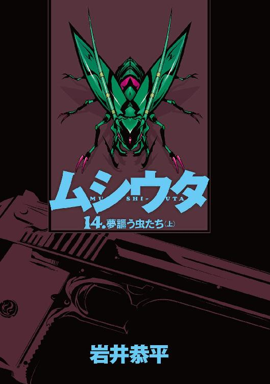
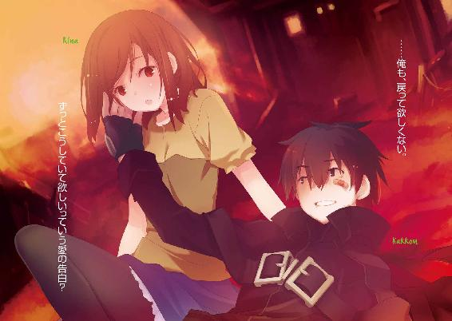
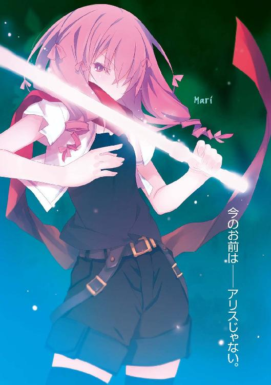
ムシウタ
14．夢謳う虫たち（上）
岩井恭平

角川スニーカー文庫
本作品の全部または一部を無断で複製、転載、配信、送信したり、ホームページ上に転載することを禁止します。また、本作品の内容を無断で改変、改ざん等を行うことも禁止します。
本作品購入時にご承諾いただいた規約により、有償・無償にかかわらず本作品を第三者に譲渡することはできません。
本作品を示すサムネイルなどのイメージ画像は、再ダウンロード時に予告なく変更される場合があります。
本作品は縦書きでレイアウトされています。
また、ご覧になるリーディングシステムにより、表示の差が認められることがあります。
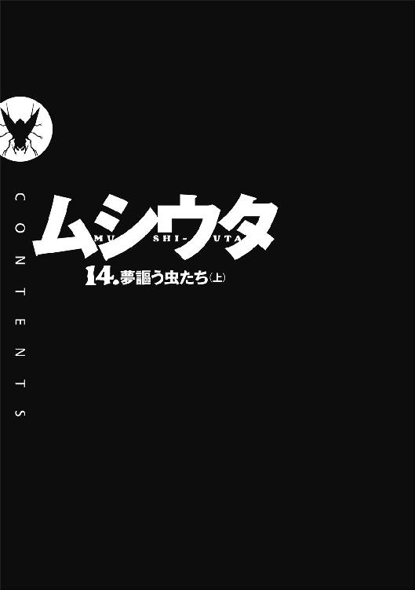
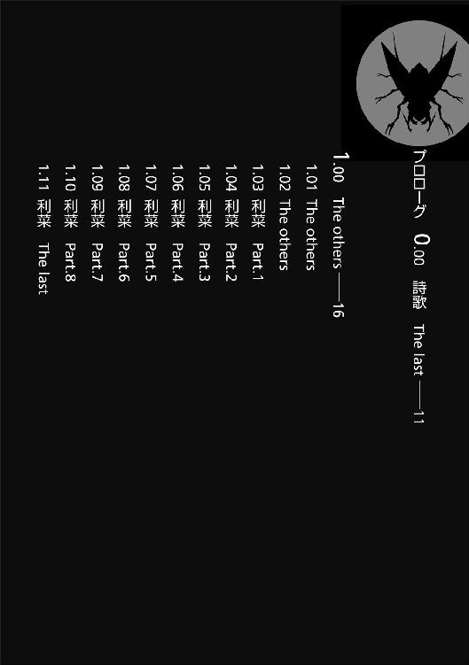
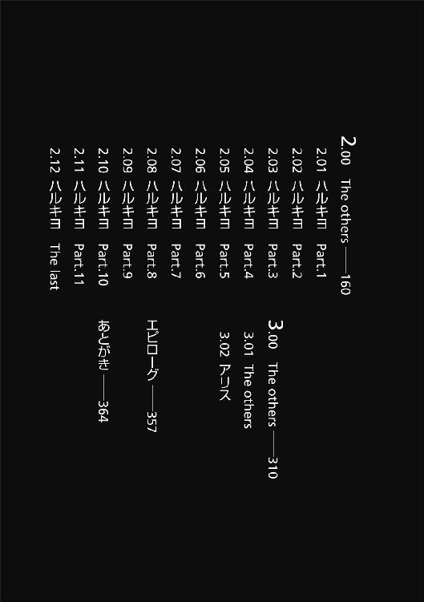
ムシウタ 夢謳う虫たち（上） ＣＯＮＴＥＮＴＳ
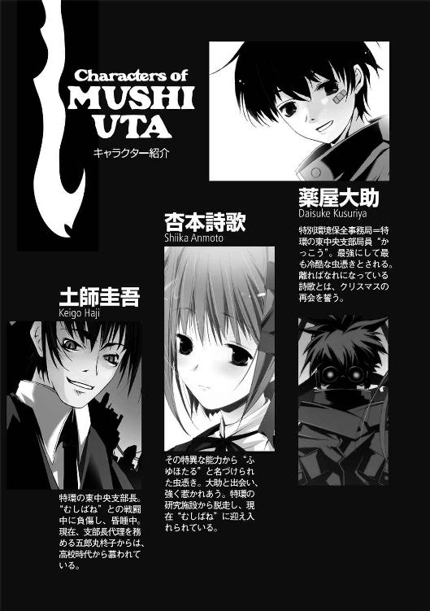
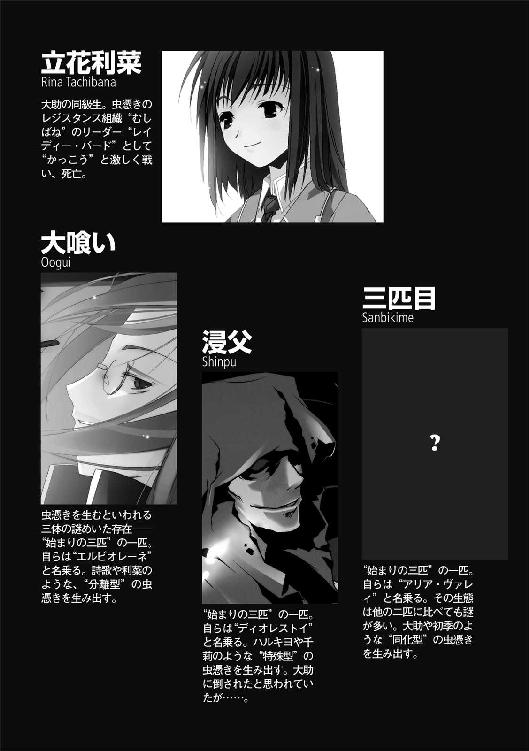
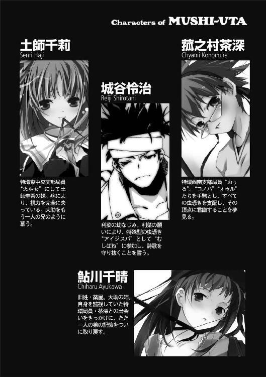
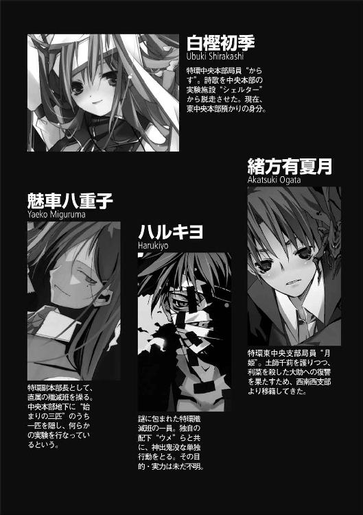
プロローグ 0.00 詩歌 The last
額から血を流しながら、杏本詩歌は微笑みを浮かべた。
こうなることは、分かっていた。
こうして全ての戦いが終わった時──こんな形で幕を閉じるのだろうと悟っていた。
杏本詩歌という、ちっぽけなくせに大きな力を持ってしまった自分。それは今と同じような状況で始まり──結局、同じような結末に辿り着くのだろう、と。
「──これで生き残ったのは、俺たちだけだ」
詩歌と向かい合う少年が、静かに呟いた。
血に塗れた顔、疲労で震える両脚、しかしピタリと詩歌に向けて構えた右手には、自動式の大型拳銃が握られている。
生きているのが不思議なほど、満身創痍の少年。
詩歌が今の彼を見て思うのは──安堵だった。
やっと、終わる。
彼は今までに、一体どれだけの戦いを生き抜いてきたのだろう？
どれだけ多くの敵を倒し、自らも傷ついてきたのだろう？
詩歌自身も、全く同じだ。
だが長く辛かった戦いの日々も──ここで、ようやく終わる。
「そうだね」
にっこりと微笑む詩歌のそばに、白い影が浮かび上がった。
詩歌の夢を宿した〝虫〟である。
少年が持つ拳銃にも一匹の〝虫〟が舞い降りた。それは形を変え、あっという間に拳銃と同化する。
「やっと、終わる......終わらせられる──」
少年が鮮血で濡れた顔を歪ませた。微笑んだようだった。
疲れ果て、絞り出すような声を聞いて、詩歌の目に涙が滲んだ。
「うん、やっとだね......」
微笑み合う二人の虫憑きを、破壊され尽くした街並みと、折れた高層ビルの群れが見守っていた。都会の明かりが両者を照らすが、自動車や通行人の往来はない。
幻想のような都会の光景だが、これは夢や幻ではない。
長い夢の果てに辿り着いた──現実である。
「俺は──俺たちは、ここまで来た......」
「何度も諦めかけたけど、ここまで来られた......」
少年の頭上に、白く輝く一片の雪が生まれた。
それはひらひらと舞い降り、少年が持つ拳銃に近づいていく。
見つめ合う少女と、少年。
たった二人しか世界に存在しないかのような静寂を──大音量の銃声が引き裂いた。
少年が構えた拳銃が火を噴き、放たれた弾丸が詩歌の〝虫〟を撃ち抜く。
「──ッッ！」
顔を歪め、のけぞる詩歌。自分の〝虫〟が粉々になり、光の欠片となって散っていく。
激痛と、抗いようのない虚無感。
しかし、それ以上の──幸福感。
矛盾する二つの感情に襲われる詩歌の鼓膜を、耳障りな不協和音が揺さぶった。
雪の欠片に触れた少年の拳銃が、見えない力に押し潰されて破壊されていく。
消えゆく二匹の〝虫〟の断末魔の叫びが、崩壊した都会に響き渡る。
胸が締めつけられるような鳴き声は、叶うことのなかった夢を嘆く叫びであり──。
それでも諦めきれない、小さな夢を謳う声だった。
「──ッ」
少年が顔を歪め、地面に膝をつく。
二匹の〝虫〟が消滅し、二人の虫憑きが地面に倒れた。
「......っ！」
詩歌と少年は、互いに手を伸ばし。
両者の指先が、触れ合う。
以前にお互いの指に触れたのは、ほんの数ヶ月前のことだった。
それなのに、懐かしく──温かい。
少年もきっと、詩歌と同じ思いなのだろう。彼の微笑みを見れば分かる。
ようやく触れられた温もりを感じる二人の瞳から、急速に光が失われていき──。
完全に、消える。
指先を絡め合ったまま、二人は同時に地面に伏した。
安息と喪失感に包まれる詩歌の脳裏に、記憶と感情の波が押し寄せた。
〝虫〟を殺され、欠落者という生ける屍になりゆく兆候。
走馬燈であり、夢の断末魔でもある。
「......」
駆け巡る記憶が、ここに到る経緯を思い起こさせる。
なぜ、このような結末に到ったか。
なぜ、このような結末を──選んだのか。
その記憶を最後に、詩歌は完全に意識を失う。
詩歌と、同じ夢を持つ少年。
二人とも望んで欠落者となり、何もかもを終わらせる。
それが。
二人の虫憑きが選んだ、二人の夢の終着点だった。
1.00 The others
「お兄ちゃん」
小さな声で、大樹は目を覚ました。
重い瞼を開いて頭を傾けると、妹の凛々絵がドア越しに顔を覗かせていた。髪を二つに縛って中学校の制服を着ている。
「ごはん、早く食べなさいだって」
そう言って、凛々絵がドアを閉じた。階段を下りていく足音が聞こえる。
「んー......」
ベッドの上で上体を起こし、目を瞑ったまま呻く。
「──また、ヘンな夢......」
奇妙な夢を見た。
それもここ最近、同じような夢を見ることが多い。
いや、正確には全く違うのだが、登場人物たちが皆、同じような境遇の──。
「......んっ」
見た夢を思い出そうとすると、二度寝してしまいそうだ。大樹は気合いを入れて両目を開け、だるい足取りで自分の部屋から出る。階段を下りると、母が振り返った。
「やっと起きたの？ ほら、早く朝、食べちゃいなさい。あと大樹だけなんだから」
「ん」
「いい加減に自分で起きることを憶えろ、大樹」
スーツを着ながら、父親がこちらを睨んだ。父はサラリーマンで管理職についている。
「あっ、やっと起きたの、お兄ちゃん」
廊下から姿を現したのは、長女の希海だ。父親が振り返って目を細める。
「希海、何度も言ってるが......髪を縛るか、切るかしなさい。伸びすぎだ」
「......はい」
素直に髪をゴムでとめる希海を横目に、大樹はテーブルについて味噌汁を口にする。
毎朝同じ、我が家の見慣れた光景だ。
堅物の父親が時間通りに身支度を調え、几帳面な母親が家族の出勤や登校の準備を済ませる。ごく普通の高校二年生である大樹は寝坊し、高校一年生の希海が半分くらい身なりを調え、中学生の凛々絵がきっちり身なりを調え終えている。
大樹の家族は、両親と一男二女の子供で計五人。
今も昔も変わらない一家だが、今日にかぎって大樹は妙な違和感を覚えた。
「......」
リビングのソファでテレビを見ている凛々絵はいい。細い手足や、後頭部で二つに縛った髪もいつも通りだ。おとなしいが、常にすまし顔で自分から動くので、手のかからない妹である。
気になったのは、長女の希海のほうだ。学校指定の制服をきちんと着ていて、素行も良い。成績や運動能力も悪くないはずだが、特定の部活に入ることもなく目立たない生活を送っているようだ。たった今も縛った髪を解き、三つ編みにしようか迷っている。その程度が彼女のおしゃれ感覚の限界らしい。
「希海......お前、背ぇ伸びた？」
「え？」
心底、不思議そうな顔を向けられてしまった。思わず慌てる大樹。
「あ、いや、なんか......そんな気がした、ような？」
「どうしたの、急に？ お兄ちゃん」
首を傾げ合う、大樹と希海。
「凛々絵、テレビの音をもう少し小さくしなさい」
父に注意され、凛々絵がリモコンを操作する。
テレビ画面に映し出されているのは、非日常的な光景だった。
どこかの車道を封鎖する、自衛隊の装甲車の群れ。
動かない電車の駅で立ち往生する人々と、彼らにインタビューする報道陣。
遠巻きに空撮される、高層ビルが並ぶ街並み──。
「......」
リビングにまで緊迫感が伝わり、大樹たち一家が無言になる。
「──まったく......」
父が苛立った様子で嘆息した。母が不安そうに眉をひそめる。
「赤牧市のほう、ずいぶん大変なことになってるのね。この辺は遠いからいいけど......」
「何が起きているのかも国民に知らせないとは、国は一体何をしてるんだ」
国の中枢機能が集められた都会、赤牧市。
そこに緊急の避難勧告が発令されたのは、つい先日のことだ。住民は強引な退避を強いられ、報道規制をされているのか、マスコミも正確な情報を伝えられずにいる。
国の機能すら危ぶまれる突然の事態に、当然、テレビは報道番組で一色に染まった。避難した人々の現状を伝えたり、国際社会から関心が集まっていることも報じている。
実際、赤牧市や周辺都市は混乱しているのだろう。
だが現地から遠すぎる地方としては、その土地での教育や経済を滞らせるわけにはいかない。普段と同じように学生は学校に行き、社会人は会社に行く者も多い。
「赤牧市じゃないけど、大丈夫かしら、お父さん？ 近くの桜架市には......」
「桜架市がどうした」
「あの子がいるでしょ？ あなたの妹さんの子供さん。ほら、薬屋──」
「妹とは縁が切れてる。子供のことも知らんな」
「でも......あなたの甥なのに」
ピクリと凛々絵が反応して、父母を振り返った。
電波が乱れたのだろうか。一瞬、赤牧市の遠景を撮影していた生中継のカメラ映像が乱れた。一秒にも満たないノイズが画面を揺らす。
「──」
両親が無言で見つめ合い──不毛な話題を嫌ったのか、互いに口を閉ざした。
大樹は少なからず驚いていた。父に妹がいるなんて初耳だ。それも子供がいるということは、大樹にとって従兄弟にあたる。
何事もなかったように玄関に向かう父母を見送りながら、大樹は希海に尋ねる。
「おい、希海。オレらに従兄弟がいるなんて、知ってたか？」
「え？」
希海が意外そうに振り返った。一瞬、真顔で考えて──首を横に振る。
「ううん、ぜんぜん知らなかった」
「だよな」
念のために凛々絵にも視線を送るが、彼女も首を左右に振った。
従兄弟の存在──。
そんな小さな疑問を抱きつつも、大樹は登校の準備を済ませて家を出る。
登校路である国道は、いつもより若干静かに見えた。道路を走る車も、すれ違う通行人の数も、昨日より少ない。
大樹が通う高等学校は、地元でも偏差値の高い進学校である。制服のブレザーも人気があり、去年は大樹が、今年は妹の希海が、かろうじて競争率の壁をくぐり抜けることができた人気校である。
いつもはブレザーで埋まる校門が、今朝は明らかに密度が低かった。
赤牧市を襲った異変による実害は、大樹の住む地方にまで及んではいない。だが社会的に及ぼす不安や危機感は、確実に国中に伝わっているようだ。
大樹は自分の所属する教室に入ることで、そのことを実感する。
「おす」
大樹の挨拶に振り向くクラスメートの数が、昨日の半分ほどになっていた。
「おう、大樹」
「おはよー」
「ああ、大樹くんは来たんだ......」
教室の半分ほどの席が、空席だった。
長身の男子生徒が、大樹の肩に腕をかけて言う。
「驚いたか？ みんな赤牧市のアレにビビッちまって、家に閉じこもってるんだろ」
「ビビッたとか、そういう問題じゃないだろ」
苦笑いして自分の席に鞄を置く大樹。別の友人が近づいてくる。
「まあな。いくら遠いからって、何があるかも分からないんだ。せめて何が起きてるのか分かるまで、学校なんて行かせないほうが普通の親なんじゃねーの？」
「それじゃあ、私たちの親はどうなのよ？」
女子生徒も集まってきた。
「どうせなら休校にしちゃえばいいのに」
「先生も親も、同じだろ。赤牧市で何が起きてようが、俺らの勉強に遅れが出るほうが一大事なのさ」
「なあ、それで赤牧市じゃ何が起きてんの？ 誰か知ってるやつ、いねえ？」
「いやあ、ネットじゃ色々言われてるけど、ガセばかりで──」
あれこれと愚痴り出す同級生たち。
大樹は椅子に座り、嘆息した。
赤牧市で何が起きているのかなど、知る由もない。
現地から遠く離れたこの土地で、何か起きるとも思えない。もちろん警戒して自宅に籠もる人々を笑うつもりもないが。
大樹の周りで、何か変化が生じるとも思えない。どこか遠くで何が起きようと、大樹の日常は変わらない。
やや厳しいものの何不自由なく育ててくれる両親がいて、二人の妹がいて、ともに勉学に励む学友がいる。大樹はそれらに不満はない。むしろ恵まれていると思う。
ただ、そんな幸福な日常の中に──小さな波紋というか、戸惑いが生まれただけだ。
赤牧市の問題ではない。
実のところ、大樹がため息をつく理由は、全く別のところにあった。
「なんだ、大樹？ お前も学校に来なけりゃ良かったって？」
男子生徒に笑いながら顔を覗き込まれ、大樹は頰杖をついた。
「違うよ。オレは、ちょっと嫌な夢を......」
「夢？」
何人かの級友が聞きつけて、大樹を振り向いた。
言うべきか、言わざるべきか。
一瞬、迷ったが──隠すようなことでもないだろうと思い、口を開く。
「なあ、お前ら──虫憑きって知ってるか？」
シン、と教室が静まり返った。
ある意味、赤牧市の話をしていた時よりも級友が緊張するのを見て、大樹は慌てる。
「あ、いや、何でもない。悪い......」
やっぱり話すべきではなかったようだ。
なぜなら、虫憑きと呼ばれる人々は、あくまで噂のレベルとはいえ人々に恐怖されるような存在であり──。
そんな人々が、大樹の夢に出てくるのだ。
最初に見た夢に出てきたのは、一人の美しい虫憑きだった。
「なんでもない......」
呟きながら、大樹はその虫憑きの少女を──。
ナナホシテントウムシを操る、美しい虫憑きのことを思い出していた。
1.01 The others
〝虫〟という超常の存在がいる。
十数年前に突如として現れたそれは、思春期の少年や少女に取り憑くとされた。夢──こうありたい、こうなりたいという人の思いを喰らう代わりに、宿主に様々な力を与えるのだ。それらは外見が昆虫に似通っているため、〝虫〟と呼ばれている。
〝虫〟に取り憑かれた人々は、虫憑きと呼ばれた。
「間もなく、作戦１を終えた〝照〟たちが帰還します！」
日本国、赤牧市。
同都市が国内で最大の都市としての機能を失ってから、数日が経過していた。
その原因となったのは──〝虫〟。
人々に〝虫〟を宿すとされる〝始まりの三匹〟、そしてそれらに対抗する虫憑きの戦いが、赤牧市を戦場へと変えていた。
「作戦２を終えたハルキヨたちも戻ります！」
住民が避難した赤牧市内にある、競技用のドーム施設。
周辺を自衛隊の車両に守られたドームの内部に、大勢の少年や少女たちが集っていた。様々な色のコートやゴーグル等の装備で顔を隠した虫憑きの集団である。
「作戦３から、〝兜〟らと〝むしばね〟の連合部隊も帰還します！」
ドームの隅に設営されたテント内に、次々と報告の声が上がった。
特別環境保全事務局──極秘裏に虫憑きを捕らえ、〝虫〟や虫憑きの存在を世間から隠匿するために創られた政府機関である。特環と略称されるその組織は、捕獲した虫憑きを訓練し、新たな虫憑きを捕らえるための尖兵として利用する。
ドーム内にいる虫憑きは全国から集められた精鋭の虫憑きだ。
そしてテント内にいるのは、特環の各支部を任された支部長たち。さらに政府から派遣された閣僚、情報管理を行う少数の虫憑きという面子である。
〝虫〟発生以来、それに対抗するために築き上げた組織力が、この場所に集っていた。
なぜか。
それは突然に現れた一人の強力な虫憑きに対抗するためであり──。
その目的は、すでに終えた後だった。
全ての作戦に失敗する──という形で、である。
「〝Ｃ〟や〝大喰い〟の追撃は？」
東中央支部支部長、土師圭吾が尋ねると、通信機を前にした虫憑きが振り向いた。そのゴーグルの表面に、彼の外見が反射して映る。
ひょろ長い体型と、病人のように青ざめた顔。切れ長の瞳は二十代後半という実の年齢よりも高く見られることが多い。まるで柳の下に浮かぶ亡霊みたいだ、と我ながら思う。
「〝照〟たちに対し、〝Ｃ〟からの追っ手は迫っていないようです」
「ハルキヨたちも同様です」
別の虫憑きからの報告に、微笑む人物がいた。
圭吾と同世代の女性だ。慈愛すら感じる眼差しと、泣きボクロが印象的である。着ている服がスーツではなくローブだったら、聖母と見間違えたかもしれない。
「〝兜〟や〝むしばね〟は、どうです？」
魅車八重子。特別環境保全事務局の副本部長であり、同機関の実質的なトップである。
「交戦していた〝大喰い〟は、囮である海老名夕とともに姿を消したままです」
「そうですか」
にっこりと微笑み、魅車が圭吾を振り向いた。
「〝Ｃ〟討伐作戦、および〝大喰い〟討伐作戦は、完全に失敗ですね」
〝Ｃ〟。
その名で呼ばれる虫憑きの出現が、赤牧市が封鎖された原因である。
虫憑きを生むとされる原虫、〝始まりの三匹〟──。
そんな怪物たちすらも取り込みつつあるのが、〝Ｃ〟という虫憑き。
超種一号という特別な称号を与えられ、これまでにない脅威として殲滅対象に指定された虫憑きを倒す──それこそが結集した虫憑きたちの最大目的だった。
しかし〝Ｃ〟殲滅のために送り込まれた精鋭たちは、返り討ちの憂き目に遭い──。
全ての虫憑きが、敗走する事態に陥っている。
「しかし被害は最小」
聖母の微笑に、圭吾は軽薄な薄笑いで答えた。
「二人の一号指定を復活させ、連れ帰りつつあります」
「旧世代の一号指定にすがって......あくまで新しい世界の変化を受け入れないつもりですか？ 土師支部長」
「新しい世界はやって来ます。ただしその世界は新しい虫憑きなど二度と生まれない世界ですよ、魅車副本部長」
場違いな笑みを交わし、見つめ合う土師圭吾と魅車八重子。
そこへテント内に迷彩服を着た自衛隊隊員が数人、飛び込んで来た。
「その女は、もう副本部長ではない」
携帯電話でどこかと連絡を取り合っていた初老の男が、脂汗を浮かべた顔を魅車に向けた。日本政府から派遣された中央省庁の副大臣である。
「魅車八重子、お前の身柄を拘束する。〝Ｃ〟暴走の責任を追及することはもちろん......これからは誰もが虫憑きになるだと？ その反社会的な思想についても詳しい話を聞かせてもらうぞ」
「聞きたいならば、いくらでも」
魅車は細い目をさらに細めただけで、抵抗はしなかった。自衛隊隊員が魅車の腕を後ろ手に回し、両手の親指に樹脂製の指錠をかける。
「魅車副本部長......これまで貴女に協力してきた身で、今さらだが──私には貴女の考えが理解できない。貴女は、こんなにも狂っていたのか......」
高級スーツを着こなした紳士然とした中年男性が唸った。北中央支部の岳美支部長だ。
彼以外の支部長らも、厳しい顔つきで頷く。
「〝Ｃ〟という化け物を生んだだけじゃなく、〝Ｃ〟によって世界を虫憑きで埋め尽くそうだなんて......あまりにも......」
「馬鹿げている......」
魅車は沈黙で彼らの非難を受け流し、離れた場所にいる女性を見た。
視線の先にいるのは、五郎丸柊子。二十代半ばの社会人であるにもかかわらず、髪には寝ぐせがつき、スーツもろくに着こなせていない女性。土師が姿を隠していた間、彼女が支部長代理として東中央支部を率いていた。
「貴女も、私が狂っていると思いますか？ 五郎丸支部長代理」
「わ、私は──」
涙の痕を残す五郎丸柊子の視線が、刹那の迷いを見せ──圭吾を一瞥した。
「なぜ、そんな目でぼくを見るんだい？ 心外だなあ、ぼくも彼女の同類だとでも？」
彼が薄ら笑いを見せると、柊子は黙って俯いてしまった。
柊子とは長い付き合いで、直属の上司と部下に当たる。昨日までは全幅の信頼を寄せてくれていたはずなのに、彼女の中で小さな変化が生じつつあるようだ。
「〝照〟たちが帰還しました！」
報告の声と同時に、作戦本部であるテントの外が騒がしくなった。
土師は柊子の横を通り過ぎ、テントを出た。
「おやおや、これは......」
彼の視界に飛び込んだのは、お世辞でも凱旋とは呼べない光景だった。
〝Ｃ〟殲滅のために編成された、高位の虫憑きを集めた精鋭チームだったはずだ。二号指定である〝照〟を始めとして、特別環境保全事務局という組織が十年近くかけて磨き抜いた戦力と成果の結晶である。
それが──見る影もないくらい無残に打ちのめされていた。
「──」
待機組の虫憑きたちが道を空ける中、チームを率いる〝照〟が先頭を進む。
十代半ばにして北中央支部のエースとなった、エリート中のエリートである少女が──ただのどす黒い塊となって足を引きずっていた。コートは破れ、北中央支部の象徴であるバイザーが砕けていた。頭からつま先まで変色させているのは、乾いた大量の血と汗であり、何らかの攻撃を受けた焦げ痕でもある。
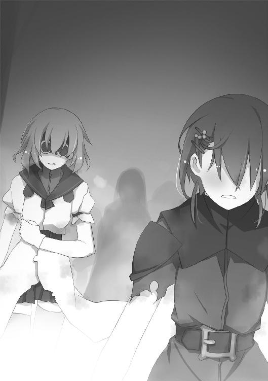
彼女以外にもチーム全員が同様に満身創痍であり、〝霞王〟という虫憑きも例外ではなかった。敵味方から恐れられる戦闘狂ですら、美しい金髪と白い顔を黒く汚している。
作戦の詳細を知らない虫憑きたちも、一目で理解しただろう。
作戦は、失敗した。
特環の最高戦力を集めた精鋭部隊は、哀れな敗残兵となり果てたのだ──と。
「て──」
静寂に包まれたドーム内で、ようやく〝照〟が支部長たちの前に辿り着いた。
「〝照〟以下、作戦１の任務についた戦闘員......ぜ、全員、無事に帰還しました......」
一人の死者も出していない。
それが最大の成果であるかのように報告するのは、〝照〟の虚勢だろうか。
「し、〝Ｃ〟殲滅には失敗......で、ですが、予備作戦によって──」
そこまで言って、汚れた顔を凍りつかせる〝照〟。
居並ぶ支部長たちの中で、魅車八重子が拘束されていることに気づいたのだ。
「ご苦労でした、私の愛する〝照〟。作戦から生還したら、貴女を一号に指定してあげる約束でしたね」
魅車八重子が、にっこりと聖母の笑みを浮かべた。
「しかし残念ながら──私はもう、約束を果たすことはできなくなってしまいました」
「あ......」
〝照〟が一瞬、惚けたように脱力したのが分かった。
「そ──そう、ですか......い、いいんです......う、うちは別に......一号指定なんて......」
弱々しく笑って俯く少女は、言葉とは裏腹に最後の力まで抜け落ちたかのようだ。
「──土師圭吾？」
ぽつり、と呟いたのは、精鋭チームの一員である〝霞王〟だ。
「え......？」
「土師支部長......？」
「ほ、本当だ......東中央の......！」
「昏睡状態じゃなかったのか？」
精鋭チームのみならず、ドーム内にいる虫憑きたちにも動揺が拡がった。存在感のなさは自他共に認めるところだが、ようやく気づいてもらえたようだ。
特別環境保全事務局の中で、彼は意識不明の状態にあるとされていた。
その理由は土師圭吾という人間が自由に動くためである。魅車八重子と対立状態にあった彼は、ごく一部──腹心である五郎丸柊子以外には覚醒していることを隠すことで、己の描く計画を進めることができた。
その計画が、〝Ｃ〟殲滅作戦における予備作戦である。
つまり──暴走する可能性がある魅車八重子に対する、カウンター。
それは成功し、危うく全滅に陥りかけた特環戦力を救うとともに、小さな希望を持ち帰ることができたのだが──。
「よく戻ってきてくれた、おかえり。──というのは、お互い様かな？」
薄笑いを浮かべる圭吾を迎える面々の表情に、笑顔は少ない。
多くが驚きであり、〝霞王〟にいたっては怒っているように見える。かつてより決して優しい上官であったわけではないため、諸手を挙げての歓迎とはいかなそうだ。
特に、その中の視線の一つ──。
精鋭チームの中で、フードをすっぽりとかぶった人影から感じる敵意は凄まじい。
顔は見えないが、ただ者ではない。
当然だ。彼女こそ、彼の計画によって持ち帰った小さな希望であると同時に──お互いに宿命の仇敵ともいえる間柄なのだから。
「お──お兄ちゃん......？」
呆然と両腕を前に伸ばす少女を見つけ、圭吾は歩み寄る。
少女の目は開いているものの、その瞳は彼を捉えていない。傷つき、しかし頼もしくも成長した少女は、視力のない両の眼に涙を滲ませていた。
「お兄ちゃん......本当に......？ ど、どこにいるの......？」
圭吾は微笑み、震える腕を虚空で彷徨わせる妹、土師千莉を抱きしめる。
「ここにいるよ、千莉。強くなったね......本当に」
「お兄──ちゃん──」
病弱でか弱かった妹が、今や特環の戦力として欠かせない異種二号局員〝火巫女〟である。彼女が戦場に身を投じることに葛藤はあったが──。
圭吾は、今まで彼女を陰ながら見守ることを選択した。
その理由を、いつか妹に語ることがあるだろうか？
「よく生きて帰ってきてくれたね。もう大丈夫だよ、これからは、ぼくもいっしょだ」
「お兄ちゃん......！ お兄ちゃん......！」
堪えていたものを吐き出すように、涙を流して圭吾を抱き返す千莉。兄の感触や匂いを確かめるように、彼の胸に顔を埋める。
「お兄ちゃん......だ、大クンが......大クンがあ......！」
「知ってる。大丈夫だ、千莉は何も心配いらない......今はゆっくり休むんだ」
心からの気休めを投げかける圭吾を、睨む者がいた。
「貴方が、土師圭吾？ 千莉のお兄さん......？」
東中央支部の二号局員〝月姫〟だ。千莉の友人にして、元は反政府の虫憑き集団〝むしばね〟の一員だった人物であることを圭吾は知っている。
「その様子だと、とっくに目を覚ましてたんですか？ 千莉がどれだけ心配していたと思ってるんですか！ 今回の予備作戦も五郎丸支部長代理じゃなくて、本当は貴方が？」
「えっ、そうなんですりりゃっ？」
同じく東中央支部の虫憑き〝まいまい〟が、眼帯をかけていないほうの目を丸くする。
「まあ、そうなるね」
泣き濡れた顔を上げる妹の頭を撫でながら、圭吾は言う。
「黙ってコソコソ動いていた理由は──今回の作戦を見ても分かるだろう？ ある人物とケンカをするための準備をしたり、色々とやることがあったんだ」
妹に「後でゆっくり話そう」と囁き、土師は横に顔を向けた。
圭吾の言う、ある人物──魅車八重子は拘束されてもなお微笑を消していなかった。
対峙する両者を見て、北中央支部の岳美支部長が副大臣に言う。
「──副大臣。魅車副本部長の後を引き継ぐ人物として、彼を推薦します」
「なんだと？」
「土師圭吾......彼は東中央支部の支部長としての実績があります。また今回の件を見ても、苦境の中で最大限の成果を持ち帰ることができたのは彼のおかげです。他の支部長も異論はないでしょう」
岳美支部長の推薦に、沈黙をもって同意する他の支部長たち。
圭吾は人差し指の先で、眼鏡のズレを直しながら笑う。
「貴方に評価されるなんて光栄ですよ、岳美支部長。てっきり、ぼくは貴方に嫌われているものとばかり思ってました」
「国家の一大事とも言うべき事態に、私情は挟むようなことはしませんよ。今、優先されるべきは行動力と判断力です。──〝ＧＡＲＤＥＮ〟などという大それた区域を作るくらい虫憑きの研究に熱心だった君のことだ。虫憑きの扱いはお手のものだろう？」
野心的な岳美は、この局面を打破する重責を負うよりも、圭吾に押しつけたほうが良いと判断したのだろう。まさに彼の言う通り、的確な判断といえる。
「......他に人材がいないのならば、仕方ない」
副大臣が頷いた。
圭吾は口元に笑みを浮かべた。
ついに──ようやく、この時がやって来た。
「土師圭吾。君を中央本部の副本部長──いや、本部長に任命する。特環の総力をもって、〝Ｃ〟という未曾有の脅威を排除するために尽力するように」
圭吾は顔を上げ、周囲にいる人々を見回した。
特別環境保全事務局の支部長たちと、その尖兵である虫憑きたち。
実質、この国における全ての虫憑きを自由に動かすことができる力を──。
圭吾は手に入れた。
この時を、ずっと──待ち望んでいたのだ。
「拝命します」
薄笑いを浮かべ、魅車八重子を見る。
彼女が微笑みを消していた。
権力を奪われて悔しがっているわけでも、失墜した我が身を憐れんでいるのでもない。
ただ、つまらなそうに嘆息し、呟く。
「貴方が特環を手中にすることだけは、避けたかったのですが......残念です」
「貴女にとっては、そうでしょう。──ぼくらは、あまりに対照的だ」
魅車八重子という人間は、虫憑きを愛した。
愛の形はともかく、彼らが永遠に存在することを望んだ。
一方、土師圭吾という人間は、虫憑きを愛することはない。
「私はただ、私の愛する虫憑きたちに降りかかった最大の不幸を嘆きます」
黙禱するように目をつむる魅車八重子。──圭吾が彼女の狙いを先読みできたように、彼女もまた圭吾の狙いを予見しているのだろう。
だが、そんなことは関係ない。
虫憑きたちを操る指揮棒は、今や──土師圭吾の手に渡った。
目を細める圭吾を見上げて、千莉が眉をひそめた。
「お兄ちゃん......？」
「そんな顔をしなくても、大丈夫だよ、千莉。もう、心配いらないんだ」
千莉の頭を撫で、圭吾は部下の五郎丸柊子に向き直った。
「五郎丸くん。キミを正式に東中央支部の支部長に任命する。いいね？」
「......は、はい！」
自らの出世を、しかし複雑そうな表情で受け入れる五郎丸柊子。
作戦本部のテントから、情報班の虫憑きの声が飛んだ。
「ハルキヨと〝兜〟たちが帰還しました！ 間もなくここにやって来ます！」
圭吾は居並ぶ虫憑きたちの前に進み出る。
「態勢を立て直そう。〝Ｃ〟は強力な敵だが、決して倒せない敵じゃない。第一次作戦は空振りに終わったけれど、こちらの戦力を大きく損なったわけでもない。それどころか、切り札をいくつか手に入れたと言ってもいい」
〝照〟たちの敗走が、虫憑きの士気を下げてしまったことは否めない。
だが、じゅうぶんに持ち直すことができる。
圭吾はそれだけの戦力を得ることに成功したし、何よりもずっと思い描いてきたのだ。
虫憑きの戦いを終わらせる──。
そのたった一つの目的を果たすために、あらゆる手を打つ覚悟がある。
「今は休息に努め、戦力を補充した上で再び〝Ｃ〟を──」
「待て」
圭吾を止めたのは、虫憑きでも特別環境保全事務局でもなかった。
汗で顔面を濡らした副大臣である。政府に状況を報告していたのか、通話を終えたばかりの携帯電話を下ろす副大臣。
「──先ほどの話は、取り消しだ」
圭吾は、首を傾げた。
「土師圭吾、君の本部長就任は却下された。同時に──」
空気が凍りついた。
圭吾は驚き、副大臣の発言の真意を推測する間もなく──。
その宣言は、なされた。
「特別環境保全事務局を、現時刻をもって解体する」
無意識に土師が視線を向けた先で──。
魅車八重子が、クスリと微笑んだ。
1.02 The others
「同時に、各支部長および全虫憑きをこの場で拘束する」
副大臣の宣言が、静寂のドーム内に響き渡った。
誰もが何も語らず、身動き一つとることができなかった。
たった今、なされた宣言──。
特別環境保全事務局の解体、及び構成員の拘束。
その意味を理解するのに、誰もが一瞬の時を要した。
「特環が......なくなる？」
誰かが漏らした呟きが、圭吾の思考を揺さぶる。
特環を解体？ あり得ない──。
魅車八重子が牛耳ってきた特別環境保全事務局は、易々と解体されるような脆い機関ではない。当然のように国の中枢部に協力者を配置しているし、もし解体を決定するとしても複数の省庁や組織の合意が必要である。
念入りな根回しをしているのは、圭吾も同じだ。特環の協力者や敵対勢力の監視は怠っていない。解体に結びつくような動きがあれば、とっくに察知している。
「ハルキヨが到着しました！」
あり得ないことが、実際に起きている──。
魅車八重子が驚いている様子はない。彼女だけは、現状を想定していたということだ。
魅車が想定していたこと。
それは、つまり──特環の敗北。
〝Ｃ〟の勝利。
ひいては魅車八重子の凋落。
現状が、その結果を踏まえた上でなされているとしたら──。
「これも〝Ｃ〟の仕業というわけですか？」
圭吾は魅車八重子を横目で睨みつける。
解体決定の判断が、早すぎる。──それも土師が実権を握った途端に、通常の手続きではあり得ない早さだ。
国のトップに近い位置で、人外の力が働いたとしか思えない。
そしてそれが実現したということは──かねてより、そうなるよう誰かが仕組んでいたことは間違いない。その仕組みを仕込んだ人物は明白である。
「〝Ｃ〟が勝利した以上、少しの反撃も許さないと？」
圭吾の言葉に対し、魅車八重子が首を傾げてとぼける。
「〝Ｃ〟は新しい世界を創るための段階を踏んでいるだけです。貴方が現れなければ、誰もが苦痛なく〝不死〟を得られたでしょうに......」
「欠落者と変わらない、ただ死なないだけの〝蘇生者〟としてね。──〝Ｃ〟を創ったのは貴女だ。貴女は一体、〝Ｃ〟に何をさせようとしているんだ？」
段階、と魅車は言った。
国の中枢部にまで罠を張り巡らされていた以上、全てが魅車八重子が想定した中で事が進んでいるのは、もはや確実である。
〝Ｃ〟の暴走は、ただの暴走ではない。
何らかの大きな企てに従い、その計画通りに進行している──。
「〝方舟〟を創るのですよ、土師圭吾」
魅車八重子が微笑んだ。
「貴方は私と対照的と言ったけれど──結局のところ、私たちは似た者同士なのです」
「......？」
魅車の言葉の意味を理解できず眉をひそめる圭吾の耳に、どよめきが飛び込んだ。
「──取り込み中かよ？」
ドーム内部に姿を現したのは、またもや満身創痍の虫憑きたちだった。
先ほどの〝照〟たちよりも人数は少ないが、実力のある虫憑きたちである。特に先頭に立つ赤い髪の男──ハルキヨは炎の魔人と呼ばれ恐れられる人物だ。
「俺には関係ねぇけどな」
仲間たちが今にも倒れそうな中、血塗れのハルキヨだけは堂々と佇んでいた。その引き締まった両腕に、ジャケットを羽織った少女を抱きかかえている。
「......アリス──か？」
ハルキヨが抱えた少女を見て、〝霞王〟がふらりと前に出た。他にも〝ねね〟や〝玉藻〟といった中央本部に所属する虫憑きが、顔色を変える。
「アリスちゃん......？ 本当にアリスちゃんなの？」
「アリスさん......！ 目を覚ましたのぉ？ で、でも、それじゃあ〝不死〟が──」
「選手交代だ。今頃、コイツの代わりに噓つき野郎が〝不死〟とベッドインだぜ」
ハルキヨが〝霞王〟目がけて、軽々と少女を放り投げた。〝霞王〟が「投げんな、糞野郎！」と怒鳴って霞で受け止める。ハルキヨのとなりにいる久瀬崎梅が「うわあ、また起きて暴れ出したらどうすんのさ！」と抗議する。
「アリス......？ 誰だ？」
「虫憑きなのか？」
「ほ、本当にハルキヨか......？ どうして、ここに......あの女は......？」
突然の特環解体に続き、炎の魔人の登場でドーム内は大混乱である。
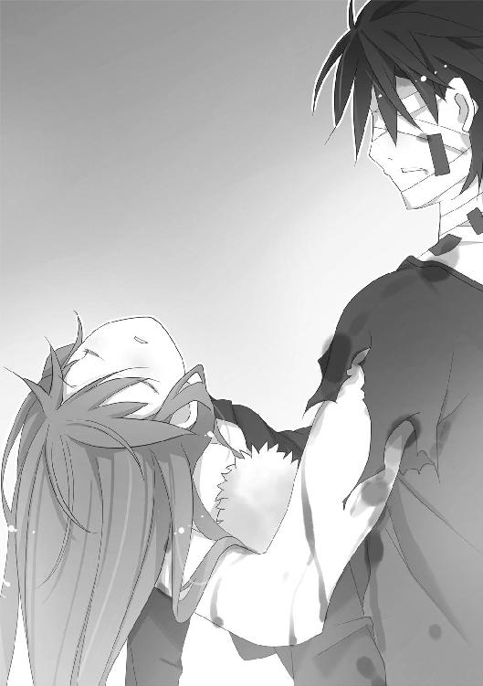
ハルキヨが連れ帰った少女は、すでにもう存在しないとされていた一号指定の虫憑きだ。だが圭吾が今、そのことを全員に説明している余裕はない。
「ご苦労様、ハルキヨ。しかし、どうやらまだ彼女は本調子じゃないか......」
眼鏡のズレを直しながら労る圭吾を睨み、ハルキヨがこちらに向かって歩み寄る。
「狸寝入りはオシマイか？ てめえが俺に届けた人身御供は役に立ったぜ」
しかし魔人はそのまま彼とすれ違い、拘束されている魅車の前に立つ。
「......」
「どうしました、ハルキヨ？ 何か言いたいことがありそうですね。愛しい〝眠り姫〟と引き合わせてあげたお礼でしょうか」
魅車八重子の微笑みに、ハルキヨも微笑で応えた。
「俺のダチをコケにしてくれた落とし前をどうつけさせるか......考えてるところだ」
魔人の双眸に炎が宿った。赤い髪がチリチリと灼ける。周囲の空気さえも焦がす熱波が陽炎を生み、ドーム内の気温が一気に上がる。
「とりあえず、その〝自分は死んでも構わない〟っつー態度が気に入らねえな。てめえにゃ親兄弟や子供はいねえはずだが......死んでも希望が残る、みてぇな救いのある〝殉死〟じゃ、罰にはならねぇよなあ？」
凄むハルキヨに対し、魅車八重子は涼しい顔だ。
本当に死を恐れていないのか。それとも──。
「......！」
魅車の態度を見て、圭吾はハッとした。作戦本部のテントを振り返る。
「〝兜〟たちに伝えるんだ！ ドームに戻ってくるな！」
「──もう到着しました！」
その声と同時に、ドーム内にいる虫憑きの密度が増した。
特環の局員である〝兜〟と、大勢の虫憑きたち。さらに加えて、〝むしばね〟のメンバーたちがぞろぞろと姿を現したのだ。
圭吾は口の中で、こっそりと舌打ちする。
「は、土師支部長......？」
部下である〝兜〟が、圭吾の姿を見て驚いた。〝兜〟もまた土師が昏睡しているものと思い込んでいた一人だが、その反応に構っているヒマはない。
「〝兜〟、〝ふゆほたる〟はどこにいるんだい？」
帰還した面々を見回して、圭吾は端的に尋ねる。
〝むしばね〟のリーダーにして秘種一号指定の虫憑きである〝ふゆほたる〟の姿が見当たらなかった。〝むしばね〟の幹部たちや赤瀬川七那といった重要人物たちは揃っているのに、である。
「──ここに帰還する途中、姿を消しました」
圭吾は眼鏡の奥で、わずかに目を見開いた。
ドーム内にいる虫憑きたちからも、戸惑いの声が上がる。
「作戦失敗の動揺で、目を離した隙に......なぜ姿を消したのか、自らの意思による行動かどうなのかも分かりません。ですが特環の局員を何人か捜索に回しています。情報班も動員すれば、すぐに──」
「残念だけど、それはもう無理なんだ」
圭吾は言う。
「......は？」
「特別環境保全事務局という機関は、さっき機能を失ったばかりなんだよ」
帰還したばかりの〝兜〟や特環の虫憑きたち、さらに〝むしばね〟たちまでもが、いっせいに凍りついた。ハルキヨも眉を動かし、圭吾を一瞥する。
「そ、その通りだ。〝むしばね〟にも拘束命令が出ている。誰一人として、ここから出ることは許さん」
副大臣が高らかに宣言するが、その顔は引きつっていた。彼からしてみれば怪物にしか見えない虫憑きを前にしているのだから、怯えるのも当然である。
「少しでも抵抗したら、国家反逆の意思ありと見なして指名手配することになるぞ」
沈黙する、虫憑きたち。
やがて沈黙はざわめきと変わり、彼らの視線が副大臣から圭吾に移る。
「......」
「な、何を黙っている、土師圭吾！ こいつら全員に投降と武装解除を命令しろ！」
副大臣の声など、もはや圭吾の耳には入っていなかった。
戦力が──足りなすぎる。
一号指定が二人、いや三人も、この場にいるのだ。本来であれば大規模の軍隊にさえ立ち向かうことができる戦力を秘めていると言っていい。
しかし、である。
現在、力ある虫憑きのほとんどが疲弊し、立っているのがやっとの状態だ。頼みの一号指定も、〝ふゆほたる〟は行方不明、ハルキヨは──堂々としているものの消耗しきっているのが見てとれる。虫憑きたちの新たなリーダーとして期待していた〝眠り姫〟アリスにいたっては眠りについたままだ。
そうなると、これから起きるであろう状況を打破できるのは──。
「各自衛隊にも出動要請が出た。て、抵抗しても無駄だぞ......！」
「そんなものは、どうでもいいんですよ。今、我々にとっての脅威は──」
圭吾が言い終えるよりも先に、異変が生じた。
ピリピリと何かが爆ぜる音が、ドームの隅から響いたのだ。
外部から電力を供給すると、その経路から〝Ｃ〟の攻撃を受ける可能性がある。その対処として設置された数台の発電機から、金色の光が漏れ出しつつあった。
発電機のそばに佇んでいるのは、特環の装備を纏った虫憑きだ。発電機を包む金色の光は、その虫憑きから伸びている。
「もしかして......〝兜〟さんたちのチームって、感知能力者いなかった？」
久瀬崎梅が呟いた。ハルキヨがつまらなそうに鼻を鳴らす。
「だせぇな。尾けられた上に、仕込まれたか」
事態を吞み込めず、大多数の虫憑きたちが浮き足立つ中、圭吾は呻く。
「追撃がなかったんじゃない。──ぼくらが一カ所に集まった所を一網打尽にするつもりだったわけか」
圭吾が横に目を向けると、魅車が無言の微笑を返した。
「──〝Ｃ〟の反撃だ」
彼が呟くと同時に、発電機のそばに立つ虫憑きが倒れた。
代わりに床の上に浮かび上がったのは──金色に光る、実体のない輪郭。
王冠とハートマークの模様が並ぶティアラを斜めに冠した、小柄な少女だ。大きな椅子──玉座に座り、分厚いマントと長い髪をなびかせた姿は神々しくもある。
「──」
誰もが、固唾を吞んで見守るしかなかった。
金色に輝く少女──〝Ｃ〟の分身である妖精から、次々と小さな蝶々シーアゲハが放たれていく光景を。
すでに力を使い果たし、立ち向かう余力のない虫憑きたちに金色の波が迫る光景を。
間もなく訪れる破滅を想像しながら、立ち尽くすことしかできない。
「旧い虫憑きは全て〝洪水〟で洗い流され、新しい虫憑きだけは〝方舟〟に──」
詠うような魅車八重子の声が響く。
「そして......〝鳩〟が放たれるのです」
終末を知らせる魅車八重子の預言とともに、シーアゲハの数が増していく。
ドームが絶望の沈黙に包まれる中──。
「やれやれ、やっと特環を手に入れたと思ったのに......結局、こうなるのは東中央支部の宿命なのかな」
圭吾は、嘆息した。副大臣に向き直る。
「副大臣。我々はこれより政府の管理下から離脱し、単独行動に移ります」
「なっ......？」
「いわゆる──クーデターというヤツですよ」
絶句する副大臣を無視して、圭吾は声を張り上げた。
「特別環境保全事務局、および〝むしばね〟全員に告ぐ！ 全力でこの場から撤退せよ！」
金色の妖精とシーアゲハの前に圧倒されていた虫憑きが、いっせいに圭吾を見た。
「すでに政府は〝Ｃ〟の影響下にあるようだ！ この場で欠落者にされて──その上で、また蘇生者として〝Ｃ〟の手下にされたくなければ、ここから撤退する他に道はない！」
選択肢はないし、一刻の猶予もない。圭吾はまくし立てる。
「〝照〟！ キミが虫憑きたちの指揮をとれ。一人でも多く、ここから離脱させるんだ」
「う、うち......？ で、でも、こちらにはもう戦力が──」
〝照〟が驚いた顔で、圭吾に抗議する。
彼女の言う通り、味方に戦う余力はない。最強の虫憑きともいわれるハルキヨもかなり消耗している上、彼が理由もないのに他の虫憑きを助けるとも思えない。〝眠り姫〟アリスもいまだ眠ったままだ。
だが、たった一人だけ──まだ戦える人物が残されている。
「我々が退避するまででいい、時間を稼いでくれ──」
土師は後方を振り返り、虫憑きたちの中に埋もれた一人に呼びかける。
「レイディー・バード」
時が停まったかのような静寂が、ドームを包んだ。
シーアゲハの群れも、ピタリと羽の動きを止める。
直後、周囲を揺らしたのは、大きな震動と──。
ドーム中央からせり上がる、巨大な半球形の〝虫〟と、その翅が巻き起こした衝撃によるものだった。
巨軀のナナホシテントウムシ。
その背に立つ、フードをかぶった人物が口を開いた。
「アンタの命令なんか、聞くつもりはないわ」
圭吾は薄笑いで、彼女の声を聞き流す。
実に、なつかしい声だ。
「私はただ、虫憑きを守るだけ」
フードを取り、その少女が狐を模した面を露わにした。
立花利菜。
レイディー・バード。
特別環境保全事務局の宿敵ともいえる、火種一号指定の虫憑きは、かつてある戦いで命を落とし──ここに再び蘇った。
「今も昔も──それだけよ」
ある者は彼女を神のように敬い、ある者は一号指定の中で最も弱いと言った。
その虫憑きが、蘇る前と同じだけの強さと優しさを持っているのか──。
土師圭吾は、決戦に臨む前に見定めなければいけない。
果たして彼女は──本当に立花利菜という少女なのか、を。
1.03 利菜 Part.1
今、ここに居る自分は、果たして何者なのだろう？
自らの夢を〝虫〟に喰われ、死を迎えた立花利菜。
今なお偶像として心酔する者も多い、レイディー・バード。
心身を捧げ、立花利菜をこの世に呼び戻した〝ミミック〟。
そして──まるで蜘蛛の糸にすがる亡者のように、彼女に群がり、彼女とともに蘇った〝何か〟。
今の自分は、その内のどれともいえる曖昧な存在意義によって成り立っている。
「レイディー......？」
「レイディー・バード......！ 死んだはずじゃ......！」
「......レイディー！ レイディーなのか？」
ドーム内にいる虫憑き、特に〝むしばね〟の間に動揺が拡がった。
戦死したはずの初代リーダーが眼前に現れたのだから、当然の反応だ。
しかし彼女は──〝立花利菜〟という形で蘇った彼女は、彼らを顧みなかった。
「私は......レイディー・バードじゃない」
狐を模した仮面の奥から、発電機のそばにいる〝Ｃ〟の分身を睨む。
自分が何者であろうと──今は関係ない。
立花利菜の姿をとってこの場に立つ自分が、はっきりと認識していることがある。
それは自分が、再び戦うために呼び戻されたのだという確信。
そして──一人でも多く虫憑きを助ける、という強い使命感だった。
「私は〝ミミック〟よ！ レイディーの力を真似しているだけ！」
利菜の足下で、巨軀のナナホシテントウムシが翅を拡げた。
翅の振動によって巻き起こった衝撃波が、〝Ｃ〟と発電機を粉々に打ち砕いた。
「土師圭吾の言う通りよ！ ここは私に任せて、みんなは早く逃げて！」
立花利菜と、〝ミミック〟──喜多沢環。
二人分の記憶と夢が、彼女の内に確かにある。
だが今は、立花利菜としての人格を表に出すべきではない。
出してはいけない、と喜多沢環の記憶が警告していた。
ただでさえ崇拝者の多いレイディー・バードが、このような逆境の中で〝復活〟を果たしたら──彼女に対する信仰までもが復活してしまう。
利菜の親友、杏本詩歌がようやく彼らに自らの足で立ち上がる力を与えてくれたのに。
また特別環境保全事務局と〝むしばね〟という、くだらない線引きが生まれてしまう。
その線引きは、この状況において──虫憑きたちを全滅へと導きかねない。
「いいえ──貴女は紛れもなく、レイディー・バードです」
軽やかな声が、ドーム内に響いた。
魅車八重子だ。
「旧世代とはいえ、貴女は一号指定。〝不死〟なのですから......復活という形で、それを具現化することもあるでしょう」
余計なことを──。
利菜が睨みつけると、魅車八重子が目を細めた。
「でも、不完全です。不完全な世界は、創り変えなければならない......」
利菜たちの頭上で、バチバチと何かが爆ぜる音が響いた。
高い天井付近に黄金の光が集まり、再び〝Ｃ〟の姿を作り出した。宙空に浮かぶ玉座に座した〝Ｃ〟が持ち上げた指先から、電撃の糸が放たれる。
無数の稲妻が、虫憑きたちを襲う──かと思ったが、違った。
「──ッッ！」
電撃が襲ったのは、虫憑き以外の人間。副大臣や補佐官らしきスーツの人々、魅車を拘束する自衛隊の隊員たちだ。
「何をする気......！」
利菜は再び衝撃波を放ち、天井の照明ごと〝Ｃ〟の分身を木っ端微塵にした。
がくり、と電撃から解放されて、うなだれる副大臣たち。
「う、うう──」
かなりの衝撃を受けたように見えたが、意識はあるようだ。頭を押さえながら顔を上げた副大臣が、鬼のような形相で利菜を睨みつける。
「き、貴様ら──抵抗するのか！ このテロリストども！」
それまで怯えていた副大臣の突然の豹変に、虫憑きたちが硬直する。
「虫憑きの力を使って、この国を乗っ取るだと？ 本性を現したな、化け物どもめ！」
「──」
「外で待機中の全隊員に通告！ ただちに内部に突入し、全ての虫憑きを粛清せよ！」
誰もが呆然とする中、土師圭吾が皮肉めいた笑みを浮かべた。
「脳神経に流れる電流を操作して、記憶を操る──それが中央本部で行っていた実験で、それを可能にしていたのが──」
「〝Ｃ〟です」
拘束されたままの魅車八重子が、にっこりと微笑んだ。
またもや天井近くに、黄金の輝きが収束しつつあった。──玉座に座る〝Ｃ〟の姿は、実体のない電力の塊にすぎないようだ。利菜の衝撃波では不安定にして拡散させることはできても、完全に消滅させることができない。
「さあ、〝照〟。今のうちに撤退だ」
「し......！ しかし、土師支部長──本部長！ こちらは疲弊して体力が......うちらのチームもここまで戻ってくるのが精一杯で......！ ──そうだ、ハルキヨ！ こんな状況なんだから、アンタたちも力を貸し──」
〝照〟が焦りの表情で振り返り、言葉を失う。
今しがたまでいたはずの炎の魔人が、忽然と姿を消していた。彼の仲間も同様である。
「あ、あの......協調性のないヘンタイめっ！ ううっ......外にいる自衛隊が敵になったとしたら、とっくに周囲は包囲されてるし......そもそも、一度に脱出するだけのスペースがないっていうのに──」
「そこらへんは、レイディーが何とかしてくれる。そうだろう？」
土師に視線を向けられるまでもなく、利菜は天井を見上げていた。
すでに〝Ｃ〟が上半身を復活させ、持ち上げた腕に黄金の輝きを集めていた。あれを雷のように落とされたら、被害者の数は一人や二人では済まないだろう。
利菜は視線を落とし、ホッケースティックを肩に載せた虫憑きを見た。
「......もし天井が崩れたら、お願いね。アンタなら受け止められるでしょ」
「オレ？ よく分かんないけど、お礼は期待してもいい？」
その虫憑き、塩原鯱人が軽薄な笑みを浮かべた。胡散臭い人物だが質量を操る実力だけは信頼できる、と利菜の中の〝ミミック〟が言っている。
「お礼はできないけど──」
利菜は前傾姿勢で自らの〝虫〟にしがみついた。
巨軀のナナホシテントウムシが飛翔した。翅が生み出す衝撃波で、行きがけの駄賃で実体化しつつあった〝Ｃ〟を粉々にし、ドームの壁の前に着地する。
着地の震動が収まらぬうちに、ナナホシテントウムシが再び翅を拡げた。
「断ったら、こうするわ」
目を見開いた利菜の視界が、何千、何万という細かい破片で埋め尽くされた。
音のない破壊の衝撃が、ドーム全体を震わせる。
「──」
利菜の胸の奥で、ほんの少しだけ何かが消えてなくなるのを感じた。
それは夢という想いの欠片。
夢を削って力を行使する感覚を、また味わうとは思いもしなかった。懐かしさすら憶える行為は、かつての立花利菜が生きていた日常を思い起こさせる。
主に彼女が力を向けていた相手は──特別環境保全事務局東中央支部に所属する、火種一号の虫憑き〝かっこう〟。
〝かっこう〟との戦いの中で、杏本詩歌というはじめての友達ができた。
〝ミミック〟の記憶によると、利菜の死後も〝かっこう〟と詩歌はそれぞれの戦いを続けたようだ。
だが、その果てに〝かっこう〟は欠落者となり、詩歌は姿を消した──。
今の利菜の中に、虫憑きを救うという使命はある。
だが──言葉にならない虚無感と、ともすれば投げやりになってしまいそうな喪失感も確かに存在していた。
「──私はもう、いなくなっちゃいたかったのに......」
ドームの壁際から、利菜は数十メートルほどの距離を移動しただけだ。
だが衝撃波を纏って突進した利菜のあとには──巨大な空洞が生まれていた。
ドームを支える堅い壁やアスファルト、鉄骨や支柱も関係ない。利菜の進路にあった全てのものが単純に破壊され、ドームの内部と外界を繫ぐトンネルを造りだしていた。
振り向くと、啞然と立ち尽くす虫憑きたちの姿が見えた。
懸念していた、衝撃による天井の崩壊などは起こらなかったようである。
「て──撤退するわよ！ 〝兜〟は作戦３に同行した虫憑きたちを先導して！ 〝霞王〟、怪我人を運べる？ 〝玉藻〟は支部長たちを守って！」
我に返った〝照〟が、急いで命令を下す。
ドームの外は、風が吹いていた。髪をなびかせる利菜の下に、大勢の自衛隊員が駆けつける。彼らはすでに小銃を構えていた。
ナナホシテントウムシが一羽ばたきすると、自衛隊員たちが吹っ飛んで昏倒した。
「退路の確保は私に任せて！ みんなは早く、この場を離れ──」
次々とドームから脱走する虫憑きとすれ違う中、利菜はビクリと肩を揺らした。
急に体重が増えたのかと思った。
だが、違う。
重さを増したのは──利菜の心。
狐の面を通して映る視界に、そこにはいないはずの人々が現れた。
ある者は地中から這い上がるようにして。またある者は、利菜の背後から彼女を抱きかかえるようにして。次々と伸びる腕が利菜にすがりつき、しがみつく。
利菜以外には見えない、姿なき者たち。
その正体を、利菜は知っていた。
「──いなくなる、なんて都合良すぎか。私はみんなと約束したんだもんね」
かつて虫憑きだった者たち。
中央本部の〝データベース〟の中に封印されていた、欠落者の夢の欠片たち。
まんまと一人だけ生き返ろうとした利菜に、自らも救いを求めてしがみついて離さない夢たちだ。欠落者になっても夢を諦めることができずにいる彼らを拒むなど、利菜にできるはずもなかった。──中には、利菜のかつての仲間もいたのだから。
「大丈夫。みんなの居場所を作るから......それが、私の夢、なんだから......」
虫憑きたちが利菜を置いて逃走していく中。
立花利菜──という形をした、彼女は。
喜多沢環という生贄を得て、多くの夢を道連れに蘇った彼女は。
「他にはもう、なんにもないんだから......」
好きだった人々が、もう誰も居ない世界で──疲れ果てた声で呟いた。
1.04 利菜 Part.2
利菜が切り開いた突破口をくぐり抜け、次々と虫憑きが逃走していく。
だが全員が無事に脱出できたわけではない。身動きができないほどの負傷者は〝霞王〟が生み出した霞に包まれ、運ばれていく。問題は保護されるほど重症ではないものの、自由に身動きができるともいえない中、軽傷者たちだ。
彼らは明らかに足取りが鈍く、土師や〝照〟たちのいる先頭集団から遅れていた。
「がんばって！ ここで取り残されたら、〝Ｃ〟の餌食になるだけよ！」
檄を飛ばす利菜のそばに、塩原鯱人が駆け寄った。
「レイディーさん......だっけ？ もう充分だよ。撤退しろって、〝照〟ちゃんが。──あ、さっき天井落ちなかったから、オレへのお礼もお仕置きもナシだよね？」
「......最後の一人が脱出したら、すぐに追いつくわ」
言い放つ利菜を、鯱人が不思議そうな顔で見つめる。
「キミ、一号指定なんでしょ？ せっかく生き返ったのに、その〝最後の一人〟のために貴重な戦力を使うなんて戦略的にも下策だと思うけどなあ」
「アンタは特環でも〝むしばね〟でもないクセに、特環みたいなことを言うのね」
「お師匠さんが特環だったからかな。でも、やっぱり〝照〟ちゃんが正しいと思うよ」
「間違ってるとは言ってないわ」
そう言ったところで、利菜はハッとした。
ドームから脱出する虫憑きたちの頭上に、無数の電撃の球が生まれつつあった。
「ヤバい......！」
利菜はナナホシテントウムシを動かし、逃げ遅れた虫憑きの上に覆い被せる。
次の瞬間、雷の雨が地上に降り注いだ。
「──ッッッ！」
衝撃で瓦礫が舞い上がり、ドームに無数の穴が空く。
数本の雷がナナホシテントウムシを直撃していた。〝虫〟の翅が焦げ、利菜の胸の中で爆弾が破裂したかのような激痛が引き起こされる。
「レ、レイディー......！」
ナナホシテントウムシの下で、〝むしばね〟のメンバーらしき少年が顔を上げた。
「──走って！ また次の攻撃が来る前に......！」
狐の仮面で苦悶の表情を隠し、利菜は叫んだ。かろうじて一人だけ助けることができたが、見渡しただけでも数人の虫憑きが雷を受けて倒れていた。
「あり得ない──」
まだ隣にいた鯱人が、低い声で呟いた。
「戦力にならない虫憑きのために、身代わりになるなんて......キミは〝Ｃ〟に勝つための貴重な戦力なんだ。こんなところにいるよりも、〝照〟ちゃんたちといっしょに──」
「力ずくでも連れて行こうっていうなら、相手になるわよ」
利菜が睨むと、鯱人が真顔になった。本気で強引にでも連れて行くつもりなのかもしれない。彼が強いということは〝ミミック〟の記憶で知っている。
「──レ、レイディー......」
背後から聞こえた声に、利菜は振り返る。
お洒落な服に身を包み、ストラップだらけの携帯電話を抱えた少女が立っていた。
「......ルシフェラ？ こ、こんなところで何をしてるのよ！ 早く逃げて！」
利菜の旧知である〝むしばね〟幹部の少女だ。彼女はルシフェラと呼ばれている。
「ほ、本当にレイディーなんですか......？ わ、私......」
「今はそんなことを言ってる場合じゃないわよ。ここは危ないわ、ただでさえアンタは体が弱いのに──」
「もう遅いかも。なんだか様子がおかしくなってきた」
鯱人の警告に、利菜は顔を上げた。
空中に金色の輝きが生まれていた。
再び〝Ｃ〟の分身が現れるのか、それとも雷を落とすのか。──そう思ったが、鯱人の言う通り、今までとは違う変化を見せつつある。
目映い光が黄金を超えて、純白に変わった。その神々しさに目を奪われそうになる。
視界が真っ白に染まる中、遠くから音が響いた。
鐘の音だ。
荘厳で祝福に満ちた、気高い鐘の音。
その音は徐々に大きくなり──。
「──ッ！」
ハッと我に返った時、利菜は大理石でできた床の上に立っていた。
真っ白に磨かれた床と、とてつもなく高い天井。それらを支えているのは鮮やかな模様を彫り込まれた、無数の柱である。
ここは、一体──。
声を出したはずなのに、口が動かない。
清らかな空気と、荘厳な鐘の音によって思考能力が弛緩していくのを感じた。
「......」
気がつくと、目の前に長方形の筺が置かれていた。
それは──利菜の棺だ。
誰に教えられるでもなく、直感的にそう悟った。
『夢見ることにも、疲れたでしょう......』
幼さの残る、少女の声がした。
聴覚は鐘の音で満たされているのに、その声はやけにはっきりと聞こえた。
『あなたは、よく戦いました......楽園へと誘われる資格を得たのです......』
利菜の身体が勝手に動き出した。膝をつき、目の前にある綺麗な棺桶に触れる。
『苦しむことなく......悲しむこともなく......楽園で眠ることを許されたのです』
甘く、抗いがたい救済の声が、利菜を棺の中へと誘う。
もう戦う必要はない。
何もかも──自らの夢さえも忘れ、楽になれるというのならば。
利菜が望むものは、この安寧の棺の中に在るといえよう。
しかし──。
「──偉そうに」
利菜の口が動き、ぽつりと呟いた。棺にかけた指先がピタリと止まる。
ぼんやりとした思考能力が、急速に明確になっていく。
「今さら、誰かに許してもらおうなんて......何より自分自身が許さないっていうのに」
唇を嚙みしめ、力ずくで自我を取り戻す。
利菜の背後に、巨大な影──巨軀のナナホシテントウムシが現れた。
〝虫〟だけではない。
清らかな空気に包まれた世界に、無数の黒い腕が生まれた。それらは救いを求めるように利菜にすがりつき、眼前にある棺から彼女を引きはがそうとする。
「それに、彼らも──居場所を作ってあげる約束を果たすまで、私を許さないわ」
立ち上がる利菜の背後で、ナナホシテントウムシが翅を拡げた。
吹き荒れた衝撃波が、清らかさしかない世界を打ち砕いた。
床が崩れ、天井が崩壊し、柱が粉々に弾け飛ぶ。
棺が吹き飛び、ステンドグラスが消滅する──。
「──ッ！」
埃にまみれ、血の匂いがする風が、利菜の髪を撫でた。
疲労感と、夢を消耗した副作用である胸の痛みが、ズシリとのしかかる。苦痛も不安もない世界から舞い戻ると、その世界はまるで──地獄のようだ。
だが、それが利菜が舞い戻った現実の世界。
夢を見ることを諦められない──生きることを強いられる、非情の世界だった。
「おっと、自力で戻ってこれたんだ。さすが一号指定」
隣にいた鯱人が、軽い口調で言った。ホッケースティックを振りかぶっているのは、何らかの方法で利菜を助けようとしたのだろうか。
「〝Ｃ〟の精神攻撃だよ」
「......！」
周囲の光景を見て、利菜は絶句する。
黄金に輝く蝶々が、視界を埋め尽くしていた。シーアゲハの群れである。
光に満たされた地上に立つのは、ぼんやりと佇む人々。
惚けた顔で立ち尽くす虫憑きと──彼らを攻撃するために集まった迷彩服の人々だ。異様な光景の中、自由に動いているのは利菜と鯱人だけである。
「完全に〝Ｃ〟の領域に支配されちゃったみたいだ。よっぽど精神攻撃に対抗する訓練でも積んでないかぎり、ひとたまりもないね。レイディーちゃんもトレーニングしたの？」
「精神攻撃なんて、特環と戦ってればしょっちゅうよ。──ルシフェラ！」
お洒落着の少女に呼びかけるも、携帯電話を抱えたまま反応がない。
「なるほど、そりゃ経験値貯まるね。──その子に呼びかけても無駄だよ。他の連中も完全に汚染されてる。しかし、なんだって虫憑きじゃない人間まで......？」
「ルシフェラ！」
利菜は少女の肩を揺さぶり続ける。
ルシフェラという少女は、かつて利菜が助けた虫憑きだ。相当の実力を持っているものの、精神的に脆い一面も持っていた。他者を傷つけようとする攻撃性を持つ反面、自分の殻に閉じこもろうとするのである。利菜も自分が〝戦死〟するまで、とうとう彼女を本当の意味で助けることができなかった。
しかし今、ルシフェラは外界に飛び出し、戦いに身を投じている。
そのことが利菜には嬉しいし──彼女の強さを信じて正しかったと確信できる。
「ルシフェラ、起きて！」
「無駄だってば。それより、どうする？ オレはここにいる人たち全員を助けるほど力が残ってないし......うん、オレたちだけでも、今すぐにこの場所から離脱すべきだと思う。ってか、それしか選択肢なんて──」
「ルシフェラっ！」
一際、大きな声で呼びかける。
すると──。
「──ッ！」
ビクリ、とルシフェラが身体を揺らした。虚空を凝視していた瞳に光が戻り、呆然とした顔で利菜を見つめ返す。
「レイ......ディー......？」
「──は？」
ホッケースティックを肩に載せた少年が、表情を凍りつかせる。
「レイディーの......声が......」
「ごめんね、無理矢理、起こしちゃって」
利菜は微笑み、少女の頭を抱きしめる。
「止めないと、アンタはあっちに行っちゃいそうな気がして......もう少し──あと、もう少しだから、ここまで来たんだから、最後まで戦い抜こうね......」
「う、うぅうう......はい......はいぃぃ......」
嗚咽を漏らす少女の頭を撫でつつ、利菜は言う。
「さっそくで悪いけど......ここにいる全員、呼び戻すことができる？」
「......はいー」
ルシフェラが利菜から離れ、両手で携帯電話を操作する。
直後、静まり返っていた周囲に電子音が響き渡った。
特環の虫憑きが装備したゴーグルが、いっせいに通知音を鳴らし出したのだ。さらに〝むしばね〟のメンバーからは携帯電話の着信音、迷彩服を着た人々が装備した無線からも音が響き出す。
「ありったけの悪口を送信してやりますよー。安らぐ隙なんて、与えない......！」
電子音の洪水に吞み込まれる中、人々が身体を揺らして意識を取り戻していく。
ルシフェラの能力だ。彼女は通信機器を介して、他者の精神に干渉することができる。
「それにしても、〝Ｃ〟はどうして虫憑きじゃない人間まで攻撃を──」
利菜が見つめる中、一人の迷彩服に異変が生じた。まだ覚醒するに到っていないようだが──周囲の空気が陽炎のように歪んでいる。
「えっ──」
鯱人も気づいたようだ。陽炎に包まれる男を振り向く。
「この力場......まさか──」
彼が何かを言おうとした時だった。
周囲に、荘厳な鐘の音が響いた。
ここは紛れもない現実空間だ。それなのに、頭上に現れたのは──。
「何をしようとしているの......？」
無数の柱に支えられた、巨大な建築物。
巨大な大神殿だった。
1.05 利菜 Part.3
神々が住まう神殿が、楽園から墜ちてきたのかと思った。
利菜の目に映るそれは、厳かな模様を刻まれた柱によって支えられた建造物。大きさは地上のドーム施設よりも大きい。天の祝福を受けるように陽光に照らされた大神殿のどこからか、美しい鐘の音が聞こえた。
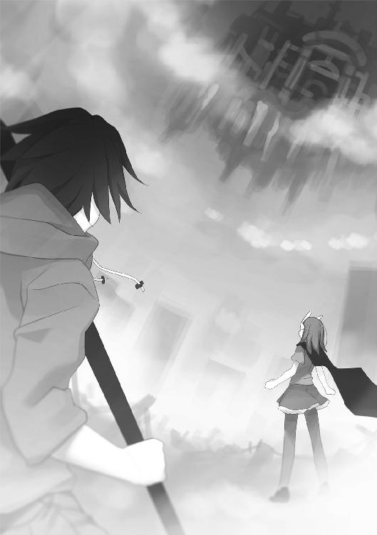
『思い出して......』
地上にソプラノの声が響いた。
陽炎を纏った迷彩服の男が、胸を押さえてうずくまった。
「ううっ──」
『遠き日に思い描いた夢を......もう忘れ去ってしまった、大切な想いを──』
清らかな鈴の音のような少女の声だ。利菜は周囲を見回す。
「この声......〝Ｃ〟なの？ これじゃ、まるで──」
「──〝浸父〟、だね」
鯱人が頭上を見上げながら言った。
「以前の〝教会〟とは色々とイメージチェンジしまくってるけど......」
『夢を想いなさい......その夢を忘れさせた穢らわしい雑念は、私が浄化してあげる......』
迷彩服の男を包む陽炎が、何かの形を象ろうとしていた。
その光景を見て、利菜は眼前で引き起こされつつある事態を悟った。
「虫憑きではない人を──虫憑きにしようとしているの？」
虫憑きを生むとされる存在は、〝始まりの三匹〟と呼ばれる三匹だけだった。
その一つを取り込むことで──〝Ｃ〟も虫憑きを生むことができるようになったとでもいうのだろうか？ しかも思春期という世代の枠を超えて──。
もし、そうだとしたら、虫憑きという範疇を超えている。
それは、もはや──新たな〝始まりの三匹〟である。
「ま、まだ目を覚まさない人が、たくさん......さっきよりもノイズが強くなって......！」
必死に携帯電話を操作するルシフェラを横目に見て、利菜は呻く。
「魅車が言ってたわね。本気で旧い虫憑き──私たちを掃討して、新しい虫憑きとやらを作ろうとでもいうの？」
利菜は奥歯を嚙み、ナナホシテントウムシから飛び降りた。自らの〝虫〟を空高く飛翔させる。大神殿の中に吸い込まれていくナナホシテントウムシ。
「でも、私の目の前で、そんなことができると思ってるなら──ムカつくわね」
空に浮かぶ大神殿の中心に、小さな点が穿たれた。
点は穴となり、穴は空洞となり──。
轟音と衝撃波が、荘厳な大神殿を四散させた。
地上に激しい破壊音と突風が降りかかり、空に浮かぶ雲が正確な円を描いて一切れ残らず霧散した。鳴り響いていた通信機の電子音や、美しい鐘の音、そして〝Ｃ〟の声までもが消え去り、細かい瓦礫の破片が降り注ぐ。
「はあっ......はあっ......！」
利菜は呼吸を整えながら、空を見上げた。
先ほどの光景が錯覚か幻だったかのように、大神殿が跡形もなく消滅していた。
全力の一撃で神殿を破壊したナナホシテントウムシが、空から舞い戻る。
「アレが〝浸父〟の〝教会〟と同じ力の発動体なら、これで──」
静まり返った地上で、意識を取り戻した人々が呆然と立ち尽くしていた。陽炎を纏っていた迷彩服の人物も、何事もなく我に返った様子だ。
「──はじめて会った虫憑きが、君じゃなくて良かった」
鯱人の声で振り返り、利菜はぎょっとした。
逃げ遅れた虫憑きたちが全員、利菜の周りに集まっていたのだ。
「もし最初に会った虫憑きが君だったら、色々とスゴすぎて完全に惚れちゃってたね」
ホッケースティックを肩に載せた少年が、ニヤリと笑って利菜とすれ違った。顔色が真っ青なのは、力のほとんどを使ってしまったせいだろう。──彼が余力を使い切り、逃げ遅れた虫憑きを利菜の下まで集めてくれたようだ。それも、一瞬で。
「そんでもって君に頼りきっちゃって──きっと強くはなれなかった」
言い、鯱人が走り出した。
「悪いけど、オレにできるのはこれくらいだよ。オレは戦士だから、敵に勝つための作戦に加わらなきゃいけない。──キミと違ってね」
「......ありがとう。健闘を祈るわ」
礼を言う利菜に向かって、鯱人が微笑を残した。土師圭吾たちが逃走した方角に向かって走り去る彼は、瞬間移動する力も残っていないようだ。
「レイディー......」
ルシフェラが不安そうな顔で、利菜を見た。他の虫憑きたちも同様だ。
「......」
迷彩服の隊員たちは、何が起きたのか理解出来ていない。困惑して立ち尽くしている。
〝Ｃ〟が再び姿を現す気配もない。力の発動体を打ち砕くことで、多少のダメージを与えることができたのか──それとも単に力を貯めているのか。
撤退するならば、今しかない。
「今のうちに、安全な場所を探すわよ」
傷ついた彼らを連れて、今から土師圭吾たちに追いつくのは不可能だろう。
立花利菜としての、過去の出来事が脳裏に蘇った。
あの、流星群の夜の戦い──。
一号指定が結集した、あの決戦において、利菜は直前で参加を諦めた。
あの時と、同じだ。
自分はまた同じことを繰り返すと分かっていても──。
「行くわよ！ 私についてきて！」
ただの立花利菜という弱い虫憑きである、自分は──。
「私が、みんなを守るから......！」
助けを求める虫憑きと、自らの脚にしがみつく欠落者たちの亡霊を引き連れて──。
戦いのない、楽園を目指して走るのだった。
1.06 利菜 Part.4
赤牧市の住宅街は、不気味な静けさに包まれていた。
同地区に避難指示が発令されたのは数日前だ。それ以前であれば通勤、通学時間を過ぎ、主婦が家事をこなす掃除機や洗濯機の音が聞こえそうな時間帯である。
現在の住宅街には、人影が見当たらない。宅配便の車や、散歩中の老人、通りでお喋りをする主婦たちなど見慣れた光景は、どこにもない。
人気の消えた通りに、重苦しいエンジン音が響いた。
自衛隊の装甲車である。何度も念入りに同じ地域を巡回しているようだ。
時折、民家の屋根の上に現れる人影もあった。
奇妙なロングコートを纏っていたり、平凡な私服姿だったりと外見は様々である。
〝蘇生者〟──かつては虫憑きであり、欠落者になるか死亡したはずの者たち。──彼らは〝Ｃ〟の力によって蘇り、その手駒として操られている。
「──いいわ、蘇生者がいなくなった。やっと撒けたみたいね」
利菜は自動ドアの内側から、外の様子を窺って言った。
彼女の背後で息を殺していた者たちが、いっせいに安堵の息を吐いた。
「ここでしばらく休憩しましょう」
とあるスーパーマーケットの店内である。利菜と手負いの虫憑き、合計十数人が身を隠すにはじゅうぶんなスペースがあった。
お洒落着の少女、ルシフェラが店の奥から姿を現した。
「ブレーカーも落ちてますし、警報装置も無効になってますー。電気を使ったり虫憑きの力を使わないかぎり、少しの間は見つからないはずですよー。......どっちか片方でも使ったら、〝Ｃ〟か感知能力のある蘇生者に見つかっちゃう可能性が高いですけどー」
「ご苦労様。今のうちに何か食べて、体力をつけておきましょ。勝手に商品をもらうのは気が引けるけど......代金は後で送って許してもらうってことで」
薄暗い店内で、レジカウンターの周りに集まって食料を口に詰め込む虫憑きたち。
利菜も窓際で外を警戒しながら、バナナを頰張った。
「......」
栄養を補給しながら、虫憑きたちが利菜をちらちらと見ているのが分かった。
死んだはずの利菜──レイディー・バードが目の前にいるのだ。たとえ彼女が〝ミミック〟であると自称しても、すぐに慣れることができないのは当然である。
「どこに逃げるにしても、まずは赤牧市から脱出しなきゃ話にならないわね」
店内に漂う重い空気を振り払うべく、利菜は努めて力強い口調で言った。
「この分じゃ赤牧市を出ても、前途は多難でしょうけど......少なくとも、人の多い街まで行けば一般人に紛れ込めるはずだわ。まずはゆっくり身体を休めないと」
栄養補給用のゼリーを口に含みながら、ルシフェラが携帯電話をいじる。
「ん......通じなかった電波状態が復活してますねー。でも罠だろうなー。一般人のいない赤牧市市内で電話なんか使ったら、一秒で〝Ｃ〟に居場所を特定されそうー」
「〝Ｃ〟に見つからずに赤牧市から抜け出して、身体を休めて......それから土師圭吾たちと合流するとなると、先は長くなりそうね。──といっても逃げ場がないのは彼らも同じよね。あの卑怯メガネのことだから、何とかすると思うけど......」
利菜の言葉に対し、ルシフェラが一瞬、黙り込んだ。携帯電話を見ながら呟く。
「一応、ドームから脱出した時に、土師圭吾から逃亡先のアテは聞いてますけど......」
「そうなの？ あんな一瞬で、〝Ｃ〟から身を隠せる場所を思いついたのかな......それはそれでムカつくけど──教えて。どこに逃げるつもりだって？」
ルシフェラが利菜の耳に口を寄せようとするのを、手で制する。
「大丈夫。ここにいるのは、仲間なんだから。みんなに教えて」
「......はいー」
十数人分の視線が集まる中、ルシフェラが逃亡先について語った。
ある場所と、そこに向かう手段についてだ。
虫憑きたちが、ざわつく。
「──なるほど、そういう場所なら、確かにしばらく時間を稼げるわね。無事に辿り着くことさえできれば、〝Ｃ〟の手が届くこともない......」
納得して頷く、利菜。
相変わらず抜け目のない──いや、敵の最も嫌うやり方が大好きな男だ。
電子情報を操る〝Ｃ〟にとって、〝その場所〟は地球の裏側より遠い地かもしれない。
「問題は、私たちがどうやってそこに向かうか、ね」
「はいー。土師圭吾たちには赤瀬川七那がついてるから、彼女が何とかするでしょうー。でも私たちは彼女に連絡をとる手段もないですし、助けを求めてから動いてもらうんじゃ遅すぎますー。この人数を逃走先まで運ぶ手段を、自力で用意しないと......」
思案する利菜とルシフェラの前に、一人の虫憑きが進み出た。
白いロングコートを身に纏っている。特環の中央本部に所属する虫憑きのようだ。
「レイディー──いや、〝ミミック〟なのか？」
「......」
利菜は答えない。どちらを名乗ることが正解なのか、自分でも分からない。
「お前だけでも、今すぐに〝照〟たちと合流するべきだ」
驚きや抗議の声は上がらなかった。
「お前一人なら、今すぐにでも赤牧市から脱出できるはずだ。それに〝Ｃ〟と戦うなら、お前は一刻も早く主力に加わるべき──いや、そうじゃなきゃいけないはずなんだ」
彼の考えは、その場にいる誰もが頭にあったに違いない。
何しろ当の利菜自身でさえ、そうすべきだと分かっているのだ。
ここにいるのは手負いの虫憑きばかりで、高位の戦闘員もいない。そんな彼らを無事に逃がすことよりも、〝Ｃ〟という大敵に対抗する戦力となるべきだ。
たとえ──彼女が去った後、この場にいる者たちが全滅したとしても、である。
誰しもが、そう言うだろう。
しかし利菜は微笑み、こう答えるのだ。
「却下」
白コートの虫憑きが唇を嚙んだ。利菜の回答を予想していたようだが、食い下がる。
「し、しかし......」
「それができるなら、私は特環に入ってるわ。〝かっこう〟とだってもっと仲良く──」
その名を口にした途端、悪魔と呼ばれた虫憑きの姿が脳裏に浮かんだ。
そして、もう一人。──否、紛れもなく〝かっこう〟と同一人物なのに、全くの別人のように気の抜けた表情をした少年の顔も、思い出す。
「──ううん、それは、どっちにしろ無理か......」
声のトーンを落とす利菜の隣で、なぜかルシフェラが得意げに胸を張った。
「レイディーに虫憑きを見捨てろなんて、ハルキヨに更生しろって言うようなものですよー。面倒臭さじゃ、どっちも負けず劣らずですからー」
「あんなヘンタイといっしょにしないでよ......」
ドームで見た炎の魔人は、かつてとはすっかり雰囲気が変わっていた。顔を合わせればセクハラ紛いのちょっかいをかけてきた頃よりも、大人になったということだろうか。
「とにかく、すぐにでも動けるよう準備だけはしておきましょう」
利菜の言葉に従い、各々が食事と休憩に集中することとなった。
スーパーの外を警戒しながら、利菜はこれからどう動くべきかを考える。
「この人数を運ぶ手段......赤瀬川七那には頼れない......かといって、宗像さんに連絡をとれるわけでもないし......」
いっそのこと、利菜を先頭にして強行突破を図ってみようか？
本当に追い詰められたら、そうする他にないのだろう。だが結果は想像に易い。多勢に無勢の物量差で、一人ずつこちらが倒されておしまいだ。
「......」
一つ。
たった一つだけ、利菜にできることを思いついた。
レイディー・バードではない。立花利菜としての自分を利用した手段だ。
だが、それは──。
それだけは──。
考えただけで、心臓の動悸が早まった。冷や汗が額を濡らし、かすかに腕が震える。
「そうするしか......そのために私は生き返らされた......？ で、でも......」
ブツブツと口の中で呟く利菜の服を、背後から何かが引っ張った。
ビクリ、と振り返ると、ルシフェラが控えめに利菜の服をつまんでいた。
「ルシフェラ？ どうしたの？」
「レイディー......あの......」
口ごもり、利菜を離れた場所まで引っ張っていくルシフェラ。
「何か思いついたなら、みんなの前で──」
「そうじゃなくて......その......」
言いにくそうにモジモジしていたが、意を決した様子で言う。
「わ、私は──裏切り者なんです......」
突然の告白。
「レイディーがいなくなってから......私、ある人に声をかけられて......それで、その人に〝むしばね〟の情報を流したり......〝むしばね〟の仲間を騙したり......」
涙ぐんで震えるルシフェラは、叱られるのを怖がる子供のようだ。
「そうしてるうちに、ジェンシスを......死なせちゃったり......」
「......」
「それなのに──またレイディーを見たら、思わずこっちについてきちゃったりして......なんだか、すごく恥ずかしくなって......謝らなきゃって......謝ってどうなるものでもないけど......私......私は......」
とうとう涙を零すルシフェラ。
利菜は、震える少女の頭に手を置いた。
「バカ」
ビクリ、とルシフェラが全身を強ばらせた。
「私には〝ミミック〟の記憶もあるの。だから──全部、知ってる。アンタが味方してた子や、その子といっしょにいた人たちのことも......」
「......！」
ハッとして、ルシフェラが泣き濡れた顔を上げた。
「私がいなかった時のことでしょ？ だから私は許すことも、許さないこともできない。その子──菰之村茶深って子と、私は仲良くなれそうにもないけど......感謝してるの。アンタを立ち上がらせてくれたんだしね。私には──できなかったから」
「ち、違っ......！ 私はレイディーのおかげで......！」
「だからアンタが謝るべきなのは、私じゃないでしょ？」
利菜が微笑むと、ルシフェラが思い出したように顔を歪めた。
「〝ふゆほたる〟さん......」
「詩歌が許すか許さないかなんて......分かりきってるけどね」
杏本詩歌は怒るかもしれない。だが最終的に許すかどうかは──目に見えている。
──俺たちの中で、一番強いのは〝ふゆほたる〟だ。
ズキリという胸の痛みとともに、〝かっこう〟の言葉が利菜の中で蘇った。
杏本詩歌は、ルシフェラを許すだろう。
あの優しい少女が許さないのは、たった一つ──。
〝始まりの三匹〟だけだ。
「......はい」
コクリと頷く少女の頭を、利菜はまた撫でる。
「レイディー......そのお面をとらないんですか？」
ルシフェラに言われ、利菜は微笑んだ。仲間の下へ戻るべく身体の向きを変える。
「これ？ 外れないのよ。──呪われてるのかな？」
冗談っぽく言ったつもりだが、ルシフェラがぎょっとして顔を強ばらせた。
「もし、そうだとしても、自業自得だけどね」
言い、利菜は歩き出す。
そう、自業自得だ。自縄自縛とも言える。
もし利菜が蘇った現状に、運命や誰かの思惑とは異なる要素が働いていたとしたら──それは間違いなく、自分のしてきた行いの報いだ。
虫憑きの居場所を創る──。
そう唱えて戦っていたくせに、無責任にも途中でリタイアしてしまったのだから。
「ねえ、聞いて、みんな」
だからこそ、今、一人でも多くの虫憑きを助ける。
そのためには──再び地獄に堕ちることも、厭わない。
「私は、やっぱり──一人でここから脱出することにするわ」
自分だけ生き返ろうだなんて、都合が良すぎるだろう──。
どこからか聞こえた、その声に。
利菜にとって全ての始まりとなった、あの肉親の声が混じっていた気がした。
1.07 利菜 Part.5
幼い頃、小さな窓から見える世界がとても美しかった。
鳥籠のような自室。送迎用の高級車。友達を作ることも許されない私立の学校。
親によって用意された空間は、とても窮屈だった。
だから自分の部屋から、いつも外の世界を眺めていた。
真っ先に思い出すのは、真っ赤に輝く綺麗な夕日だ。
記憶に刻まれた夕焼けを絵に描いたこともある。
あの部屋から解放され、外の世界に飛び出せば自由になれると思った。自分を取り囲む壁さえなければ、どこにでも行けると思っていた。
そうして──いつか、自分の本当の居場所を見つけられると思っていたのだ。
「......はあ、はあ」
人気のない住宅街を走りながら、利菜は周囲を見回した。
装甲車のエンジン音に気づき、民家の塀を跳び越えて敷地内に身を隠す。
「......」
息を殺して、装甲車が通り過ぎるのを待つ。
無意識に腰のポケットに触れ、堅い感触を確かめる。先ほどまで潜伏していたスーパーから飛び出す直前、ルシフェラに渡されたものだ。
──これ、私の予備のケータイですー。いざという時に使ってくださいー。
〝Ｃ〟に電子網や通信網を監視されているであろう中で、それを使うタイミングがあるだろうか？ と疑問に思いつつも、利菜はそれを素直に受けとった。
──逃走手段を手配してくる......なんて、レイディーのことだから本当のことなんでしょうけどー。ウソであることを願いますー。私たちに構わず、一人でそのまま......。
別れ際、ルシフェラはそう言っていた。ルシフェラ以外の者たちも、不安そうな表情を隠して頷いた。
──必ず、戻ってくるわ。
利菜はそう約束し、ルシフェラたちと別れた。
噓ではない。利菜は皆とともに赤牧市を脱出するために、ある場所へ向かうつもりだ。うまく行くとは限らないが──まずは利菜が赤牧市から抜け出す必要がある。
「......よし」
装甲車が走り去ったのを確認し、利菜は民家の敷地から飛び出した。
利菜が目指すは──氷飽市。
赤牧市のとなりにある市であり、利菜の目的地もそこにある。
「......！」
前方のマンション屋根に、人影が見えた。利菜に気づき、ゴーグルに手を当てる。
〝蘇生者〟だ。仲間たちに利菜発見の報せを送信しているのだろう。
「特環の通信システムも、すっかり〝Ｃ〟に乗っ取られてるみたいね」
利菜の前方に、自らの〝虫〟であるナナホシテントウムシが出現した。
「これだけスーパーから離れれば、見つかっても問題ないわ」
強力な衝撃波が、住宅街の一角を襲った。数軒の民家、そして人影が立つマンションを破壊の奔流が吞み込む。
人影が瓦礫とともに地上に落下するのを見届け、ナナホシテントウムシの頭部に乗る。
空高く急上昇し、素早く周囲を見回す利菜。上空は風が強かった。
全方角から、こちらに接近する飛行型の〝虫〟が見えた。武装ヘリらしき影も見える。周囲の電線が金色に輝きつつあるのは、〝Ｃ〟が雷を放つ前兆に違いない。
「やっぱり空から脱出するのは無理か。〝虫〟にミサイル......それに〝Ｃ〟の雷の標的になるようなものね」
空だけでなく、地上にも利菜目がけて集まりつつある虫憑きが見えた。
「身の隠し場所がある分、地上のほうがマシか......」
利菜の身体が、急に支えを失って自由落下した。
ナナホシテントウムシが利菜を宙空に置き去りにし、地上めがけて急降下したのだ。
地上の〝蘇生者〟たちの迎撃を分厚い甲殻で弾き返しながら、地面に着地する。
ボカン、と。
コミカルにすら聞こえる破壊音が、地上を揺らした。
ナナホシテントウムシが放った衝撃波が、周囲一帯を円状になぎ払ったのだ。数十もの建物が粉々に砕け散り、〝蘇生者〟たちが一人残らず吹っ飛んで動かなくなる。金色に輝く電線も、一本残らずちぎれて光を失った。
「ゴメンね。〝Ｃ〟に操られてるだけだって分かってるから、手加減はしてあげる」
頭から落下していた利菜は、クルリと身体を反転させた。同時にナナホシテントウムシが再び宙を舞い、うまく落下の勢いを殺しながら頭部に利菜を着地させる。
「だから──それくらいで死なないでね」
ナナホシテントウムシが、利菜もろとも再び地上に降り立った。
平坦な荒れ地と化した住宅街の一角を走り抜ける、ナナホシテントウムシ。
「......」
利菜は自分の〝虫〟を通じ、足下から伝わるかすかな震動に気づいた。
ナナホシテントウムシが頭を振り、利菜を宙高く舞い上がらせた。トランポリンのように自らの〝虫〟に放り投げられる形で、利菜は民家の屋根の上に跳び移る。
直後──ナナホシテントウムシの前方の路地が爆発した。
地中から巨大な〝虫〟が飛び出したのだ。利菜のナナホシテントウムシにも劣らない巨軀で体当たりを仕掛けようとするが──。
両者の激突は、ナナホシテントウムシの圧勝だった。衝撃波も伴ったナナホシテントウムシの前に、巨大な〝虫〟が紙細工のように潰れて粉々に砕け散る。
「さすがに居場所がバレちゃったら、〝蘇生者〟が集まるのは早いわね」
助走をつけて屋根から飛び降りる利菜を、ナナホシテントウムシが頭部で受け止める。そこへまた数匹の〝虫〟が立ちふさがるも、すぐに衝撃波で木っ端微塵になる。
続々と集まる〝蘇生者〟を、利菜は周囲の建物ごと撃退していく。
「数が多いけど......私一人なら、なんとでもなるわ」
あっという間に数十人の〝蘇生者〟を倒しながら、呟く。
高位の虫憑きは、この周辺にはいないようだ。もしいたとしても単独で襲いかかってくるのならば、曲がりなりにも一号指定の虫憑きである利菜の敵ではない。
そうなると、やはり最大の障壁は──〝Ｃ〟である。
路地を走る利菜の周囲で、電線が金色に輝き出した。
「──悪いけど、今はまともにアンタの相手をする気はないわ」
衝撃波で電線を弾き飛ばし、利菜は無人の民家の敷地に飛び込んだ。
ナナホシテントウムシを消し、塀を乗り越えて次々と民家の敷地を通り抜ける。
「この辺りじゃ監視カメラなんてものも、そうないはずよ。一度でも私を見失ったら、こっちが〝虫〟を使わないかぎり見つける術はないでしょう？」
利菜の推理は的中した。
迷路のような住宅街に紛れ込むと、〝Ｃ〟の気配が消えた。〝蘇生者〟の姿も見当たらない。利菜が〝虫〟を消したため、感知能力者が彼女の所在を見失ったのだろう。
「このまま進路を絞られないよう、いくつかの場所で〝蘇生者〟と戦って誤魔化して......氷飽市を目指すのは、それからね。誤魔化すついでに一人でも多く敵の戦力を削って、土師圭吾や〝照〟たちに向ける分の人数を減らしてやる......！」
〝蘇生者〟を欠落者にしても、どうせまた〝Ｃ〟によって蘇生されてしまうのだろう。だが時間稼ぎにはなるはずだ。ワガママで離脱したことの、せめてもの償いである。
「ゲリラ戦なら、慣れたものだわ。伊達にレジスタンスやってたワケじゃないのよ」
敵を叩いては、姿を消す。
姿を消しては、敵の真ん中に現れて叩く。
かつて〝むしばね〟を率い、特別環境保全事務局と戦っていた頃を思い出す。利菜は仲間を逃がす囮役となっては、〝霞王〟や〝みんみん〟あたりのヒステリックな怒声を聞きながら特環を翻弄していたものだ。
その当時と比べて、今は住民も避難済みで被害を恐れる必要すらない。
もしかしたら、利菜は──今こそ、はじめて一号指定と呼ばれるだけの実力を発揮できているのかもしれなかった。
「なんだか今は、誰にも負ける気がしないな......このままルシフェラの言う通り──」
何もかも忘れて、一人でどこまでも行っちゃおうか──。
そんな気持ちすら、胸中に沸き上がった。
守るものなど持たずに、自分の思うままに生きていけば──幼い頃に夢見た、自由というものを手に入れられるかもしれない。
「でも、それじゃあ──私がいる意味なんて、なくなっちゃうか」
苦笑する。
大勢を助けて、大勢を救おうとした末に、力を使い果たして戦死した。
それなのに今、また大勢の虫憑きを救うために、この世に呼び戻された。
それが立花利菜という人間の宿命なのだろう。
「私自身なんて......どうでもいいわ。どうせ──」
独白しつつ次の民家の庭に逃げ込んだところで、異変が発生した。
それまで静寂に包まれていた住宅街が、突如として喧噪に包まれたのだ。
「えっ──」
何かを報道するアナウンサーの声。高級料理を褒める芸能人のコメント。殺人犯を追い詰める刑事の尋問。悪者と決闘するアニメのヒロインの声。
原因はすぐに分かった。あらゆる住居から、テレビの音声が大音量で流れ出したのだ。
「──一体、何のつもり？」
避難していた住民たちが戻ってきたわけではない。かといって心霊現象でもない。
そんなことができる存在を、利菜は一人しか知らなかった。
「〝Ｃ〟ね......奇妙な現象で気を引いて、私をおびき寄せようとでも？」
利菜は一軒の民家に近づき、窓から家の中にあるテレビ画面を覗き込む。
「もしそうだとしても、見つかったらまた周囲一帯ぶち壊して逃げるだけだけど......」
ピタリ、とやかましい音声が止まった。
眉をひそめる利菜が見つめる先で、テレビ画面が変化した。
『今いる虫憑きは、失敗なんです......』
少女の青白い顔が浮かび上がった。幼さの残る童顔に、ハートと王冠のマークを並べたデザインのティアラをかぶっている。
「〝Ｃ〟......！」
『彼らに、〝方舟〟に乗る資格はない......』
周囲に〝Ｃ〟の声が響き渡った。辺り一帯で同じテレビ映像を流しているのだろう。
『彼らを全て洗い流して......浄化された世界で、本当の虫憑きが生まれていく......』
〝Ｃ〟の視線は宙空を彷徨い、口元は動いてすらいない。
『それが、新しい世界......生まれ変わった、〝不死〟に満ちた世界......』
「それが魅車八重子に植え付けられた、アンタの目的ってわけ？」
利菜が皮肉を込めて吐き捨てる。
「何言ってるのか、さっぱりだけど......ろくでもないことを企んでるってことだけは分かるわ。──〝方舟〟？ 浄化？ 自分が神様にでもなったつもり？」
『世界が変わるためには......〝洪水〟で全てを洗い流して......〝鳩〟を放たなければいけない......そうして浄化された世界で、私は子を産む......』
「こ、子って......」
あどけない顔から飛び出した言葉に、不覚にも頰を染める利菜。
「新しい〝不死〟の虫憑きってことでしょ......？ 妙なこと言ってないで、さっさと姿を現してかかってきなさいよ。本体が出てくるなら、相手してあげるわ」
嫌な予感がした。
ただの予感ではない。
覚えのある感覚──利菜は、かつてそれを感じていて、それは的中した。
死期。
そう呼ぶものだろうか？ 利菜の首元に刻一刻と死神の鎌が近づき、耳元でカウントダウンをされているような感覚だ。
その不思議な感覚を──利菜は、実は復活したその時から常に感じていた。
「私が怖いの？ 最強の一号指定でしょ？ それなら正面きって向かってきなさいよ」
不吉な感覚を紛らわせるために、安い挑発をする利菜を──。
ジロリ、と画面の中の〝Ｃ〟が凝視した。
『立花利菜......レイディー・バード......失敗した〝不死〟は洗い流さなければなりません......そして〝鳩〟が放たれる......』
「〝鳩〟......？」
『〝鳩〟が世界が浄化されたことを確認して、はじめて私は新しい世界に降り立つ──』
そこまで言って、〝Ｃ〟がまた視線を動かした。
利菜とは反対側に目線だけを移して──ニヤリと嗤う。
純粋そのものの表情から、邪悪に変貌したその顔に、利菜は見覚えがあった。ある時、偶然にも、それが人を襲う場面に居合わせたことがあるのだ。
〝浸父〟──。
画面に映し出された笑みは、超種一号〝Ｃ〟という少女のものではない。
虫憑きを生む原虫。〝始まりの三匹〟と同じ化け物の顔つきだった。
『来る......』
小さな呟きを残し、テレビ画面の映像がプツリと途絶えた。
それきり何事もなかったように、周囲が静まり返る。
「何......？ 来る、って？」
唐突に放置されて、利菜は呆然と立ち尽くす。
〝Ｃ〟の様子は、ただ事ではなかった。
利菜を相手にすることよりも、〝Ｃ〟にとって重要な何かが発生したのかもしれない。
「言いたいことだけ言って放り出すなんて......一体、何が来たっていうのよ？」
逡巡しつつも、利菜はナナホシテントウムシを出現させた。
頭部に乗り、空高く舞い上がる。──感知能力者に発見されるリスクよりも、〝Ｃ〟が豹変するほどの事態を把握すべきであると直感していた。
上空から見ると、赤牧市のある地域に、四つの光の塊が生まれていた。
〝Ｃ〟の能力だろう。正方形の頂点を描くように、一定距離を置いて黄金の光が集中しているのが分かる。
だが、しばらく様子を見ていても、それ以上の変化は起きなかった。
「〝Ｃ〟が何かをしようとしてるの？ 一体、何を──」
強風に煽られながら呟いた時、遠方の空の色がジワリと変化した。
まるで墨汁に染まるように変わっていく空の色は──紫色である。
「──え......ウソ、でしょ？」
その不吉な紫色には、見覚えがあった。
紫色に染まりつつある空と、その空の下で網を張るように待ち構える〝Ｃ〟。
その二つの現象を見て、利菜は──何が起きようとしているのかを悟った。
「赤牧市の住民は、とっくに避難してるんじゃなかったの？ それなのにどうして──」
狐の面の奥で、利菜は顔を引きつらせる。
「〝大喰い〟が、現れるの......？」
傷ついた仲間とともに赤牧市から脱出すべく奔走する利菜の眼前で、全く別の悲劇が起きようとしていた。
紫色に染まる空──。
それは〝始まりの三匹〟の一つである〝大喰い〟が現れる前兆に他ならない。
「あそこに誰かがいて──虫憑きにされそうだっていうこと？ しかも、〝Ｃ〟がその〝大喰い〟を待ち構えて取り込もうとしてる......このままじゃ〝浸父〟みたいに......」
予想だにしない事態──否、考えも及ばなかったくらい、最悪の展開である。
もし〝Ｃ〟が〝大喰い〟を取り込むことに成功してしまったら、どうなるか。
〝大喰い〟は、自ら虫憑きにした者の能力を全て我が物にすることができる。
そんな能力を、もし〝Ｃ〟が手に入れてしまったら、それこそ本当に手のつけられない強敵へと成長してしまう──。
「それだけは──させない。あそこにいる人間を虫憑きにさせたりもしない......！」
他に選択肢はなかった。利菜はナナホシテントウムシを視線の先に向かわせる。
最悪を超える事態だけは、何としても阻止しなければならない。
覚悟して飛ぶ利菜だが、しかし──。
「でも、できるの？ 私、一人で......」
その口元には、無意識に弱々しい笑みが浮かんでいた。
1.08 利菜 Part.6
〝Ｃ〟が〝大喰い〟を取り込むのを阻止するためには、三つの方法が考えられる。
方法、その一。利菜がこの場で〝大喰い〟を倒す。
その二。利菜がこの場で〝Ｃ〟を倒す。
その三。何者か知らないが、夢を喰われつつある人物を──どうにかする。
「こんな時に、こんな場所で......！ 誰が夢を思い描いてるっていうのよ！」
方法その一と二は──論外だ。相討ち覚悟で倒せる相手ならば迷わずやるだろう。だが詩歌の能力が使える〝大喰い〟や、本体の所在さえ分からない〝Ｃ〟が相手では十中八九、利菜が犬死にして終わるだけだ。
「〝蘇生者〟も集まってる......速攻で片づけないとヤバイわね」
〝大喰い〟を捕らえるための罠らしき、黄金に輝く四つの光。その中心にあたる場所には、複数の道路が交差するインターチェンジがあった。
結集しつつある〝蘇生者〟たちを追い抜き、利菜はナナホシテントウムシをインターチェンジに勢いよく着地させた。
走る自動車もなく閑散とした場所で、問題の人影はすぐに見つかった。
「......二人？」
インターチェンジを支える太い柱のそばに、二人の少女がいた。
利菜と同年代の少女だ。一人は長い黒髪のお嬢様風で、もう一人はショートカットの中性的な少女である。二人で膝をつき、互いの身体を支え合っていた。
「どっちが──いえ、二人とも、こんなところに置いていくわけにはいかないわね」
上空を覆う紫色が濃くなりつつあった。利菜は〝虫〟を従えたまま、二人に駆け寄る。
「ど、どなたですか？」
利菜を見て、長髪の少女が上品な言葉遣いで言った。もう一人がぼんやりとして反応がないところを見ると、〝大喰い〟に狙われているのはショートカットのほうらしい。
「味方よ！ でも説明してるヒマがないの！ すぐにここから離れて！」
二人の少女の腕を引いて、立ち上がらせる。
「み、味方......？」
「いきなり現れて、おかしなこと言ってるのは分かってるわ。でも信用して。その子は、とても危険な状態なの。なんていうか、その──」
「虫憑きにされてしまいそう......なんですか？」
「......！」
利菜は驚いて、動きを止めた。
「どうして、そのことを──」
「恵那さんは......以前にも同じようなことがあったので──」
「以前にも......？ 恵那......？」
以前にも虫憑きにされそうになった。
恵那。
そのキーワードがひっかかり、利菜は記憶を掘り起こして──。
「──」
脳天から、凍てつく氷柱に貫かれたような衝撃を憶える。
少女二人から手を離し、ふらりと後退る。
「恵那──西園寺、恵那......？ あの流星群の夜の......？」
思わず呟いた利菜の言葉に、今度は長髪の少女が驚いたようだった。
「し、知っているんですか？」
知っている。
あの知られざる決戦のことを、利菜は知っていた。
なぜなら利菜もまた、その戦いに参加するはずだったのだ。その戦いで守るべき対象の人物──西園寺恵那という少女のことも、名前だけは聞いていた。
しかし利菜は、直前でその戦いから退いた。
その結果、決戦に臨んだ虫憑きたちは──。
「アンタたちも、幻なの......？」
「──え？」
眉をひそめる長髪の少女たちのそばに、無数の黒い腕が伸びるのが見えた。
利菜が救えなかった虫憑きたちの亡霊である。──その中には、誰にも語られない、あの夜の戦いに臨んで果てた者たちもいた。
ほぼ全滅、そして敗北という結末を遂げた、あの決戦。
あのペルセウス座流星群が降り注ぐ中で倒れた虫憑きの数は、十や二十では済まない。
「アンタたちは、本当にそこにいるの？ そ、それとも......アンタたちも、私といっしょに生き返った亡霊......？」
利菜の中で、幻覚と現実の境界線が不鮮明になりつつあった。
「だ、だから、今になって──こんな時に、私の前に現れるの......？」
「な、何をおっしゃっているのですか？ 私にはさっぱり──」
そう言って、長髪の少女が顔を強ばらせた。
いつの間にか、自分たちを異様な人々が取り囲んでいることに気づいたのだ。
〝蘇生者〟たちである。
さらには地上のアスファルトの表面を、金色の放電現象が這った。
「......！」
利菜が我に返り、振り返るよりも早く──。
地上から天に立ち上る、黄金の雷がナナホシテントウムシを貫いた。
「──ッ！」
激しい地響きと突風。そして弾ける空気。
インターチェンジを囲む四つの光のうち一つを、〝Ｃ〟が解放したのだ。これまでに見た〝Ｃ〟の雷よりも数倍も太い電撃を受け、利菜は声もなく仰け反る。
雷の余韻が収まるのを待たず、再び空気が帯電し──。
「──ッッッ！」
二発目の雷が、ナナホシテントウムシを打ち抜いた。
利菜本人を攻撃したら、〝大喰い〟を誘う恵那まで巻き込んでしまうと判断したのかもしれない。〝Ｃ〟の強力な攻撃を受けたナナホシテントウムシが衝撃で宙に舞い上がり、インターチェンジの立体道路に激突する。
「かっ──」
利菜の声にならない悲鳴が、肺を振動させた。
〝虫〟に対するダメージは、宿主の精神に直撃する。
心臓を抉られたかのような衝撃を受け、利菜の身体がゆっくりと傾いていく。
しかし、倒れる寸前──利菜は、ぐんっと体勢を前屈みに立て直す。
「軽い──わね......！」
黒焦げになったナナホシテントウムシが、墜落する寸前で大きく翅を拡げた。利菜たち三人の少女をかばうように、頭上でホバリングする。
「他の一号指定どもの攻撃のほうが──えげつなかったわよ」
ナナホシテントウムシの眼が、赤く染まった。焦げついた表皮を弾き飛ばし、大きな翅を高速で振動させる。
視界に移る光景が、変貌した。
道路が砕け、〝蘇生者〟とその〝虫〟が浮き上がり、道路を囲む高層ビルに縦横無尽の亀裂が走る。
そして──爆発。
音のない衝撃の波動が、粉々になった全てを後方に吹き飛ばす。
「──」
利菜のそばにいる長髪の少女が、お嬢様らしからぬ大口を開けて啞然としていた。
赤牧市の大動脈というべき、巨大インターチェンジ。
数秒前には確かにあった、近代的な都市の光景が──一瞬で、平坦な瓦礫の平原と化していた。ところどころに土砂に半身を埋めた〝蘇生者〟たちの姿も見える。
「さ......さあ、行くわよ！ 乗って！」
消耗とダメージを隠し、利菜は少女たちを連れてナナホシテントウムシに飛び乗った。
瓦礫を踏みしめ、走り出すナナホシテントウムシ。
「あの......だ、大丈夫なんですか？」
ナナホシテントウムシの頭部に必死にしがみつきながら、長髪の少女が言った。
利菜は恵那を抱えた状態で、笑ってみせる。
「全然ヘーキ。ちょうどいい目覚ましになったわ」
噓だ。受けたダメージは大きく、再び敵に囲まれたら突破できる自信はない。
それだけに一刻も早く問題を解決し、逃走する必要がある。
「......」
空を見上げると、見渡す限り紫一色に染まろうとしていた。
「──アタシは......会いたい......もう一度──」
西園寺恵那という少女が、うわごとのように呟いた。
路地の前方に、〝蘇生者〟らしき人影が見えた。利菜はナナホシテントウムシの進路を変え、全速力で逃げる。
「どうして、よりによってこんな時に、あんな場所に......」
利菜は恵那に問いかけた。長髪の少女が代わりに答える。
「恵那さんは避難指示が出てからも自宅に残ったんです。この騒ぎは虫憑きに関係してる気がするって言って......だったら赤牧市に残れば、昔の友人に会えるかもしれないと」
バカ──。
心の中で呻き、利菜は唇を嚙みしめる。
「私も両親にウソをついて、彼女の家にいっしょに残ったんですけど......さすがに限界と思って彼女を強引に連れ出しました。でも、そうしたら、あちこちに虫憑きの人が現れて──その人たちを見て、恵那さんが昔を思い出してしまったみたいです」
そう言って、少女が恵那を見つめた。〝虫〟を見ても動揺しない上、この状況でも友人の身を案じている。見た目とは裏腹に肝が据わった少女である。
「あの、私、九条多賀子と申します。貴女のお名前をお訊きしてもよろしいですか？」
「......」
利菜は、答えられなかった。
自分が何者なのか、自分自身でも曖昧なのだ。その上──名乗るべき名前の一つは、過去に彼女たちを見捨てた人間のものである。
「──なんだろうなあ。この、逃げられない感じ......もう、どうしようもないんだろうな......どこに行っても......精算しないかぎり──」
独り言を呟く利菜を、多賀子が訝しそうに見つめる。
「あの......？」
「とにかく、今は逃げましょう。この子は虫憑きにさせないし──必ず赤牧市から無事に脱出させてみせる」
「でも、どうすれば......？ 前の時は、たくさんの虫憑きの方たちが助けてくれたんです。でも、今は......」
利菜は紫色に染まる空を見て、嘆息する。
もう、時間がない。〝大喰い〟が現れるのも時間の問題だ。
「ねえ、聞いて。西園寺恵那さん──」
利菜は恵那を抱きしめ、耳元で呼びかける。
「あなたが思い描く夢は、とっても綺麗なのね。その夢に誘われて、化け物が来るわ」
恵那はブツブツと呟くだけで、無反応だ。
多賀子が困った顔をして、眉根を寄せる。
「ダメなんです。恵那さんには何も聞こえないみたいで......以前もそうでした」
「そう、前にも夢を見たのね。その時のことを思い出して。あなたを守るために、大勢の虫憑きが戦ったわ。その中には......」
利菜の仲間もいた。
彼女の代わりに大勢の仲間たちが決戦に挑み──一人も帰らなかった。
「その中には──あなたの友達もいたんでしょう？」
利菜は囁き続ける。
「なぜ、彼らは戦ったの？ あなたを守るために、大勢が戦ったわ。恩に着せるつもりなんてない。だって彼らが守ろうとしたのは──自分たちの夢でもあるんだから」
恵那は反応を見せない。
「みんな、後悔してるからよ。あんな化け物に──自分の大切な夢を聞かせてしまったんだから。だから、あなたにはそうさせたくなかった。あなただけじゃない。これから先、そんな人を生みたくなかったから......戦ったの」
「......」
「あなたを虫憑きにしたくない。そう願ったから、戦ったの。そのために多くの虫憑きを集めたのよ。あなたの友達──アリスが」
ピクリ、と恵那の肩が震えた。
多賀子が驚いた顔をした。
「アリスさんを、ご存じなのですか？」
「だから......お願い、恵那──戦って。今度はあなたの番よ」
誰にも知られない、あの流星群の夜の戦い。
その敗北すら、かつての利菜は〝かっこう〟のせいにしていた。
だが、そんな歪んだ憎しみ合いは──もう終わらせなければならない。自らの罪から目をそらすのを止めて、一つ一つ、精算していかなければならない。
「あなたの夢は、あんな化け物に聞かせてやるようなものじゃないでしょう？」
恵那の口が、止まった。
「戦え、恵那！ あんな化け物に負けて、もう一度──アリスに合わせる顔があるの？」
「......」
「目を覚まして！ あの化け物に勝って、今のあなたのまま、アリスに会うの！」
恵那の濁った瞳に、光が戻っていく。
「目を覚ませ！ 恵那！」
「恵那さん......」
多賀子が心配そうに見つめる前で。
ショートカットの少女が──ピクリと顔を上げた。
利菜が抱えた身体に、力が戻っていくのが分かった。
恵那の瞳が、はっきりと利菜を見つめ返した。その目尻から一筋の涙がこぼれる。
「......誰......？」
「恵那さん！」
喜ぶ多賀子の目にも、涙が浮かんだ。
空を見上げると、紫色の気配が遠ざかっていくのが分かった。名残惜しそうに、後ろ髪を引かれるように、ゆっくりと元の空の色を取り戻していく。
「あなたの声が......聞こえた......」
恵那が利菜を強く抱き返す。
「おかえり。......よくがんばったわね」
利菜は恵那の頭を撫でる。
呼びかけただけで、恵那が目を覚ますという確信はなかった。
だが──アリスの名を聞けば、彼女にはそれが伝わるだろうと思った。その名前は目の前にいる少女にとって特別であり、それだけの力があることを知っている。
ともあれ、取り返しのつかない事態に陥ることだけは避けられた。
「なんとか逃げ道を探さないといけないわ。しっかり摑まってね」
「ありがとうございます。本当に......」
多賀子が利菜の腕を摑み、礼を言う。
利菜は微笑み返すことができなかった。逆に胸が強く締めつけられる。
「お願い。お礼なんて、言わないで......私は──」
一度、あなたたちを見捨てたんだから──。
その言葉を口に出せない利菜を、不思議そうに見つめ返す恵那と多賀子。
そんな二人の視線から逃れるように、利菜は前方に視線を向けた。
「三人で無事に赤牧市から脱出するのは簡単じゃないわ。氷飽市に繫がる橋は封鎖されてるでしょうし......〝Ｃ〟に見つからないような、電力が通ってない道があればいいんだけど、そんな場所はないし──」
利菜といっしょにいれば恵那と多賀子にも危険が及ぶ。かといって一度〝大喰い〟に目をつけられた恵那を、〝Ｃ〟が再び利用するために狙わないとも限らない。
「氷飽市に通じる、電力の通ってない場所ですか......」
声を上げたのは、多賀子だった。
「それなら──心当たりがあります」
1.09 利菜 Part.7
先の見えないその直線は、人間が到達した狂気を感じさせた。
赤牧市に横たわる、一本の高架線。
それは多くの住居をまたぎ、川には橋を架け、ひたすら延びた先には氷飽市がある。
九条多賀子曰く、工事中の新幹線の線路だそうだ。数年後には最新型のリニアモーターカーがその上を走り、赤牧市と地方の各都市を結ぶ予定だという。
「......ここなら確かに、最短ルートで氷飽市まで脱出できそうね」
地上から高架上まで組まれた足場を上り、利菜は線路を覗き込む。
「見たところ、電力線もまだ通ってないみたいだし」
未完成の線路上には、組立中のクレーンや資材が置かれていた。避難指示が出る直前まで、大勢の作業員がここで働いていたのだろう。
利菜に続いて、恵那、多賀子も線路上に上がる。
「そういえば、こんな場所もあったっけ。よく思いついたわね、多賀子」
「たまたま、お父様がこのプロジェクトに出資していたので......完成はまだ先のようですけど、氷飽市の入り口までは繫がっていると聞きました」
恐縮する多賀子を見て、利菜は思い出す。
「九条って......あの九条家だったのね。そんなお嬢様が、危険な場所に友達と二人きりで残ってたなんて、何考えてんだか」
利菜の記憶にあるかぎり、九条多賀子の実家は由緒正しい名家だ。国で有数の金持ちが集まる円卓会という秘密俱楽部の会員ではないが、有する資産は豊富であると聞いた。
「私の家をご存じなんですか？」
「うん、まあ......ちょっとね」
言葉を濁しながら、考える。
多賀子を通じて、九条家に利菜たちの逃亡を協力してもらったらどうだろう？
だが利菜は、すぐに自分の考えを否定する。多賀子はともかく、彼女の両親が虫憑きに協力するとは思えない。それにこれ以上、彼女らを危険に巻き込むことはできない。
やっぱり、私が何とかするしかないか──。
心中で呻きながら、線路の中央を早足で歩いて行く。
「敵に見つからないうちに、少しでも距離を稼ぎたいわ。急ぐわよ」
身体が重かった。〝Ｃ〟の攻撃を、二度も受けたのだ。不安がっている恵那や多賀子の前だから平静を装っているが、すぐに回復するようなダメージではない。
「辛そうだけど、大丈夫？ えっと......誰、さん？」
隠しても無駄だったようだ。心配そうな恵那を振り向き、苦笑する。
「ヘーキだってば。私は──利菜。さん付けはいらないわ。同い年だしね」
「私たちの歳まで、知っているんですか？」
「そう聞いただけ。たぶん、私たちの......共通の知人から」
利菜の言う共通の知人とは、何者か。
その答えは、とっくに口にしてしまった。二人も感づいているだろう。
「......アリス、のこと？」
恵那の呟きを、利菜は無言で肯定する。
「アリスのことを知ってるのね？ アリスは今、どうしてるの？ ねえ！」
「恵那さん......！ 落ち着いてください、今、大声は出さないほうが......」
後ろから利菜の腕に摑みかかる恵那を、多賀子が宥める。
冷静でいられなくなるのも、無理はない。何しろ〝大喰い〟を呼び寄せるほど、再会を強く願っているのだ。
利菜は恵那から顔を背け、言う。
「──ゴメン。言えないんだ」
かつて、ある決戦があった。
星が降り注ぐ中、〝大喰い〟に挑んだその戦いは──虫憑きたちの敗北に終わった。
ほとんど全滅と言っていい大敗だ。〝大喰い〟は去り、その戦いを呼びかけた中心人物は、その戦いの最中に虫憑きになり──長い眠りについた。
そうして、その戦いは誰にも知られることのない一夜の夢幻となったのだ。
利菜自身、その真実を知ることもなかった。
しかし今の自分は、〝ミミック〟が集めた知識としてそれを知っている。
「彼女の身に何が起きて、今、どうなってるか──フクザツすぎるから、言えない。それを聞いてあなたが喜ぶか、それとも絶望するか想像もつかないの。せめて氷飽市で安全な場所に辿り着くまでは......言えないわ」
ある意味、利菜と〝眠り姫〟──アリスという少女は似ているとも言える。
〝Ｃ〟に対抗する戦力として、寝所から無理矢理に揺り起こされた者同士だ。
そんな状況を、恵那がどう受けとるか分からない。友人を不憫に思い、この場で泣き崩れられても困る。
「じゃあ、氷飽市に着いたら、教えてくれるの？」
「ええ。言えないこともあるけどね」
微笑んで見せると、恵那はひとまず納得してくれたようだ。彼女の腕を解放する。
「......」
やめて。
三人の間に落ちた沈黙の意味を、利菜は悟っていた。
これ以上は、何も訊かないで──。
思わず顔を歪め、心の中で懇願する。
「......ねえ、利菜」
「お喋りは、おしまい。黙って歩いて」
わざと冷たく言い放つ利菜の隣に、新たな同行者が現れた。
その数は一人や二人ではない。
利菜の隣、前方、そして背後に、少しずつ線路を歩く人影が増えていく。
利菜が助けられなかった欠落者や死者たちだ。利菜とともに──いや、利菜にすがりつき、彼女とともに蘇った虫憑きの成れの果てたち。彼らはもはや利菜の一部である。
恵那や多賀子には見えないだろう。
だが利菜の目には、線路上を歩く百鬼夜行の行進が見える──。
「もう一人、知りたい人が──」
「やめてって言ってるでしょ。走るわよ！」
恵那や多賀子の視線から逃れるためか、それとも亡者たちの列から逃れたかったのか。
走り出そうとした利菜の足を、恵那の声が止めた。
「薬屋大助っていう人のことなんだけど！」
かくり、と。
自分の両脚から力が抜けたのが分かった。
考えまいとしていた人間の名を聞いただけで足が止まり、頭が真っ白になっていた。
「......利菜？」
「利菜さん？」
糸が切れたように動かなくなった利菜に、怪訝そうな顔の二人が追いつく。
薬屋大助。よりによって、その名を──。
〝かっこう〟ではない、その普通の少年の名を、利菜に問うのか。
「......！」
利菜はハッとして、顔を上げた。
彼女とともに歩いていた亡者たちが、いっせいにこちらを振り向いていた。合図をしたかのように歩みを止め、利菜の顔をじっと凝視する。
「──違う」
利菜は顔を歪め、弱々しく首を左右に振った。
「なんでもないの......ちょっと驚いただけで......みんなのことを忘れたわけじゃ──」
「どうしたの、利菜？ 何を言ってるの？」
「そんなに震えて......どこか痛いんですか？」
「大丈夫よ......見捨てたりしないから......私だけ救われようなんて、考えてない......」
亡者たちに言い訳をするが、口にすればするほど脳裏をよぎってしまう。
〝かっこう〟という最悪の虫憑きと出会い、仇のように戦い続けた日々。
戦いに明け暮れ、虫憑きを助け続けた末に、自分の限界を知った時のこと。
そして、そんな中──ある少年と出会ったこと。
薬屋大助というその少年は、とりたてて特徴のない普通の同級生で──でも実の正体は、利菜を監視するために近づいた〝かっこう〟で──。
彼は、一人の少女を好きになったことを利菜に相談してくれた。
彼女がレイディー・バードという監視対象であり、宿敵であると知りながら、だ。
そんな少年のことを、利菜は一枚の絵に描いた。
その時の気持ちは、今も──。
「うっ──」
強烈な痛みを憶え、利菜はその場にうずくまった。
顔に覆い被さって外れない、狐の面。それが締めつけるようにして、あるいは突き刺さるようにして、利菜の頭に激痛をもたらす。
「利菜っ？」
「うああっ......！ 違う......みんなを裏切ったりしない......私は......！」
あまりの激痛に、涙が浮かんだ。
「だって、アイツには、詩歌が──」
地面の上で悶える利菜を、恵那と多賀子が顔色を変えて抱きかかえた。
そんな二人の少女とは裏腹に──亡霊たちが、利菜を睨んでいた。
一人だけ抜け駆けしようとする利菜を責めるように。あるいは約束を果たさずに、自分だけ夢を叶えようとする卑怯者を軽蔑するように。
「......！」
利菜の顔を見下ろす恵那、多賀子、そして亡霊たち。その向こうに見える空に、小さな影が見えた。脂汗の浮かんだ顔を歪め、利菜は立ち上がる。
「見つかった......！」
利菜たちがいる線路に向かって、数匹の〝虫〟が上空から接近しつつあった。
すぐに他の敵も集まってくるだろう。今から線路を外れて身を隠しても、その後も利菜が正気を保っていられるとは限らない。
「このまま、一気に氷飽市まで行くわ！」
ナナホシテントウムシを出現させ、恵那や多賀子とともにその頭部に乗る。
放置された資材や溶接機をなぎ倒し、線路を突進するナナホシテントウムシ。
「り、利菜！ 大丈夫なの？ 顔色が......！ アタシのせい？」
「利菜さん......！」
「大丈夫よ。安心して、アンタたち二人には......絶対に指一本、触れさせないから！」
それが今の利菜の使命であり、役割なのだ。
こうなってみて、ようやく分かった。
〝Ｃ〟と戦うために蘇った利菜が、その戦いから離脱して──過去に一度は見捨てた少女たちを助けようとしている。
かつての罪を精算して、それでも利菜は救われないのだろう。
恵那たちを助けた後も、虫憑きを救うために戦い続けなければならないのだろう。
「アリス......アンタの言った通りね」
誰も知らない戦いで消えた少女が、利菜に言った言葉を思い出す。
──私が、繫ぐわ。
もう誰も知らないはずの戦いが、今こうして新たな戦いに繫がっている。
「みんな、繫がってるのね......私は──逃げられない」
呻く利菜の前方に、大きな川が現れた。
急いで並べたのだろう。造りかけの陸橋を、迷彩服の人々がバリケードで塞いでいた。
「きゃああっ！」
「きゃあ......！」
さらに加速してバリケードに体当たりする。恵那と多賀子の悲鳴が重なった。
ナナホシテントウムシがバリケードを破壊し、迷彩服たちを弾き飛ばす。
そのまま橋の上を猛進すること、数十秒。
川の上を走り抜けた利菜たちは、新たな陸地に辿り着いていた。
赤牧市の衛星都市として発展した、氷飽市である。
「降りるわよ......！」
言うが早いか、利菜はナナホシテントウムシもろとも線路から飛び下りた。
「......ッッ！」
地響きとともに地上に着地したのは、川沿いの道だった。周囲に人気はないが、遠方に赤牧市を撮影している記者団らしき姿が見えた。
「恵那、多賀子！ 走って！」
ナナホシテントウムシを消し、道沿いにある建物の間に飛び込む利菜。
荒い息をつきながら、いくつかの建物を迂回して走ったところで──とうとう、利菜の限界がやって来た。足を止める。
「利菜？」
急に立ち止まった利菜を、恵那と多賀子が驚いた顔で振り返る。
「......このまま、行って。街の中心に向かえば人も多いから、追っ手を撒けるはずよ」
「で、でも、利菜は？」
「私は、やることがあるから。──先に行って」
利菜が言うと、恵那と多賀子は戸惑いの表情を浮かべた。
だがすぐに互いの顔を見て、頷きあう。
「分かったわ。ありがとう......！」
礼を言って走り去っていく恵那と多賀子を見送ってから、利菜はその場に膝をついた。
心身ともに疲れ果て、その場から一歩も動けない。
あの二人は助かるだろう。それだけで小さな達成感を憶えた。
もう動けない自分は、すぐに追っ手に見つかるだろうが──もうどうしようもない。
「ごめんね、みんな......でも、お願いだから......」
自分につきまとう亡霊たちに微笑みかけ、利菜はとうとう──。
「もう二度と、私を起こさないで──」
意識を失い、地に伏した。
1.10 利菜 Part.8
案の定、利菜の願いは神様には届かなかった。
覚醒した利菜の瞳に映ったのは、二人の少女。上品な長い髪を束ねたお嬢様と、ショートカットの女の子だ。
恵那と多賀子である。
「──ああ、そっか」
利菜は顔だけを動かして、現状を把握した。
自分が倒れているのは、雑居ビルの非常口だった。錆びた非常階段とゴミ集積所に挟まれ、人目につかない場所である。
恵那と多賀子が戻ってきて、利菜をここまで運んでくれたのだろう。
「アリスと......アイツのことを話すって約束してたんだっけ」
枕代わりにした多賀子の膝から、上体を起こす。まだ頭がぼんやりとしていた。
「ゴメンね。忘れてたわけじゃないんだけど、そんな状況でもなかったから──」
「訊かない」
「え？」
利菜が顔を上げると、恵那が眉を吊り上げていた。目には涙が滲んでいる。
「アリスたちのことを訊きたいから戻ってきたんだと思ってるなら──もう訊かない」
恵那は怒っているようだ。
多賀子を見ると、彼女は困った顔で苦笑した。
そんな二人を見て、利菜は表情を崩した。彼女たちが舞い戻った理由を理解する。
「心配......してくれたのね。ありがとう」
髪をかき上げながら、素直に礼を言う。
すると二人は急に照れた様子で頰を染め、お互いを肘で突き合う。
「......？ どうしたの？」
「ねえ、利菜って絶対、美人なはずなのに、どうしてそんなお面をつけてるの？」
「へっ？」
「あの、申し訳ありません。とても苦しそうだったものですから、寝てる間に勝手に取ろうとしてしまったんですけど、取れなくて──」
「......」
「芸能人みたいに脚も長いし、声もキレイだし、腰もほっそいし......あっ、違うの。寝てる隙にジロジロ見てたとかじゃないから！ ちょっとしか見てないから！」
「それに、とても強いですし──というお話を恵那さんと少々......利菜さんはきっと、とてもすごい方なのでしょうね」
「あはは、そりゃどうも」
自己評価とは裏腹に、尊敬や憧れの目で見られるのは慣れていた。
だが、こんな状況でさえ雑談ではしゃぐ二人を見て、女子の強さに半ば呆れる。虫憑きなどではなくとも、ごく普通の女子は、かくも強く逞しいものなのかもしれない。
「あ......利菜さん、まだ立ち上がってはダメです。もう少し休まれたほうが」
「ごめん、怒った？」
立ち上がろうとする利菜を、多賀子と恵那が制止した。彼女は苦笑する。
「なんで怒るのよ。こんな脚で良けりゃ、好きなだけ見てくれていいんだけど──」
「えっ、じゃあ触るのは？」
「......」
「どうか、そんなお顔を──見えないですけど、なさらないでください。恵那さんは好きなモノは摑んで離さないという習性がついてしまっただけなんです。かわいそうに......」
「......別にいいけど......ゴメンね。私、急いでるの」
身を乗り出す恵那の頭を、わりと力を込めて押し返しつつ言う。
「私の帰りを待ってる仲間たちがいるのよ。一秒でも早く、彼らを助けなきゃ」
まだ空が明るかった。利菜が気を失っていた時間は短いようだ。それでも身体が動く以上は、急がなければならない。
「アリスと──もう一人のことだったわね」
利菜がふらつく身体を支えるために、手をついた壁。
その汚れたアスファルトの壁から、黒い腕が何本も飛び出した。恵那や多賀子には見えない亡霊の腕が、ただでさえ泥のように重い利菜の身体に絡みつく。
恵那と多賀子が、ピクリと顔を動かした。
先ほどは訊かないと言ったが、やはり、どうしても気になるのだろう。
「アリスは......今までずっと眠っていたけれど、最近、目を覚ましたわ」
大丈夫よ、ちゃんと連れて行くから──。
亡者たちの腕に向かって、心中で宥める。
「でも、まだ不安定みたい。また会えるかどうかは......彼女次第ね」
「ね、眠ってたって......病気なの？ それとも──」
「ゴメン、これ以上は言えない。......本当に、言えないのよ」
身を乗り出す恵那を、利菜は再び押し返す。
利菜、いや、〝ミミック〟があらゆる人々からかき集めた情報が確かならば、〝眠り姫〟が眠りについた大本のきっかけは──今、目の前にいる西園寺恵那だ。
その事実を恵那自身が知ることを誰も望まないし、〝眠り姫〟も認めないだろう。
あの戦いは、誰にも知られずに終わったのだ。
今になって蒸し返し、文字通り、寝た子を起こすわけにはいかない。
目覚めてしまった〝眠り姫〟のことではない。〝大喰い〟を呼び寄せる可能性を抱えた、西園寺恵那という少女をいたずらに刺激してはいけないのだ──。
「もう一人のほうを話しましょうか......」
納得がいかない様子の恵那たちから顔をそむけ、利菜は立て続けに言う。
「アイツ......そう、薬屋大助は──」
語ろうとするが、思ったように舌が動かなかった。
いざ話すとなると、何から話せばいいのだろう？
恵那や多賀子の様子を見るかぎり、あの男は彼女たちの前では普通の人間を演じていたのだろう。まるっきり無害な同級生のように。どこにでもいる、普通の友人のように。
そう──利菜の前でも、そうしていたように。
「ああ、うん......アイツは──」
アイツは、本当は〝かっこう〟っていう最悪の虫憑きだったのよ──。
そう言って、恵那たちをがっかりさせてやろうか？
アイツは、虫憑きたちの先頭に立って、〝始まりの三匹〟と戦い続けたのよ──。
そう言って、恵那たちが喜ぶような英雄扱いをしてやろうか？
アイツは、杏本詩歌っていう子に惚れて、バカみたいにはしゃいでたのよ──。
そう言って、恵那たちがどんな反応するか見てやろうか？
アイツは、そもそも杏本詩歌を欠落者にした張本人で、しかも利菜を殺した張本人と呼ばれていて、〝眠り姫〟アリスを守れなくて、でもそれと同じくらい何度も虫憑きの脅威からこの国を救ってきたともいえるヤツで──。
そう言って、一から十まで恨み言をまじえて延々と説明してやろうか？
アイツは、でも──。
そう言って、結末だけを語ってやろうか？
結局は力尽きて、欠落者になったのよ──。
と。
そこまで考えて、利菜の中にようやくその事実が沁み込んでいくのを感じた。
彼は、もういないのだ。
利菜が憎悪した宿敵も。
利菜が淡い気持ちを抱いた同級生も。
もう、どこにも居ない。
「......待っていて」
ぽつり、と利菜の口から無意識の言葉が漏れた。
恵那と多賀子が眉をひそめた。
「え......？」
「もうさんざん待ったでしょうけど......もう少しだけ、待って」
「......」
「今、虫憑きが戦ってるの。虫憑きじゃない人も巻き込んで......」
利菜は顔を歪めた。彼女にしがみつく亡者の腕をひきずり、ようやく一歩だけ歩く。
「全部、終わってみないと分からない。きっと誰にも分からないわ。アイツが何だったのか......何もかも終わって決着がついてからじゃないと、アイツの存在が何だったのかなんて......誰も説明できないと思う」
二人の少女がきょとんとしていた。
当然の反応だ。利菜自身も、自分が何を言っているのか分からない。
「全部終わって、もしそれが勝利だったら──きっと伝えに来るわ。アリスがね」
これ以上、この場にいたら再び亡者たちの思念に意識を奪われそうだ。利菜は表情を隠すように身を翻し、重い足をひきずる。
「知ってることを教えるって言ったのに、ゴメン。──助けてくれて、ありがとう。でもこの先は自分の身を考えてムチャはしないで。お願いだから」
そう言って、立ち去ろうとする利菜。
「ま、待って、利菜！」
恵那の呼び止める声が、背後から聞こえた。
まだ説明が足りないというなら、彼女には悪いが無視しようと思った。
しかし──。
「ねえ、アタシと友達になってくれない？」
思いがけない言葉が、利菜の足をその場に停止させた。
「アタシ、また利菜と会いたい！ ダメ？」
「私からもお願いします。友達になっていただけませんか？」
屈託のない、少女たちからのお願い。
その頼み事は、利菜の胸中に心地良い暖かさを生んだ。
友達になりたいなんて、利菜にとっては願うべくもない。今までの一生で利菜が友達になれたのは、杏本詩歌というたった一人の少女しかいなかったのだから。
だが二人の申し出は、暖かみと同時に──耐えがたい激痛を利菜の胸にもたらした。
「──ムリよ」
かすかに肩が震えるのが、自分でも分かった。
利菜は彼女たちの友達にはなれない。
何しろ、利菜はかつて、一度は恵那たちを見捨てたのだ。もし利菜が彼女たちを救うために戦っていれば、大切な友人だというアリスが眠ることもなかったかもしれない。
それなのに、今さら友達になりたいなんて──。
利菜にとっては、この上なく図々しい願いだ。
「......」
背中から伝わる落胆の気配が、さらに利菜の腹の奥を抉った。
「でも......アリスに言われたことがあるわ」
利菜は言う。
「絶対に手を繫いだりなんかできない相手がいるなら──アリスがその人との間に立って、お互いの手を繫いでくれるって」
恵那や多賀子たちを振り返ることはできない。
二人がどんな顔で自分の話を聞いているか、怖くて確かめることができなかった。
「だから何もかも終わったら......アリス越しでいいから──私と友達になってくれる？」
利菜の、図々しい願いごと。
この場にいない少女を利用した、利菜の卑怯な頼みごとに、恵那と多賀子は──。
「......うん！」
「はい！」
はっきりと答えてくれた。
利菜の脚が──亡者に縛られた身体が、ほんの少し軽くなった。脚を前に踏み出す。
人気のない路地裏を走り、雑居ビルの密集地から抜け出す。
「......」
オフィスビルの並ぶ国道を、注意深く観察すると──ちらほらと出歩く一般人の姿があった。赤牧市に近いということもあり、住民が自主的に外出を避けているのだろう。
赤牧市から脱出したとはいえ、まだ周辺に〝Ｃ〟の追っ手がいるかもしれない。
利菜は自分の勘を頼りに、安全そうな道を選んで走っていく。目的地はもう遠くないため、〝虫〟に乗って急ぐまでもなかった。
幸運か、それとも無事に辿り着いてしまったことが不幸か。
利菜は、その場所に辿り着いた。
「──うっ......」
物陰に身を潜めて、利菜が見上げたのは──大きな総合病院だった。
時刻が夕方に迫りつつあった。
夕日に照らされた病院が、利菜の目には真っ赤な血に染まっているように見えた。
「ううぅ......」
手で押さえつけた胸が締めつけられたように苦しい。
なぜ利菜が、この場所に訪れたのか。
そこに何があるか。
その答えが、ようやくここまで辿り着いた利菜を苦しませる。
「み、みんなを助けるためには──い、行かないと──」
自らに言い聞かせるが、脚がそれ以上前に進もうとしなかった。
「あ、あの人に会わないと──」
この病院に、いるはずだ。
もう何年間も、そこに閉じ込められているのだから。
利菜にとっての、全ての罪の始まり。
今までずっと目をそらし続けてきた、原罪ともいうべき現実がここにある。
「お──お父さん──」
視界が黒い亡者たちの腕で埋め尽くされていた。今にも破裂しそうなほど鼓動が早まり、恵那が褒めてくれた脚がガクガクと震える。
「ううぅうっ──」
利菜が虫憑きになって、初めてしたこと。
それが──実の父親を傷つけることだった。
母を見捨て、自分を鳥籠に閉じ込めた父に対する復讐を果たすため、利菜は虫憑きとして生まれ変わったのだ。
結果、父親は重傷を負い、昏睡状態に陥って生き地獄を彷徨い続けている。
その罪から目をそらし──。
大勢の虫憑きを救うことで、罪を忘れようとした結果──。
過去は利菜にとって不可侵のトラウマとなって、心を少しずつ侵していた。
「お、お父さんなら──立花家なら──みんなを助けるために──」
子供に言い聞かせるように、何度も自分に言い訳をして病院に近づこうとする。
しかし──一歩たりとも、その場から進めない。
いざ父のいる病院を前にして、利菜の中に最大の障壁が立ちふさがった。
立花利菜という、自分自身だ。
自分自身の罪と向き合う覚悟さえあれば、仲間達を救うことができる。
そのことは分かっているのに──前に進もうとした脚が、逆に後ろに退いてしまう。
「い、今からでも──」
病院を凝視した双眸が、ゆっくりと下がっていく。
それが、利菜の限界だった。
「べ、別の方法を考えれば──ま、また恵那と多賀子を捜して──九条家の力を借りれば──もしかしたら──」
尻込みし、病院から逃げるようにして目をそらした時だった。
亡者の腕と、血のような夕焼けの色に染まった視界に──。
「......！」
碧い輝きがよぎった。
亡者の腕に紛れて、一本だけ碧く輝く腕が利菜に飛びついたのだ。
「なっ──」
油断しきっていた利菜の額に、碧い腕が触れて──消えた。
それだけだ。
まるで幻のように、碧い腕は消えてなくなってしまった。
他の亡者の腕と同じ、ただの幻覚だったのかもしれない。
「な、何なの、今のは......？」
額をこすりながら顔を上げると、背中に気配を感じた。
背後には、病院がある。もう二度と振り返りたくなかったのだが──。
「──」
無意識に、そちらを向かずにはいられなかった。
言葉では言い表せない──懐かしさを感じたのだ。
同時に、ムクリ、と。
忘れかけた感情が、自分の胸の中にわき起こるのを感じた。
大きな総合病院の屋上。それも柵の外側に見覚えのある人影が佇んでいた。
夕焼けを背にしたそいつの顔は、陰になってよく見えない。だがまるで悪魔の羽のように見える漆黒のロングコートと、角のように逆立った髪を見間違えるはずはない。
「......あはっ」
全身に鳥肌が立った。
この気配は──この威圧感は、噓やまやかしではない。
そいつは、確かにそこに居る。
「アンタも生き返っちゃったとでもいうの......？」
視界を埋め尽くす亡者たちの腕が、潮が引くように遠ざかっていく。
もう、この世にいないはずの亡者たちさえ恐れる、そいつが──。
「〝かっこう〟──」
哀れな利菜を見下ろし、かすかに嗤ったように見えた。
1.11 利菜 The last
人影が緑色の輝きを纏い、総合病院の屋上から宙に身を躍らせた。
普通の人間なら間違いなく落下死する高さだが、そいつは軽々と地面に着地する。そんな人間離れした光景に、今さら驚く気にもなれなかった。
「......」
利菜は物陰から出て、病院に向かって歩き出す。
先ほどまでいたはずの通行人が、一人残らず消えていた。まるで世界に利菜とそいつの二人しかいないような静寂と孤独感が周囲を支配している。
また〝Ｃ〟の精神攻撃......？ もしくは他の虫憑きが創った隔離空間か──。
起こりうるはずのない事態を前にして、逆に利菜は冷静さを取り戻していた。思考のスイッチを戦闘態勢に切り替える。
「精神攻撃なら、お粗末すぎるわね。アイツがいる時点で──幻覚を見せてるってバラしてるようなものじゃない」
接近しつつある人物は、とっくに欠落者になって虫憑きの戦いから脱落した宿敵だ。
〝かっこう〟。
漆黒のロングコートと、顔全体を覆う機械的なゴーグル。そして右手には自動式の大型拳銃という、嫌になるほど見慣れた姿である。
「これが、ただの幻覚なら、今すぐにでも抵抗して打ち消してやるところだけど......なんだか、妙な感じね」
邪魔な人間のいなくなった世界は、明らかに異質だ。
それなのに眼前に迫る〝かっこう〟には、ただの幻とは思えない存在感があった。
それに、もう一つ。
「今の私が〝ミミック〟なのか、立花利菜なのか分からないけど......実は生き返ってから、ずっと感じてるのよ。一年近く前に感じてたのと、全く同じあの感覚──」
〝かっこう〟が、ついに利菜の正面に立った。
利菜は静かに、その懐かしい顔を見つめる。
「〝ああ、私はもうすぐ死ぬんだな〟っていう、あの感じよ」
かつての宿敵と対峙した今、胸中にわき起こる感情を何と呼ぶのだろう？
憎しみ。怒り。懐かしさ。自己嫌悪。悲しみ。ある種の高揚。それらの感情が入り交じり、全く別のものになった気持ちだ。
「だから私は、もうすぐ死ぬんだと思う」
自分の中にある感情を何と呼ぶのかは分からない──とにかく、ほんの少し力が湧くのを感じた。せいぜい先ほどまでの脚の震えを止める程度の力にすぎないが。
「それは、別にいいのよ。私はとっくに一度死んだんだし、どうせまた──一人でも多く虫憑きを助けてから、野垂れ死にするのも前と変わらないでしょうしね」
〝かっこう〟は無言だ。
そう、彼は基本的に寡黙だった。そのようなどうでも良いことを思い出す。
普段は──薬屋大助という平凡な少年を装っている時は、よく喋るくせに。
「だからアンタを見た時、ちょっと早いけど、もう死ぬんだなって思ったわ。──ただの幻だって分かってもね。でも、こうしてると......どうも、そうじゃない気がするわ」
何も語らない悪魔に対し、言い放つ。
「アンタ──何なの？ 私を殺しに来たんじゃないの？」
その言葉に呼応するように、〝かっこう〟が拳銃を構えた。
彼のカッコウムシと同化した拳銃が、銃口から赤く燃える弾丸を放つ。
「......」
利菜は身じろぎもせず、ナナホシテントウムシに羽ばたかせる。
放たれた衝撃波が、あっさりと弾丸を弾き飛ばした。互いの攻撃を相殺した余波がアスファルトを砕き、土煙が舞い上がる。
利菜は、背後に気配を感じた。
常人離れした脚力で瞬時に後方に回り込んだ〝かっこう〟が、吹き荒れる土煙の中から緑色に輝く拳を放つ。
「......」
利菜は前転して攻撃をかわす。ナナホシテントウムシが大きく羽ばたいた。
「──ッッッ！」
衝撃波が道路をめくれ上がらせ、〝かっこう〟を弾き飛ばした。電柱や病院の向かいに建てられたビルを突き抜け、数軒の建物を貫通してようやく止まる。
大穴の空いたビルが、地響きとともに崩壊する中──。
遠方で、緑色の輝きが飛び上がった。
道路沿いにあるコンビニエンスストアの屋根の上に、〝かっこう〟が着地した。ロングコートが土埃で汚れ、唇の端に血を流しているが、それだけだ。
「戦い方は......本物そっくりね。ムカつくくらい頑丈なところも」
腕を組んで顔を歪める利菜に向かって、〝かっこう〟が再び拳銃の引き金を引いた。
利菜の前方に銃弾が命中した。砕けたアスファルトの破片を避けるために、利菜はナナホシテントウムシの後ろに身を隠す。
破片の雨が降り注ぐ中、利菜の背筋に冷たいものが走った。
立っているだけで、内臓が鷲摑みにされるような殺意──それはかつて利菜が何度も対峙したことのある感覚だ。
「......っ！」
ぶわっ──と、ナナホシテントウムシがバック転をするように飛び上がった。
利菜が、とっさにそうさせたのだ。
直後、今しがたまでナナホシテントウムシがいた空間に、緑色の輝きが飛び込んだ。
一瞬で接近した〝かっこう〟が、輝く模様を浮かべた拳を振り下ろしたのだ。利菜が避難させなければ、ナナホシテントウムシが彼のパンチの直撃を受けていただろう。
「この野郎──」
利菜は、目つきを変えた。目の前にいる〝かっこう〟の正体は分からないが、利菜のことを本気で倒そうとしているのは間違いない。
ナナホシテントウムシが〝かっこう〟に飛びかかった。口器で嚙みつこうとする。
〝かっこう〟が反射的に両手で口器を受け止める。だが利菜の〝虫〟の勢いは止まらない。衝撃波を放ちながら、〝かっこう〟ごと地上を突進する。
「なんで今さら私を攻撃するのか知らないけど......そっちがやる気なら受けて立つわ」
周囲の道路や建物を、ただの深い空堀と化しながら突き進むナナホシテントウムシ。
だが〝かっこう〟も、やられっぱなしではなかった。怪力でナナホシテントウムシの勢いを止め、その巨体を地面の上に投げ飛ばす。
「うおおっ！」
「......！ 声まで、そっくり......！」
震動とともに、利菜の胸に痛みが走った。ナナホシテントウムシの半身が、アスファルトの地面にめり込んでいた。
すかさず〝かっこう〟が拳銃を構えるが、利菜はすぐに〝虫〟を羽ばたかせる。
強烈な衝撃波が、周囲一帯を瓦礫の平原と化した。
「戦う理由がなくても、戦いたいってワケ？ あいかわらず最低のクソ野郎ね」
腰に手を当てて吐き捨てる利菜の下に、ナナホシテントウムシが舞い戻った。
そんな彼女の眼前に──頭から血を流した〝かっこう〟が、進み出る。
「......」
無言で対峙する、利菜と〝かっこう〟。
鏡を見なくても分かる。今の利菜は、利菜の嫌いな表情をしているに違いない。
誰かを助けるためではない。
積もり積もった怒りと憎しみを糧にして戦う、ただの復讐者だ。
「消えろ」
利菜と〝かっこう〟──二人の一号指定の声が重なった。
手加減のない両者の攻撃が、氷飽市の眺望を変貌させていく。高層ビルが立て続けに崩れ、国道と繁華街が等しく平坦になって区別がつかなくなる。
利菜は長い間、幾度となく〝かっこう〟と戦ってきた。だがここまで全力でぶつかり合ったのは、はじめてかもしれない。
二人が対峙する時は、決まって利菜の守るべき人々がそばにいた。そして悪魔と呼ばれた〝かっこう〟も、無関係の一般人を巻き込もうとはしなかったからだ。
「死ね──」
額から血を流しながら、利菜は〝かっこう〟に特大の一発をお見舞いしてやる。
「どうせ死ぬなら、アンタを道連れにしてやる──」
身近に感じる死の予感は、きっと現実のものとなるだろう。
その運命を逃れられないなら──今のこの幻覚をはね除けたところで、どうせ現実に戻っても地獄のような責め苦しか利菜を待っていないというなら。
「私に、居場所なんてない」
攻撃に耐えた〝かっこう〟が、銃弾を放った。
ナナホシテントウムシの羽の一部が被弾し、利菜の胸にダメージが来る。
しかし、そんな痛みも──今は、心地良さすら感じた。
「死んでも生きても、どうせ独りなら......！」
鬼の形相で嗤う利菜の目尻に、涙が浮かんだ。
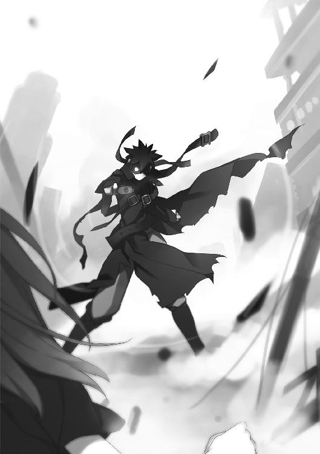
戦い方を間違えて、死んだ。──その後、誰かの都合で、此の世に舞い戻った。
本当に生き返ったのかどうかなど、分からない。ただの記憶と夢が、〝ミミック〟の身体にコピーされただけなのかもしれない。
しかし今の利菜は、人格も感情もある立花利菜という少女なのだ。
だから──過去の罪からは、逃れられない。
実の親を傷つけ、決戦の約束を破り、それらから目をそらすために他人を助け──今ではもう自分で自分を責めるあまり、己の幸せなど望むべくもない。
一度は死んだのに、仮初めの命を与えられて藻搔くだけのゾンビだ。
そんな惨めな自分が、ただの幻と心中するならば──。
お似合いの最期といえる。
「私といっしょに死ね、〝かっこう〟！」
渾身の──最後の一撃を放つべく、ナナホシテントウムシが羽を拡げた。
瓦礫の上に立つ〝かっこう〟が、反撃すべく拳銃を持ち上げて──。
「──え？」
次の瞬間、〝かっこう〟がとった行動に、利菜は目を疑った。その行動の意味を考えるよりも先に、身体が勝手に動く。
「待っ......うっ──」
傍らにいるナナホシテントウムシを制止しようとするが、遅かった。無謀にも手を出した利菜は弾き飛ばされ、〝かっこう〟目がけて衝撃波が放たれる。
だが──かろうじて、衝撃波の向きだけは変えられた。
直撃を逃れた〝かっこう〟が、それでも余波で弾き飛ばされた。先ほどまでの頑強が噓のように軽々と地面の上を転がり、瓦礫の上で大の字に倒れる。
「なっ──何なのよ......！」
血を流す右腕をかばいながら、利菜は立ち上がった。倒れた〝かっこう〟に駆け寄る。
「ここに来て、なんで──手を抜くのよ！」
見間違いではなかった。
利菜が攻撃を放つ直前──〝かっこう〟が自らの〝虫〟との同化を解いたのだ。そのせいで生身で利菜の衝撃波を受け、全身に怪我を負っている。
「......殺せ」
ヒビ割れたゴーグルで利菜を見上げ、〝かっこう〟がぽつりと呟いた。
「俺はもう──疲れたんだ......」
「──」
ふらり、と。
利菜の身体が、傾いた。
あまりに思いがけない宿敵の言葉に、目眩を覚える。
「は......？ なに、ソレ......そういう、精神攻撃ってこと......？」
「もう、戦いたくないんだ......」
ゴーグルをしていても、分かる。〝かっこう〟は苦しげに顔を歪めていた。
所詮、ただの幻覚なのだろう。
利菜の知る〝かっこう〟はそんな顔をしないし、そんな弱音を吐いたりはしない。
利菜は、そんな彼を知らない──。
「俺なんかを、もう頼るな......俺の名を呼んだりしないでくれ......」
「やめろ──」
目眩が一周して、身体の傾きが直った。その代わり──底知れない怒りがこみ上げる。
利菜の足が、思い切り〝かっこう〟の腹を踏みつけた。
「アンタが、そんなことを言うな......！ アンタが始めたんでしょうが！」
かつての利菜は知らなかったが、今は違う。
悪魔と呼ばれた虫憑きが、何のために戦っていたのか。利菜であると同時に〝ミミック〟でもある今の彼女は、その真実を知ってしまった。
「〝始まりの三匹〟と戦うために......虫憑きがもう生まれない世界にするために、戦ってきたんでしょう！ そのために多くの虫憑きを犠牲にしたんでしょう！ そのために今まで生き抜いてきたんでしょう！」
憎悪を込めて、何度も〝かっこう〟を踏みつける。
「その戦いのために──私は呼び戻されたんでしょう？ 一人の虫憑きを生贄にしてまで！ ただのコピーでしかない、惨めな姿で！」
無抵抗の〝かっこう〟に、利菜はますます苛立った。今度は胸に摑みかかる。
「それなのに、アンタだけ先に一人で楽になって......名前を呼ぶななんて言うな！」
〝かっこう〟は無言だった。わずかに唇を嚙んだだけだ。
「私を呼ぶのは......こんな、もういない虫憑きの腕だけなのに......」
いつの間にか、無数の亡者の腕が利菜に纏わりついていた。
利菜は彼らを見捨てることも、逃れることもできない。彼らが利菜の一部となってしまった以上、地獄にすら彼らと共に堕ちるのだろう。
「俺は......生き残りたかっただけだ。何を犠牲にしても......」
利菜に摑みかかられた状態でも、〝かっこう〟は指一本動かそうとはしなかった。
「ただ、その途中で......色々、あった。〝始まりの三匹〟を倒すっていう目的も、元々はアリスが始めたことで、俺は──」
「知ってるわよ！ だからアリスは、アンタの名前を呼ぶわ！ 絶対に！」
「......」
「それに、あの子も！」
怒鳴る相手が、単なる幻覚だということも忘れて少年の顔を摑む。
力任せにゴーグルを引っ張ると、ボロボロに壊れたそれは簡単に外れた。
「詩歌が、アンタの名前を呼ぶに決まってるでしょう！」
露わになったのは、やけに懐かしく感じる少年の顔だった。
血塗れであること以外、そして頰に貼ったバンソウコウ以外には、何の特徴もない無個性な顔立ち。しかし利菜は誰よりも、その顔を知っている。
何しろ、その顔をカンバスに描いたことすら、あるのだから。
「......居場所が、欲しかっただけなんだ」
ありふれた少年の顔が、辛そうに歪んだ。
「戦いなんかじゃなく、俺を必要としてくれる場所......それだけが欲しくて──同じ夢を持った詩歌を待ちたくて......それだけだったのに......」
「......っ！」
私だって──。
そう叫びたくなるのを、かろうじて堪える。
「でも、もう無理だ......余計な戦いをしすぎて......俺自身、なんで戦ってるのか、分からなくなった......もう終わりにしたいんだ......」
「そんなの......！ 私も......！」
まるで自分自身が吐き出してしまいたい弱音を、代弁してくれているかのようだ。
もしかしたら、これはそういう幻覚なのかもしれない。
誰かの攻撃などではなく、自分自身の弱い心が生み出した幻で──つまり自分は本当に限界だということだ。
「まだ会うべき人がいるアンタが先にいなくなって......そんな相手もいない私が、無理矢理に戦わされるなんて──こんなの、ただの生き地獄じゃない......！」
何もない世界で、責め苦だけを味わうために生き返る。
そんなのは──辛すぎる。
「お前にだって、いるだろ......」
〝かっこう〟が顔を傾けた。
自分はいなくなりたがっておいて、何を無責任な──。
そんな怒りとともに彼の視線を追いかけ、息を吞む。
「──」
荒れ果てた氷飽市の彼方に、奇跡のように無事な姿で佇む建物が見えた。
総合病院だ。
「......イヤよ。アンタが消えたら、またあそこに戻るんでしょ......もう──辛いのは、イヤなのよ」
利菜は言う。
〝かっこう〟が笑んだ。薬屋大助の顔で。
「ああ、そうだな......俺も、戻って欲しくない」
「なに、ソレ？ ずっとこうしていて欲しいっていう愛の告白？」
いつしか利菜は、倒れた少年のそばに寄り添って座る形になっていた。奇しくも利菜が死んだ時と同じだ。互いの姿勢は逆だが。
彼は微笑んだまま、何も言わなかった。
静寂が二人を包む。
本当に、このままでもいいか──。
そんな想いが、利菜の胸にこみ上げた。
周りは瓦礫だらけで、花畑のかわりに亡者の腕がウヨウヨと蠢く地獄のような光景だが──気持ち悪さも度を超えると、喜劇のように見える。
「......それで、本当はどういう意味なのよ？」
どれくらい時間が経ったかも分からなくなった頃、利菜は言った。
束の間の幸福にすら耐えられない自分は──本当に可愛げがないと思う。
「......あそこに戻ったら、どうせまた戦うんだろ？」
少年が言った。
「立花さんはさ」
薬屋大助の顔をして、嘆息する。
〝かっこう〟と薬屋大助──どちらが彼の本当の顔なのだろうか？
いや──どちらも、彼なのだろう。
立花利菜であり、レイディー・バードでもある自分と、同じように。
「そうしたら......なんていうのか、よく分からないけど......」
同じ教室で見た時と同じ、バカみたいな顔で言葉を選んだ挙げ句、言う。
「張り合いっていうヤツが──出てきちゃうんだよ」
ああ──。
彼のその言葉を聞いて、利菜はようやく理解した。
この不思議な世界で、再び〝かっこう〟の姿を見た時の、うまく言えない感覚──その呼び方を、ようやく思い出した。
「遅いわよ......」
呻く利菜の視界が、ぼやけつつあった。
横たわる少年の顔がうっすらと色あせていく。
「私なんか、ここでアンタを見た時から、とっくに張り合いが出てるんだから......」
恨みがましく睨む利菜に対し、消えゆく少年が苦笑したのが分かった。
もし今、利菜のいる世界が彼女の生み出した幻想だとしたら──。
名残惜しく、いかにも未練がましく、ゆっくりと意識とともに消えていこうとするのもまた、彼女の気持ちに呼応しているのだろうか。
諦めにも似た表情を浮かべた〝かっこう〟──薬屋大助が、ゆっくりと腕を上げた。
その指先が利菜の狐の面に触れて──。
「──」
利菜は、再び現実に戻った。
夕焼けに染まる総合病院のそばで、物陰に隠れる自分自身の姿。ちらほらと病院に出入りする人々も、幻覚に取り込まれる前と変わらない。
変わったのは、一カ所だけ。
利菜のつま先が、地面に転がった狐の仮面に触れているという点だけだ。
「──何だったのよ......」
呟き、利菜は一度だけ袖で目元を拭った。無機質な堅い面ではなく、露わになった頰の感触が腕から伝わる。
舞い戻った現実の世界は、あいかわらずの地獄だった。
そびえ立つ総合病院は無言で利菜の罪を責めているし、亡者たちの腕も見える。先ほどまで陥っていた幻覚が、何者かによる攻撃か──あるいは救済なのかを知る術もない。
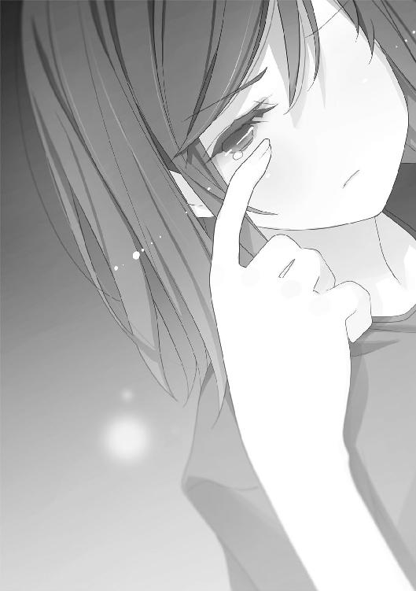
だが利菜は顔を上げ、病院に向かって歩き出した。
「......分かってるわよ。どうせ、行くしかないってことくらい──」
鉛のように重い身体が、ほんの少しだけ──狐の仮面一つ分だけ軽くなっていた。
外れた面を拾うことなく、利菜は病院に入る。
受付や待合室を通り抜け、エレベーターを経由して──入院棟の一番奥に向かう。
「......」
発汗と動悸が激しくなってきた。
先ほど見た、〝かっこう〟の顔を思い出す。
あの顔──どうせ自分たちは戦うしかないんだと言わんばかりの顔に、腹が立った。
本当に苛つくし、悔しいが、確かにその通りなのだと思う。
生きていても、死んでいても、結局は戦う以外の道を知らないのが自分たちなのだ。
「──」
利菜はついに、ＶＩＰ用の個室の前に立った。
ドアのノブに手をかける。見張りはいないし、鍵がかかっているわけでもない。入院した当時は大物でも、数年間も時が経つとセキュリティすら必要ないということか。
ドアを開けると、高価そうな備品と、大きなベッドが目に飛び込んだ。
震える脚を動かし、室内に入る。
一歩、また一歩とベッドに近づくたびに、過ぎた時が戻っていくかのようだ。
「──ごめんなさい」
人工呼吸器をつけた父親の横に立った時、利菜は数年前の自分に戻っていた。
やせ細り、変わり果てた父。
その姿を見下ろす利菜は、虫憑きになった当時の幼い自分を取り戻していた。
「お父さん......ごめんなさい......」
床に膝をつき、父の細くなった手を両手で握りしめる。
利菜の原罪が、ここに在る。
虫憑きになり、何年も経って、ようやく利菜は──自分のスタート地点に戻ってきた。
「もう取り返しがつかないし、今の私はもう本当の私でもないけれど......そんな私ですら、もうすぐ死ぬかもしれないけれど──」
思えば利菜は、幼いまま前に進もうとしていた。
押さえつけられ、強くて大きな力のせいで苦しむ人々を──幼い頃の自分と重ねて、ひたすらに助けようとしてきたのだ。
自らの罪を忘れ、正当化するために。
でも、そんなことも、もう終わりだ。
今まさに挑もうとしている戦いに勝利すれば、もう虫憑きが生まれることもない。
幼い頃の自分は──もう二度と、現れない。
「もし生きて帰ることができた時は──貴方のそばにいます。貴方が目を覚ますまで......貴方にちゃんと謝って、貴方に罵られるまで......」
はっきりと、誓う。
そして同時に、願う。
「ですから、どうか──助けてください」
意地を張って、ここまで自分の力だけで誰も彼も救おうとしてきた。
だが、それももう限界だ。今はそのことを認めることができる。
「貴方の力を貸してください......」
懇願し、片方の手だけを離して、携帯電話を取り出す。
万が一の時のために、とルシフェラから渡されたものだ。
しかし、取り出したそれは──なぜか真っ二つに折れていた。ここに来るまでの戦いで壊してしまったのかもしれない。
携帯電話を諦め、壁にある受話器を取る。外線に切り替え、記憶にある番号を押す。
「──利菜です」
すぐに電話は通じた。かけたのは父のかつての秘書の番号だった。
「今、父のそばにいます。長い間、ご心配をおかけしました......」
父はかつての権力者であり、今もその名残くらいはある。だが、その名残が問題で、弁護士がどうの、母方の実家がどうのと、今を逃すまいと秘書がまくし立てた。
その全てに答えてから、利菜は言った。
「今すぐに動かせる立花家の力を使って、準備して欲しいものがあります」
父に危害を加え、出奔した挙げ句、財産の私用までする。
そんな娘を、目の前で眠る父は親不孝と叱咤したいに違いない。
「船を......できるだけ大きな船を──私は、海に出なければいけないんです」
そのために利菜は誓ったのだ。
いつか目を覚ました父に、首を絞められるために。
それでもきっと利菜の名を呼ぶであろう父を待つために、ここへ戻ろう。
「何もかも、終わらせるために」
そうして、ようやく自分は幼い頃の、あの日から前に進める──。
そう、思った。
2.00 The others
「お兄ちゃん」
大樹は、昨日と同じ目覚め方をした。
半分開いた自室のドアから、末の妹の凛々絵が顔を覗かせていた。小柄でおとなしく、黒縁のメガネをかけた凛々絵は、兄にも姉にも似ていない。
「早く起きないと、お父さんにまた怒られるよ」
「ん......」
顔をしかめて上体を起こすと、どっと疲れを感じた。寝汗がひどい。
あまりにだるそうに見えたのか、凛々絵が言う。
「風邪？」
「......また、ヘンな夢を見て......疲れた......」
凛々絵が顔を引っ込めた。階段を下りていく足音が聞こえる。
大樹は重いため息をついて、背伸びをした。それだけで少し身体が軽くなる。
寝ぐせのついた頭を搔きながら一階に下りると、上の妹である希海と鉢合わせした。
「おはよう」
声をかけてすれ違おうとすると、やにわに希海が大樹の額に手を伸ばした。
「熱はないみたいだね」
「はあ？」
「具合悪いみたいって、凛々絵が言ってた」
希海はすでに制服に着替えていた。
「ズル休みできないね」
腕を引っ込めて悪戯っぽく笑う妹に、大樹は言い返すことができない。
リビングに行くと、テレビで赤牧市の状況をレポートする番組が流れていた。内容は昨日と変わりがない。レポーターの口調が早くも飽き気味なのが唯一の変化である。
「おはよう、大樹。大丈夫？ 学校、行ける？」
オープンキッチンで弁当の用意をしながら、母が振り向いた。
「......」
ソファに座った凛々絵が、素知らぬ顔でテレビを見ていた。その横に希海もいる。末の妹が真っ先に言いふらし、上の妹が先回りをして逃げ道を塞ぐという連係プレイだ。
「行くよ、大丈夫」
朝食の並ぶテーブルにつきながら、大樹。
どのみち休校寸前なのだから、一日くらいズル休みをしたところで罪悪感もない。だが仮病とバレたら厳格な父が怒るだろう。妹たちはそうと知っていて、長男の抜け駆けを阻止しにかかったのだ。
「普段から、ぼんやりしすぎだ。しっかりしろ」
ネクタイを締めながら、父がこちらを見もせずに言った。
しっかり生きていれば、ベッドの中で見る夢の内容もまともになるのだろうか？ 意外とそういうものかもしれないと思えるから、反論もできない。
大樹が見るようになった、奇妙な夢──。
虫憑きという人々が登場する夢だ。虫憑きなどという存在が実在するかどうかも含めて、現実離れしすぎた内容である。
この前は、妙な仮面をかぶった美人の夢だった。
そして今回、見た夢は──。
「今日も休校はナシかあ」
家を出る時間になると、希海がため息をついた。優等生の彼女といえども、出席者が減る一方の学校に通うのは憂鬱なのだろう。
大樹も同じだ。密かに休校の報せを待っていたのだが、残念ながら時間切れである。
「行ってきます」
一足先に家を出る凛々絵は、兄や姉ほど憂鬱ではなさそうだ。
大樹も靴を履こうとするが、まだ眠気が残ってるのか、靴紐を結ぶのに手間取る。
「まだぁ？」
「蹴るなよ」
後ろから希海に足で突かれ、急かされる。兄妹仲が悪いわけではないが、いっしょに家を出るのは気恥ずかしいものだ。歩幅が大きい大樹が先に家を出るのが慣例である。
「行ってきます」
自宅を出て通学路を歩きながら、朝のテレビ番組を思い出す。
赤牧市に関しては情報公開される気配が一切ないらしい。そのため不安を募らせる人々と、肩すかし感で落ち着きを取り戻す人々で国民が真っ二つに割れつつあるそうだ。
赤牧市から遠く離れた、この街はどちらだろうか？
通学路で見かける通行人の数が、昨日とそう変わらないように見えた。今日はまた減るだろうと考えていた大樹にとっては予想外である。
「意外とこのまま、何も変わらないのかもな」
ポツリと呟く。
進学校の授業は厳しいが、今の日常に不満のない大樹にとっては望むところである。
ただ、それだけに──心のどこかで、束の間の非日常を望んでいたのも事実だ。不謹慎と非難されるだろうが、多少のスリルを味わってみたいという少年心もある。
「まあ、いっか」
今日も昨日と同じように、教室に着いたらクラスメートと退屈さを愚痴ろう。
以前と変わったところなんて、おかしな夢を見るようになったところぐらいだ──。
そう思って、歩いていた時だった。
父親の言うように、大樹は普段からぼんやりとしているのだろう。
だから、その人物たちが眼前に立ち塞がったことに、必要以上にビックリした。
「──ミスター、タイキ？」
長身の白人男性だった。短い金髪をワックスで整えた、温和そうな青年である。何年も着込んだスーツと、擦り切れた革靴が、まだ若い年齢とアンバランスに映った。
「......？」
唐突に舞い込んだ非日常に、大樹は思わず全身を強ばらせた。
大樹は外国人と会話したことなどない。どう反応すればいいのか分からず困惑する。
「突然、お声をかけて申し訳ありません」
白人青年の隣に佇む女性が言った。
いや、女性と言うよりも、少女と呼んだほうが正しいかもしれない。年齢は大樹とそう変わらないように見える。しかしすらりとした体型にスーツを着込み、丁寧な言葉遣いをするあたり大人びて見える。
「こちらはジョン・マッシュ氏といいます。アメリカのジャーナリストです」
女性の説明と同時に、ジョンという青年が大樹に向かって手を伸ばした。
大樹はぎこちなく握手に応える。
スーツ姿の少女は、握手を求めなかった。斜めに切り揃えた前髪を指ですくいながら、日本式のお辞儀をする。
「私は通訳兼アシスタントの五十里野きらりと申します。──はじめまして」
美人で落ち着いた少女だ。もしかしたら予想に反して実年齢は高いのかもしれない。
直立不動で硬直する大樹に、ジョンが英語で何かをまくし立てた。
「え......？ えっと──」
やっと口から出た声が、そんな情けない声だった。
「お兄ちゃん？ どうしたの？」
大樹が振り返ると、遅れて家を出た妹が怪訝そうな顔で佇んでいた。
「い、いや、何だかワケが──」
「マッシュ氏は、貴方に取材の申し込みをしたいと言っています。大樹さん」
通訳の少女の言葉に、大樹と希海がきょとんとする。
「取材？」
「正確には貴方の従兄弟に関して、ですが」
眉をひそめる大樹を、ジョンときらりがじっと凝視した。
「その人物の名前は──」
まるで反応を確かめるかのように、彼の顔を見つめながら──。
「薬屋大助といいます」
五十里野きらりという少女が、はっきりと言った。
「それと──貴方自身の身の回りで、何か変わったことはありませんでしたか？」
やけに強い口調で問われ、大樹の脳裏をよぎったのは──。
毎晩のように見るようになった夢。
それも今日見たばかりの、あまりにも強い虫憑きの夢だった。
その男の戦いは、まるで炎そのもののように激しくて──。
2.01 ハルキヨ Part.1
ハルキヨは懐かしい匂いを嗅ぎ取っていた。
「いわゆる──クーデターというヤツですよ」
土師圭吾がそう言って、政府に反旗を翻した瞬間からだ。
肉や血が焦げつく嫌な匂いである。ハルキヨは、思えば生まれた時から、その匂いにつきまとわれていた気がする。
いわゆる地獄の匂いというヤツだ。
「──帰るか」
ハルキヨは嘆息混じりに言い放った。
虫憑きたちの臨時基地であるドーム施設は、喧噪に包まれていた。土師圭吾のクーデター宣言に続き、レイディー・バードの登場で混乱はピークに達している。
「あの女を放っとくの？」
長い付き合いの久瀬崎梅が言った。セーラー服を着た中性的な少年の視線の先には、微笑みを絶やさない魅車八重子がいた。
「〝司書〟や〝管理人〟は何年間も玩具にされたんだぜ？ その分のケジメをつけさせる方法をじっくりと考えないとな」
「みんなから拷問の企画書を募集しようよ！ 採用されるのは、ぼくのだと思うけどさ」
ワクワクとした顔で言う梅の背後に、大きなカガミムシが生まれた。カガミムシの背中に埋め込まれた鏡面に、ハルキヨと彼の連れたちの姿が映る。
ハルキヨは横を見て、〝眠り姫〟を抱える〝霞王〟に言う。
「そいつが起きたら伝えとけ、〝霞王〟」
「ああっ？」
「これが──この世界が、てめーが失敗した夢の続きだってな」
〝霞王〟、それに〝ねね〟や〝玉藻〟といった少女たちが、目つきを険しくした。
「ツケが回ってきたとも言えるな。てめーと〝かっこう〟は〝Ｃ〟の危うさに気づいていたクセによ。あのガキこそ流星群の夜に参加させて──殺しておくべきだった」
彼の台詞に一瞬、黙り込む少女たち。だが、すぐに〝霞王〟が言い返す。
「......今さら、昔のことを蒸し返すのか？ てめぇもヤキが回ったな」
「俺は、しつけーんだよ。知ってるだろ？」
ハルキヨが言い放った直後、視界に映る光景が一変した。
眼前に赤牧市の街並みが拡がっていた。横向きの突風が吹きつける。
ハルキヨはドームの天井、頂点部に立っていた。
一瞬にしてハルキヨを屋外に転送したのは、久瀬崎梅のカガミムシだ。複数のカガミムシを操る梅は、人の姿を次から次へと別のカガミムシに反射させることで別の場所に転送させることができる。
ハルキヨのそばには梅や遥香を含め、数人の連れも揃っていた。
「それでハルキヨ、これからどうするんですか？」
顎に無精髭を生やした青年が、背伸びをしながら尋ねた。サンタクロースというあだ名の友人で、強力な虫憑きでもある。
「どうもしねぇ。遊びは終わりだ」
「そうなの？ そうなの？ ハルキヨは一体ナニがしたかったのさ？ ......うっ、傷がまた開きそう。もっとお薬を塗らなきゃ」
三角帽子の少女が、自分の腹に得体の知れない薬を塗る。彼女のあだ名は魔女だ。
「大したことじゃねぇよ。寝ぼけた〝眠り姫〟に虫ケラみてぇに殺されたかっただけだ」
「オォウ、ヘンタイ......！」
マリアというあだ名の金髪の女性が、なぜか興奮した様子で鼻息を荒くした。
「そのために二年以上かけて捜し続けた......筋金入り......」
ゴスロリと呼ばれるタイプの衣装を纏った榊遥香が、ぼそりと呟く。
その時、ドーム全体が激しく揺れた。
轟音とともに、視界の端に土煙が吹き荒れる。
ミサイルでも暴発したのか、と思ったが違った。何らかの衝撃がドームの壁を突き破ったようだ。土煙に紛れて、ドーム内からワラワラと飛び出す虫憑きたちが見える。
「なんだ、終わりなんですか。じゃあオレは、帰りますかね。ハルキヨが死にかけるっていう、なかなかレアな光景を堪能できたし」
「そうだね、そうだね。あたしたちも死にかけたけど、そんなのいつものことだし。帰って録画しておいたアニメ見なきゃ」
「アイム、スリーピィ......」
彼らはハルキヨの知人の中でも、特に強い虫憑きだ。何者にも脅かされることのない彼らは、自由で、なおかつクセ者揃いである。
徹夜でカラオケを遊んだ後のようなノリで帰ろうとする彼らを呼び止める権利は、ハルキヨにはない。止める理由もなかった。
「えー、もう帰っちゃうの？ まだ面白そうじゃん、なんか戦争っぽくて。センソー」
不満を露わにしたのは梅だけだ。彼はまだ遊び足りないらしい。
「二ケタ以上の人数で団体行動とか、ゾッとしますね。吐きますよ、オレ」
「やだよ、やだよ。戦争っつったら、魔女狩りじゃんか。寄ってたかって罵倒されるのは、教室だけでじゅうぶんさ。ああ、世界が滅んで学校休みにならないかな......」
「ノー、ウォー！ ラヴアンドピース！」
友人たちの冷たい態度に、梅が口を尖らせる。
「じゃあせめて、ちょっとでいいから能力置いてってよ、遥香にさ！ マリアさんの感知能力と魔女さんの薬と占いは便利なんだよ。あ、サンタクロースはいらないから帰れ」
「なんでじゃコラ。むしろオレが一番使えるでしょうが。頼まれても、手の内晒すつもりないんでムリですけど」
「ノー！ ファッキュー！」
「ごめんよ、ごめんよ。お薬の残りをあげるから、勘弁しておくれ」
とりつく島もなく、友人たちは去ることとなった。それも魔女がどこからか取り出した箒を使い、三人乗りで空を飛ぶというふざけた去り方でだ。
赤牧市の空に「もっと速く飛べないんですか」「ハイヨー！」「あんたは自力で飛べるんじゃなかったかい、マリア......？」という声が遠ざかっていく。
「あーあ、行っちゃった。いいの、ハルキヨ？」
「あん？ 何がだ？」
「〝Ｃ〟討伐に加わるんじゃないの？ それとも本当に、これでもう終わりのつもり？」
梅に問われ、ハルキヨはその場に座り込んだ。
「〝Ｃ〟討伐なんざハナから関係ねぇよ。俺はアリスに落とし前をつけさせたかっただけなんだからな」
「そのアリスさんも、放ってきちゃったじゃん」
「筋は通したから、いいんだよ。あいつは何の躊躇もなく、目的もなく、全力で俺を殺しに来た。本人は寝ぼけてただけだろうが、それが良かった。二年前にすると言ったことを、やっとしたんだからな。あいつはきっちりケジメをつけた」
「......」
「それで俺は生き残ったんだから──また俺が勝っちまったってだけのことだ」
眼下では、激しい戦闘が繰り広げられていた。
復活したレイディー・バードが殿を務め、一人でも多く虫憑きを逃がそうとしている。
「勝ったのに、ぜんぜん嬉しそうじゃないねえ」
「ああ、また次の......〝災難〟を探さなきゃいけないとなると、気が滅入るぜ」
心からの本音だった。
今の彼の気持ち──とてつもない落胆と虚無感は、いつまで経っても慣れることができない。これまでに何度となく経験してきたというのに、である。
「よく分からないけど......面倒クサいんだねえ、ハルキヨの夢って」
梅の言う、ハルキヨの夢。
それについて自分の口から語ったことは、一度しかない。確かに自分でも面倒臭い夢だと思うし、実際、それを聞いた人物──アリスは呆れていた。
いや、違った。
ハルキヨの馬鹿みたいな夢を聞いた時、アリスは──泣いたのだった。
自分が泣く理由を、彼女は明かさなかった。
「本当に、ウンザリするぜ......」
つまらないことを思い出し、舌打ちするハルキヨ。
その彼の頭上を、異様な光景が覆った。
巨大な神殿が雲間から現れたのだ。
「......あ......なんか来そう......」
遥香が呟くと同時に、ハルキヨは空に浮かぶ神殿を睨みつける。
ハルキヨの周囲を一度だけ、真っ赤な熱波がなぎ払った。彼らに付き纏うように迫りつつあった異様な気配が霧散する。
「今、〝Ｃ〟が精神攻撃しようとしてきたのかな？ 取り込んだ〝浸父〟の能力？」
「無差別かよ、遊んでやる気も起きねぇな。まぁ下にいる女が、適当に追い払うだろ」
不機嫌に吐き捨てるハルキヨを、梅が不思議そうな顔で振り返った。
「ねえ、ハルキヨはとにかく強い敵と戦いたいんでしょ？ それこそ〝Ｃ〟なら、うってつけじゃないの？ ぼく、わりと〝Ｃ〟との戦争には興味あるんだけどな」
「あんまり、そそられねぇが......強さを考えりゃアリではある。俺一人じゃ、どうしたって勝てねぇだろうしな」
彼の返答は、意外だったようだ。梅が驚いた顔をする。
「なんだ、アリなんじゃん」
「でも、下にいる連中と組むのはナシだ。マジで戦うとしたら、なおさらな」
「一人じゃ勝てないのに......あの人たちとは組まないの......？」
遥香も首を傾げた。ハルキヨは平然と言う。
「ありゃあ、どう見ても──負け戦だろ」
頭上では、神殿が煌々と輝いたままだ。
さっさと片づけると思っていたハルキヨは、いっそう苛立ちを募らせる。
「〝かっこう〟はいねぇ。〝ふゆほたる〟も行方不明。アリスが使い物になるかも分からねぇ。残る頼みが、レイディーもどきときた。他に使えそうなヤツっつったら、せいぜい五、六人程度か？ あんなヤツらと組んだら、足を引っ張られるだけだぜ」
空に向かって飛翔していくナナホシテントウムシが見えた。
衝撃とともに、ようやく巨大神殿が消滅する。
「強いじゃん、レイディーさん。──あ、でも」
戦況を窺っていた梅が、地上の様子を見て苦笑いを浮かべた。
「別行動するみたい。弱い人たちを無事に逃がしたいのかな。変わってないなあ......」
「生き返っても変われねぇなら、ますます救いがねぇよ。一人で何でもかんでも背負って、誰にも頼らず、弱ーヤツらと心中して終わりだ」
レイディー・バードという一号指定のことを、ハルキヨは少なからず知っている。
けなげに他者のために戦う女神は、その清き精神を抱いたまま再び殉死するだろう。残された信仰者たちは彼女を偶像化し、再度の復活を望むのだ。
ハルキヨからしてみれば、きりのない呪いを繰り返す喜劇である。
「つまり現段階で〝Ｃ〟に勝てる手段はねぇってことだ。勝てねぇ相手にケンカ売るのは、ただの自殺以外の何物でもねぇよ」
地上を走り去っていくレイディー・バードたちを見送りながら、言い放つ。
「俺は生きてぇんだ。そのために──俺を殺す可能性のある〝災難〟を潰して回ってんだからな」
梅と遥香が諦めた様子で、互いの顔を見合わせた。
「じゃあ、もう帰る？」
「......帰ろ......」
「ああ。──だが、その前に、さっきからほんの少し気になっていたんだが」
ハルキヨは立ち上がり、梅を見た。
いや、正確には梅と彼のカガミムシの間に立っている人物を睨んだのだ。
「てめぇは、何だ？」
ビジネススーツを着た女性が、直立不動の姿勢で佇んでいた。年齢は二十代半ばくらいに見える美人だが、なぜかクマのぬいぐるみを胸に抱えている。
梅と遥香も、驚いた顔でスーツ姿の美人を振り返った。
「えっ！ ハルキヨにも見えてたの？ 移動する時に勝手にぼくの〝虫〟の前に飛び込んで、いっしょに移動してきちゃったように見えてたけど......みんなしてスルーしまくるから、てっきりぼくにしか見えない人かと思ってた！」
「......幽霊じゃなかったんだ......がっかり......」
地上からドームの上に転送したのは、ハルキヨと彼の連れだけではなかった。
最初からもう一人だけ、彼らの関係者ではない人物も加わっていたのだ。
「ご期待に添えず、申し訳ございません。私は生きた人間で、赤瀬川グループ会長である赤瀬川七那の秘書を務めております」
すらすらと自己紹介文を述べ、女性がクマのぬいぐるみをペコリと一礼させた。
「彼はセプテム・プンクタータ君です」
「赤瀬川七那の秘書とぬいぐるみが、何の用だ？」
ハルキヨは女性の奇行も意に介さない。変人には慣れている。
「ハルキヨ様。赤瀬川会長より、貴方に仕事の依頼がございます」
そう言って、秘書と名乗る女性が言った。
「あるものを保護し、ある場所へ届けてください」
2.02 ハルキヨ Part.2
ハルキヨが己の人生を振り返るのは簡単だ。
俺以外、みんな死んだ──。
その一言で済む。
事あるごとに、ハルキヨを事故や不幸が襲うのだ。その度に彼に関わった人々が巻き込まれて死んでいく。ハルキヨが彼らをいくら助けようとしても、無駄だった。
ハルキヨはそれを〝災難〟と呼んだ。
彼の人生は〝災難〟に打ち勝ち、この世を謳歌するためにある。
だから虫憑きになったことさえ、ただの過程にすぎない。強い力を得た彼は、より強い〝災難〟を乗り越えるために、より強くなり、より生を楽しむだけだ。
つまり彼は虫憑きを巡る戦いなど、ちっとも興味がないのである。
成り行きで〝眠り姫〟と関わったものの、〝虫〟や虫憑きなどどうでもいいのだ。
それなのに、なぜか──。
「あるものを保護し、ある場所へ届けてください」
赤瀬川七那の秘書と名乗る、ぬいぐるみ付きの女性が言った。
虫憑きのことなど興味のない彼の下に、それらの秘密が舞い込んでくる──。
そんな奇運が、あった。
ある時は、重要人物との偶然の出会いによって。
ある時は、変人ばかりだが実力はある友人らが持ち込んだり、託された情報によって。
ある時は、〝眠り姫〟を捜すために特別環境保全事務局に協力したことで。
ハルキヨは、虫憑きに関する秘密の多くを知っている。知ったからといって、どうするわけでもない彼がだ。
なぜだろうか？
その理由は今に到るまで──見つけ出せずにいる。
「始原の虫憑き、〝〟の保護と、安全な場所への移送をお願いしたいのです」
横風が吹くドームの屋根の上で、秘書が言った。
〝〟──。
その存在を、ハルキヨは知っていた。
赤瀬川七那が所有し、カノン教団と呼ばれる組織と争奪戦をしたこともある代物だ。
赤瀬川七那は赤瀬川グループという企業団の会長を務める資産家である。そんな彼女が円卓会という政財界の重鎮が集まる秘密俱楽部と揉めた時期と、を手に入れた時期が重なるところから──とやらの出所に円卓会が関係していることも想像がつく。
だが、というものの正体までは、ハルキヨは知らない。
興味もない。
「作戦３を遂行していた中での出来事です。〝Ｃ〟──超種一号となったそれではなく、元の人格としての堀内愛理衣が、その身を引き替えにしてを抹消しようとしました」
秘書が淡々と説明する。
「かろうじて阻止できたものの、その後は生命維持装置を搭載した車両に収容するのが精一杯で......ある場所から動けずにいます。それを守っていた〝むしばね〟や特環の虫憑きも撤退するのに必死で、を回収する余裕などありませんでした」
ハルキヨは梅と顔を見合わせた。遥香は早くも屋根に寝そべり、居眠りをしている。
「これまでに赤瀬川はに莫大な額を投資しています。堀内愛理衣がを消し去ろうとした理由は分かりませんが、〝Ｃ〟もまたそれを狙うようなことがあれば──何としても守る必要があります。我々はまだから何の利益も得ていないのですから」
「......」
「は現在〝Ｃ〟に見つからないようにスタンドアロンの状態で保護していますが、生命維持装置を動かすバッテリーも長くは保たないでしょう。一刻も早くじゅうぶんな設備がある場所へ避難させたいのです。現時点でそれを行うことができるだけの戦力は......ハルキヨ様しかいないと赤瀬川は判断しました」
黙って話を聞いていた梅が、秘書の前に進み出た。
「ねえ、お姉さん。って、なに？」
いきなり核心をついた質問に、秘書が一瞬黙り込んだ。
「......はじめて世に現れた虫憑き、ということしか判明しておりません」
「ふぅん。それって、そんなに大事なことなの？」
「〝虫〟とは何なのか、という謎を知る大きな手がかりといえます。さらに先ほども申し上げた通り、堀内愛理衣が自らの命と引き替えにしてでも消そうとしたことから、他にも何らかの重要性を秘めているものと推測しています」
「手がかりなら、そのって人に聞いたら？ キミ誰？ って」
「は昏睡と覚醒を繰り返しています。また身体の一部を欠損して衰弱しており、薬物による強制的な覚醒や尋問も行えず......」
「そのって人を助けて、ぼくらに何のメリットがあるの？」
「多額の報酬をお支払いできます。現金以外にも、法的に入手困難なアイテムの提供なども、ご相談に乗ることができるかと」
「お金かあ。でも、どうせこの国のお金なんてダメになるよね。こんな状況じゃ」
「お望みなら他国の通貨でお支払いを。この世から資本主義がなくならないかぎり、赤瀬川七那という人間が資産を失うことは二度とないでしょう」
「わあ、すごい自信。ねえ、ハルキヨ、この人たちがお金くれるって」
「起きろ、遥香。帰るぜ」
ハルキヨは片手で遥香を持ち上げ、揺さぶってみる。秘書の話は途中から聞き流していたし、揺らしても遥香は起きなかった。
梅が秘書に向き直り、屈託なく笑った。
「ごめんねえ。お金は嫌いじゃないけど、今、そんな気分じゃないんだ。あるでしょ？ 今日は絶対ラーメンって決めたのにカレーのお店しか見当たらない、みたいな時」
「......もう一つ、我々が提供できることがございます」
秘書が言った。赤瀬川七那──金のことしか頭にないあの成金女といえど、さすがにハルキヨが金に釣られるとは考えていなかったようだ。
「〝眠り姫〟の保護と、完全な覚醒までのあらゆるサポートを惜しみません」
ピクリ、とハルキヨたちは動きを止めた。
様々な意味で、意外な申し出だ。ハルキヨは言う。
「確か、あの女の家も金持ちだったろ。わざわざ赤瀬川が首を突っ込むことじゃねーな」
「いいえ、我々にしか不可能です」
秘書がきっぱりと言い放った。
「〝眠り姫〟が眠りにつく前、彼女は成虫化寸前の状態にありました。あれから月日が経ち、見た目は成長していましたが......精神的な成長の度合いは未知数です。目が覚めたとはいえ、再び成虫化する可能性は低くはありません。違いますか？」
ハルキヨは答えなかった。
「作戦３から撤退しながら、赤瀬川七那は我がグループが今後とるべきプランをいくつか想定しました。その中に、塩原鯱人という少年との契約も含んでおります」
「シオハラシャチト？ ハルキヨ、知ってる？」
「知らねぇな」
「彼は獅子堂戌子という少女の最後の教え子です。獅子堂戌子とは生前〝あさぎ〟というコードネームで特環の虫憑きを指導していた教官のことです」
「ああ、ワンコさんなら、知ってるよね。ぼく、司書さんとやったトランプの罰ゲームで愛の告白しに行ったのが初対面だったんだあ」
「半殺しにされて泣きながら帰ってきたアレか」
「〝あさぎ〟は虫憑きの特性の分析に優れていました。虫憑きを戦闘員として再教育するマニュアルの考案のみならず、有望な人材を分析して各々に適した訓練を施すという試みをしています。──そうして積み重ねたノウハウを、最後の弟子である塩原鯱人に受け継がせた可能性があります」
「その野郎に、アリスを訓練させるってか？」
赤瀬川七那からの使いが言わんとすることを理解し、ハルキヨはニヤリと笑う。
「再び──成虫化しないように」
秘書が小さく頷いた。
「同じ一号指定である〝かっこう〟、〝ふゆほたる〟、そしてあの美しく完璧な利菜様でさえ、虫憑きになった直後に暴走しました。よほど強靱な精神力を元から有していないかぎり、一号指定の力は強すぎるのでしょう。しかし彼らはその後、訓練や経験を得て安定しました。〝眠り姫〟が経験を得るだけの時間がないというのならば──」
「訓練してやりゃあいい、ってことか」
「はい」
さすがに抜け目のない赤瀬川七那というべきか。作戦２の内容を知り、ずっと息を潜めてきたハルキヨの目的が〝眠り姫〟であると確信したのだろう。そして早速、交渉のテーブルに乗せてきたというわけだ。
報酬としては、申し分ない。
ハルキヨがすでに〝眠り姫〟と戦っていなければ──の話だが。
「またまた、ごめんねえ、お姉さん。実はもう〝眠り姫〟の用は済んだんだ」
梅がハルキヨの気持ちを代弁した。
「惜しかったね、ハルキヨが彼女と戦う前だったら良かったのにね」
「いいや、そもそも赤瀬川が持ち出した時点で、その報酬は取引材料にならねぇだろ」
ハルキヨは言う。
「俺が頼まなくても、あの女は〝眠り姫〟を助けるからだ。──あの守銭奴が〝眠り姫〟に肩入れしてたのは、金目的だけじゃねぇことくらい分かってんだぜ」
秘書は知らないだろうが、ハルキヨは知っている。
赤瀬川七那はかつて〝眠り姫〟と協力関係にあった。その関係性が成り立っていたのは損得勘定だけではなく、七那の個人的な思い入れもあってのことだ。
「いいえ、赤瀬川七那は〝眠り姫〟を助けません」
しかし秘書が、ハルキヨの言葉を否定した。
「それにハルキヨ様のほうこそ──用は済んだとおっしゃるならば、ここまで〝眠り姫〟を連れ帰った理由は何です？」
諦めの悪い交渉人は、まだ引き下がるつもりはないらしい。
無関心だったハルキヨの胸中に、小さな苛立ちがつのる。
「ヤツと戦って、俺なりのケジメはついた。ヤツの落とし前も含めてな。その後のことは、土師圭吾に対するケジメだ。あの男が送り届けた噓つき野郎のおかげで、邪魔が入らずに〝眠り姫〟と戦えたからな」
秘書がハルキヨの瞳を見つめ返す。
「本当に、それだけの理由ですか？」
「ムカつく目つきになってきたぜ？ 何が言いたい？」
「ただの暴走した虫憑きなら、そのへんの雑魚が成虫化したのと何も変わりません。貴方が捜し求めたのは、そんな──ただの〝災難〟のような降って湧いた力なのですか？」
〝災難〟。
その言葉に、ハルキヨの双眸に火が灯った。周囲の空気がジリジリと焦げつく。
「ああ、そうだ。まさにそれだぜ。俺は〝災難〟に勝ちたかったんだよ」
「そうですか？ 言葉を借りるなら、貴方が損得勘定以外の目的で〝眠り姫〟を捜しているように見えたのは赤瀬川七那も同じです」
「......」
「なぜなら、ただの〝災難〟なら、これまでに幾度もありました。〝ふゆほたる〟の誕生、レイディー・バードの成虫化、そしてその他にも色々あったはずです。しかしそれらの前に立ちふさがったのは〝かっこう〟であり、貴方ではなかった」
「......」
「貴方が〝眠り姫〟を捜すことだけに執着したのは、その虫憑きとしての力だけではなく......彼女が覚醒してはじめて意味をなす、別の強さに期待してのことでは？」
無表情に語る司書の前髪に、火が灯った。
「不愉快だぜ。知った顔で、勝手に他人の分析をするもんじゃねぇぞ」
「分析ではありません。赤瀬川七那は覚悟をしているのです。彼女のはじめての友人ともいうべき〝眠り姫〟を──助けないことを」
秘書のまつ毛が、襟が、スーツの裾が、次々と点火されていく。
「〝眠り姫〟は必ず勝つと約束し、流星群の夜の戦いに赤瀬川七那に協力を求めました。しかし結果は知っての通り──敗北しました。赤瀬川七那は失敗した投資対象を、決して救済しません。それが彼女の覚悟であり、契約と約束に対するケジメです」
「......ひでぇ人間だな。友達甲斐のねぇヤツだ」
「〝眠り姫〟の友人であり続けるため──赤瀬川七那が赤瀬川七那であり続けるためです」
ハルキヨはニヤリと嗤う。
なるほど、これが赤瀬川七那の提示した本当の報酬というわけだ。
自分は〝眠り姫〟を助けない、と宣告すること。
助けるかどうかはハルキヨ次第という、取引どころか脅しを持ちかけてきたのだ。
自らの友人すら、人質交渉の道具として扱う──。
どこまでも図々しい、あの成金女の本領発揮である。
「つまり俺が助けねぇと、アリスは成虫化して死ぬ運命ってわけだ」
「土師圭吾は彼女を使い捨てるでしょう。そういう人間だと聞いています。特別環境保全事務局も解体した今、彼女に訓練を施すことができるのは、塩原鯱人を抱き込む我がグループのみ。そしてそれを行うかどうかを判断するのは──ハルキヨ様です」
「......」
「なに？ まだアリスさんに、何か期待してるの、ハルキヨ？」
梅に腕を引っ張られ、ハルキヨは表情を崩した。
秘書に纏わりついていた火が、何事もなかったように消える。
「いや──興味ねぇな」
何と言われようと、ハルキヨは目的を果たしたのだ。
──彼の強さは......意味があると思うの。
懐かしい。
とっくに忘れた、あの少女の言葉が脳裏をよぎった。
「そうだ、そのっていう人がすごい美少女だったりしたら、興味湧くかも！」
梅が満面の笑みで言い、秘書を振り返る。
「......彼は、青年です。少なくとも見た目上は」
「なーんだ。帰ろ、帰ろ」
梅に背中を押され、ハルキヨは身を翻した。
虫憑きや、虫憑きを巡る戦いになど、彼はこれっぽっちも興味がない。彼が追い求める別のものに、それが付き纏ってきただけだ。
〝眠り姫〟にしても、そうだ。
ハルキヨが先制攻撃をしかけようと探し求めた〝災難〟が、たまたま虫憑きだった。そいつがたまたま虫憑きを救いたいなどと願うバカだっただけである。
「哀れな青年なのです......」
最後の手段として泣き落としにかかったのか、秘書の言葉が続く。
「もうかなり衰弱し......たまに目を覚ましても、〝もう眠らせてくれ〟と......」
「......」
長く捜し求めた〝眠り姫〟とも決着をつけた。
虫憑きの戦いに関わるのも、これで終わりだ。
そう思って後腐れなく去ろうとしたハルキヨだが──。
ピクリ、と。
肩を揺らして、その場に留まった。
彼の表情を見た梅と、寝惚け眼だった遥香が、ハッとして青ざめる。
「〝もう、殺してくれ〟と呻くばかりで......」
「──そいつは、どこにいる？」
振り向きもせず、ハルキヨは尋ねた。
「え？」
諦めかけていた秘書が、動揺する気配が伝わった。
「早く教えたほうがいいよ、お姉さん。灼かれちゃうよ？」
顔を引きつらせた梅と遥香が、素早くハルキヨから遠ざかっていく。
「あ、は今──」
秘書がの所在地を口にした。
その後、ハルキヨは、自らの内に沸き起こる衝動を抑えつけたりはしなかった。
自らの身体を炎で包み、燃え盛る熱球となって地上に降り立つ。まだ周囲をうろついていた装甲車を弾き飛ばし、人気のない赤牧市に飛び出す。
能力で生み出した熱波に乗り、時にビルの屋上を跳び越え、電柱を打ち倒し──たまに何人かの蘇生者らしき雑魚を蹴散らし、一直線に目的地に向かう。
そうして数分後には、赤牧市の郊外に到着していた。
貨物列車の車庫がある倉庫地帯である。
コンテナが並べられた敷地を抜けて、ある一棟の倉庫の前に立つ。出入り口の分厚い扉も、ハルキヨが手をかざしただけでドロリと溶けた。
「──ッ！」
たちまち大勢が騒ぐ声が聞こえた。
倉庫内に数台のトレーラーが停車していた。それを取り囲んでいるのは、物騒な銃器を構えた男たちだ。赤瀬川七那が雇った傭兵だろう。
「くたばってろ」
ハルキヨが放った熱波に弾き飛ばされ、男たちが気絶する。
「はじめに言っとくぜ。──助けに来たんじゃねぇから、期待すんなよ。気に入らねぇヤツには一言、言っとかねぇと気が済まねぇってだけだ」
トレーラーの荷台の扉を溶かし、ハルキヨは内部に乗り込む。
そこは縦横無尽にチューブや電子管が張り巡らされた異世界だった。中央には浴槽のような──はたまた棺のような長方形のプールがあった。
液体で満たされたプールの中で、一人の青年が寝ていた。
「俺はてめぇみてぇな死にたがりが、死ぬほど嫌いなんだよ」
ハルキヨの放つ熱気に触れ、水面から水蒸気の靄が上がる。
「どうしても生きたい俺が生きるための酸素を、てめぇみてぇな死にたがり野郎が吸ってんじゃねぇぞ、ああ？」
それが始原の虫憑き、と──。
炎の魔人、ハルキヨの出会いだった。
2.03 ハルキヨ Part.3
液体の中に横たわるに、ハルキヨは摑みかかった。青年の顔を覆うマスクを取る。
「筋の通った説明をしろ」
蠟人形のように真っ白な顔を、数センチの距離から睨みつける。
「殺してほしいそうだな？ どうして、そう考えた？ 誰かに生きるのを邪魔されてんのか？ 寿命が短けーのか？ だったらちゃんと敵をぶっ殺したり寿命延ばす努力をしたんだよな？ その上で、誰かに殺してもらいたがってるのか？」
間近から怒声を浴びせられ、が薄目を開けた。か弱い吐息を漏らし、視線を動かす。
「あの......子は......？」
「あの子？ てめー、目が見えねえのか？ ここには俺しかいねえよ。二人きりだぜ」
「ぼくと......同じと言った......彼女がいないなら──」
の細く、長い吐息とともに、生命力までもが漏れ落ちていくかのようだ。
「もう、話すことはない......眠らせてくれ......もう、いいんだ......」
「......」
ハルキヨが燃える双眸を、すうっと細めた時だった。
「〝ふゆほたる〟のことです」
トレーラーの外から、女性の声がした。
久瀬崎梅と赤瀬川七那の秘書を両脇に抱えた、もう一人のハルキヨが現れた。二人を地面に放り出すと、ハルキヨの姿形を擬態した榊遥香が正体を現す。
「彼を買ったのは赤瀬川七那ですが、揺り起こしたのは〝ふゆほたる〟です。それ以来、彼は〝ふゆほたる〟に一種のシンパシーを抱いているようです」
「知ったこっちゃねーな」
ハルキヨは吐き捨て、に向き直った。
「気に入らねぇな、てめー......どことなく〝三匹目〟って野郎に似てるぜ。色々と自覚がある分、ヤツのほうがだいぶマシだったけどな」
吐き捨てるハルキヨの肌が、嫌な気配を感じ取った。
「ハルキヨ！ ヤバイよ、これって──」
倉庫の床に、金色の放電現象が発生していた。それらは小さなシーアゲハの形をとり、倉庫内をひらひらと舞う。
「〝Ｃ〟に見つかっ──」
梅の言葉が終わるよりも先に、倉庫内の空気が変貌した。
締めつけられるように気圧が下がり、次の瞬間には爆音と突風が吹き荒れる。
「俺が今──このクソ野郎と楽しくお喋りしてんだろうが」
ハルキヨとの髪が、吹き込む風に煽られた。
荷台から見える位置で、梅と遥香、そして秘書が啞然として周囲を見回す。
ハルキヨたちがいるトレーラーを除いて、周囲一帯が平地と化していた。グツグツと煮立つ地面の上で、倒れた傭兵たちの周辺だけが熱波の影響から逃れている。
「いくらウザいからって、倉庫ごとぶっ飛ばすことないじゃんか......」
梅の呻き声を背に、ハルキヨはを冷たく見下ろす。
「──〝Ｃ〟は今、俺を狙ったのか？ それとも、てめぇか？ まぁ少なくとも、てめぇを狙ってるヤツは大勢いるみたいだから関係ねーか」
は答えない。薄く開いた視線は、力なくハルキヨの胸に当てられている。
「色んな連中につけ狙われて、寄ってたかっててめーをイジメ抜いてんだもんな。てめーがよっぽどひでぇヤツじゃねえと、そうはならねぇよな？ 二、三百人ほどぶっ殺したのか？ それとも汚ぇ手を使って、カモから金を捲き上げまくったか？ 罪もねぇ女子供を弄んだり、弱っちぃ人間どもの尊厳を踏みにじってゴミ扱いでもしたのか？」
は答えない。
「だって、そうだよな？ てめーが今、苦しかったり、疲れてたりするなら──それは罰だろ。罰でもねぇのに、そんなに辛ーはずがねぇもんな？」
「......」
「それなのに、この期に及んで......まさか〝自分は何もしていないのに、一方的に苦しめられているんだ〟なんて言わねーよな？」
がついに瞼を閉じた。
「それでも自分は何もしてねーってんなら──てめーが生きてること自体が罪なんだろ」
ハルキヨは罵り続ける。
「生きてるだけで罪なのに、こんなご大層な機械まで使って図々しく生きてんじゃねぇよ。てめーの知らねーところで、てめーのせいで大勢が迷惑してんだよ。このクソ罪人野郎が、とっくにくたばってればいいのに、今のこの瞬間まで生きてて恥ずかしくねーのか？」
「......」
「自覚しろよ、最低最悪の犯罪者が自分が犯した罪も知らねークセに、〝私は何もしていません。なのに、みんなが私を殺そうとするんです〟みてーなツラして、のうのうと他人様の手を煩わせて罰を受けようとしやがって、どこまで卑怯なんだ、てめーは」
は無言だった。
しかし──その眉間に、わずかな皺が生まれていることに気づく。
「ああ？ ムカついてんのか？ うるせーってか？ ナマイキに不快感抱いてんじゃねぇよ。殺されてーんだろ？ 殺されんのに比べりゃ、耳元で罵倒されるなんて可愛い罰じゃねーか？ 甘んじて罰を受けようってヤツが、いっぱしに抵抗してんじゃねーよ。口答えも許さねーよ。生きたい人間様の気分を損ねてんじゃねー、ゴミクズが」
秘書が壁に設置された計器を見て、ハルキヨに警告する。
「の心拍数が上がっています。彼は貴重な証人なんです。それこそ虫憑きにとって、かけがえのない存在です。乱暴に扱うことは──」
「証人？ 知らねーよ、俺はコイツから何も聞きたくねー。──秘書っつったか？ いいからてめーはさっさと運転しろ」
秘書が「運転？」と首を傾げた。
梅と遥香が、トレーラーの荷台に乗り込んだ。
「うわー......さんだっけ？ ハルキヨは死にたがりが死ぬほど大っ嫌いだから、目をつけられちゃったねえ。〝眠り姫〟の次を見つけるの、早すぎだよ」
「......こうなったら、〝お願いだから生かさせてください〟って言うまでやめない......」
再び周囲に黄金の放電現象が発生しつつあった。
状況を理解し、秘書がぬいぐるみとともに運転席に向かう。
「大型免許は取得していないのですが......」
「あとで罰金払えば？」
「......ばっくれろ......」
「死にたがってるなら、どんな殺され方をしても文句言えねーよな？ てめーが罰を受け入れるってんなら、息が止まるまで罵ってやるぜ。ただの気晴らしでな」
を乗せた大型トレーラーが、下手くそな急バックをした。
梅と遥香が転がって壁に頭をぶつけるが、ハルキヨはを離さない。
「罰を受け入れるっていうなら、てめーは自分の罪を認めるんだな？ そんな負け犬野郎の口答えなんて許さねーし、薄汚ねぇ口で吐き出す証言なんか聞きたくもねーよ」
殴るようににマスクを戻し、浴槽のようなベッドに頭を押し戻す。
「てめぇに罰を押しつけようって連中も、どのみちてめぇの話なんか聞いてねーしな」
方向転換し、トレーラーが倉庫の跡地から飛び出した。
「だからこそ、てめーに残された抵抗の手段は──生きることしかねーのによ」
押さえつけたの頭が、ピクリと動いた気がした。
同時に、トレーラーが急ブレーキをかけて停車する。
「それすら放棄して罰を受けようってんなら、よっぽどの罪を犯したんだろうな？ 俺は興味が湧いたぜ。てめーの罪をこの目で見て、俺が判断してやる。地獄の閻魔様になりきって判決を下してやるぜ。中途半端な罪だったら、まともな死に方できると思うなよ」
ハルキヨの頭上、荷台の天井が赤黒く変色した。爆発するように内側から天井の一部が弾け飛び、円形の穴が空く。
彼は熱波を纏い、飛び上がった。トレーラーの屋根の上に着地し、あぐらをかく。
倉庫地帯を、多数の〝蘇生者〟たちが取り囲んでいた。
「おい、てめーら。俺を狙ってんのか？ それとも、この死に損ないか？」
ハルキヨの放った熱波が周囲一帯をなぎ払った。コンテナや無人の車両がレールごと吹き飛び、大勢の〝蘇生者〟たちが後方に弾き飛ばされる。
「おら、行けよ、ぬいぐるみ女。どこに行くんだか知らねーけどな」
天井を叩く。
「こいつの罪を確かめる方法が思い浮かんだぜ。それまでは──こいつを生かしてやる」
思い出したようにトレーラーが急発進した。
倉庫地帯を飛び出して市街地に入ると、大きな国道に出た。道路を封鎖する装甲車の列と遭遇するが、ハルキヨが手を払っただけで重量のある車両が一回転して道を空ける。
秘書の目的地は、遠方のようだ。トレーラーが立体交差点を越えて突入したのは、赤牧市と地方を結ぶ高速道路だった。
料金所の停止バーを打ち砕いて突破するトレーラー。
無人の高速道路を疾走するトレーラーの周囲に、金色の光が生まれた。
無数のシーアゲハだ。──逃げも隠れもせずに逃走するハルキヨたちの位置を、〝Ｃ〟が見失うはずがない。
シーアゲハたちが一点に集まり、トレーラーの真下に滑り込む。
「はっはー！」
ハルキヨが赤い熱球に身を包んだ。空中に身を投げ出し、トレーラーの屋根を摑む。
そのままハルキヨもろとも横殴りの熱波に身を任せることで、トレーラーが強制的にドリフト走行をした。
次の瞬間、トレーラーの足下から極大の雷が立ち上った。
紙一重の差で、横滑りした荷台が直撃を避ける。
「ツラすら見せずに遠くから遊ぼうなんて、さすがにナメすぎじゃねぇのか、〝Ｃ〟！」
立て続けに第二撃、第三撃がトレーラーを襲う。
しかしハルキヨは車体を左右に振り、ことごとく避け続ける。
「う、うぇええっ......！ ハルキヨ、他にやり方ないの？ ぼく、吐きそう......！」
「......頭と鼻ぶつけた......」
荷台の内側から苦情が聞こえたが、彼は意に介さない。
装甲車のバリケードと〝蘇生者〟たちが前方に立ち塞がった。しかしハルキヨが放った熱波に弾き飛ばされ、あえなく道を空ける。
「いくらやってもムダだぜ！ 本気を出しやがれ、〝Ｃ〟！ 気色悪ぃ〝浸父〟を取り込んだなら、もっと得意な遊び方があるだろーが！」
電撃が止んだ。
前方の道路、消音壁の上に金色に輝く人影が現れる。
ティアラとマントを身につけた幼女──〝Ｃ〟である。
だが、本体ではない。輪郭が歪んだ少女が、すれ違い様にハルキヨと目を合わせる。
『失敗作だった旧い世代の虫憑きは──』
〝Ｃ〟の声がハルキヨの耳に届いた。
また前方に、別の〝Ｃ〟が現れる。
『方舟から追放します──』
口を動かさず、じっとハルキヨを見つめてすれ違う〝Ｃ〟。
『洪水が、過去の虫憑きを押し流す──』
三人目の〝Ｃ〟が現れ、ハルキヨたちの乗るトレーラーを凝視したまま後方に消える。
『そして私は、〝鳩〟を放つ......』
消えていく〝Ｃ〟を見送りながら、ハルキヨはニヤリと嗤う。
「よく分からねーが──なるほど、それが次の〝災難〟ってワケだ」
荷台の上に立ち、悠然と風を受けるハルキヨ。
「だが、俺は死なねーぜ。〝眠り姫〟も、俺を殺せなかった」
電撃が止み、〝Ｃ〟も姿を消すと──頭上の空に異変が生じた。
雲間から神々しい煌めきが漏れ出し、巨大な何かが姿を現そうとしていた。
「俺と、足下の死にたがり......てめーがどっちにとっての〝災難〟か知らねーが、いっしょにすんなよ。俺はコイツと違って、意地でも死なないぜ」
清らかな鐘の音が高速道路に響き渡った。
甘い陶酔感が彼の頭を浸食していく。
「そう、これだよ、これ」
笑み、彼はトレーラーの内部に飛び込んだ。
梅と遥香が、床の上に倒れていた。早くも〝Ｃ〟の精神汚染攻撃に意識を取り込まれてしまったようだ。そのうち自力で目を覚ますだろう。
急速に重くなる身体を酷使し、ハルキヨはに摑みかかった。
再び浴槽から、青年の頭を持ち上げる。
「──俺は認めねぇ。俺が生きてるかぎり、俺が生きてることは罪じゃねぇ」
が眉をひそめ、薄目を開いた。
「ご招待だぜ、死にたがり。俺とてめーの違いを思い知らせてやる」
鐘の音に吸い込まれそうな感覚を、あえて現段階では受け入れる。
しっかりとの頭を摑む。眼前の死にたがりを道連れとして引き込むためだ。
「俺くれーになると、精神攻撃を逆に乗っ取ることだってできるんだよ」
自分と同じ罪人に対して言い放ち、炎の魔人は──。
「たぶん、な」
〝Ｃ〟の精神攻撃に身を委ねた。
2.04 ハルキヨ Part.4
熱い。
苦しい。
痛い。
それがハルキヨという人間が生まれてすぐに抱いた感情だった。
「はあっ......はあっ......」
苦しげな呼吸と、激しい揺れを通して伝わる恐怖感が、彼を包んでいた。
世界には、産まれた直後の記憶を持つ人間が存在すると聞いた。
ハルキヨもその中の一人なのだろう。
彼が自分以外で認識したはじめての人は、母親ではなかった。
「......あ、頭を低くして、非常階段に向かってください！」
産まれたばかりの彼を抱えた、看護師の中年女性だ。髪は乱れ、顔は煤と汗で汚れきっていたが、彼女の腕から伝わる温もりは強さと逞しさを感じさせた。
「か、壁に非常階段までの標識がありますから、それに従って......！」
看護師が叫んでいるのは、炎の壁に向かってだった。
後で調べたことだが、ハルキヨが産まれた病院は、原因不明の火災事故で全焼している。彼の出生と同じタイミングで出火し、消火設備の故障と相まって、被害者の数も多い大事故になったようだ。
「げほっ！ げほっ！ 早く避難を......！」
炎の向こうから、また悲鳴が聞こえた。看護師が警告するが、当の本人がハルキヨを抱えた状態で逃げ遅れている。
炎に背を向けて廊下を戻る看護師。黒い煙をくぐりつつ、階段に辿り着くが──。
「うぅっ......！」
非常階段ではない通常のそれは、すでに火が及んでいた。下の階まで逃走手段を探しに行った同僚の運命を悟り、看護師が顔を強ばらせる。
「......！」
上階はまだ火が届いていないようだ。看護師は階段を駆け上がる。黒煙も上階に向かって流れていたが、その流れに抗う術はなかった。
案の定、最上階に出ると、廊下は大量の煙が充満していた。
「大丈夫......大丈夫だからね......」
看護師が大声で泣くハルキヨの顔を覗き込んだ。──ハルキヨが力いっぱい泣いたのは、あれが最初で最後だ。
そう。
産まれて間もない彼は、死にたくないと泣いたのだ。
その世界のことをまだ何一つ知らないくせに、生に未練を抱き──血のつながりもない看護師が、言葉も知らない彼の願いを聞き届けようと、自らの命を懸けてくれた。
「ううぅ──はあっ──」
黒煙をくぐるように床を這って逃げ道を探す看護師。
そんな彼女の指が、ドアの取っ手に触れた。すがる思いでドアを開けて中に飛び込む。
そこは狭い病室で、今は誰も使用していないようだった。
急いでドアを閉めるも、隙間から侵入する煙を防ぐことはできない。
「はあ......はあ......」
看護師とハルキヨは、全開にした窓際に追い詰められる。
あっという間に煙で満たされていく室内と、ドアが焼ける臭い。
迫る熱気を感じながら、看護師は自らの運命を悟ったようだ。
「──」
彼女が腕の中にいるハルキヨに向かって──優しく微笑んだ。
当時、乳児にすぎない彼は、彼女のために何ができただろう？ 彼女の手を引いて安全な場所まで逃げることも、ましてや虫憑きのような特別な力もない。
その時の彼にできることは、たった一つだけだった。
彼を励ますように、しかし恐怖に震える彼女に対して、せめてもの慰めとして──。
彼は、微笑み返した。
「......ぷっ」
まさか笑い返されるとは思わなかったのだろう。
看護師が安心したようにまた微笑んで──彼を強く抱きしめた。
そのまま背中から、窓の外に身を投げる。
その時の自由落下する浮遊感は、ハルキヨの中に深く刻み込まれている。
その後の衝撃と、それきり動かなくなった看護師の温もりも。
ハルキヨを救った看護師は病院に搬送されたが、やがて息を引き取ったという。
「──」
あの日、動かない看護師の懐から、ハルキヨは燃え盛る病院を見つめていた。
泣くことも止め、笑うこともなく、じっと動かずにいた。
何もせず、ただ自分の産まれ落ちた世界は、このようなものなのだと理解していた。
抗いがたい不幸で満たされ、悲鳴とともに人々が逃げ惑う世界。
しかし──見ず知らずの他人のために命を懸け、微笑むことができる世界。
彼は、そんな厳しくも美しい世界を、もっと生きたいと願った──。
「──これは、俺のせいじゃねぇよなあ？」
乳児の口が動き、はっきりとした言葉を紡ぎ出す。
「俺にはどうしようもねぇだろ。まだ首も据わってねぇのに、どうしろってんだ？」
歯も生えていない口で言い、ハルキヨは視線を横に向けた。
そこに一人の青年が佇んでいた。
ハルキヨが産まれた日に、その場にいなかったはずの人物だ。
「でも、どうやら、これが俺の罪の始まりだと言うヤツがいるみたいだぜ」
答えない青年──が、その場にうずくまった。
その姿が幼くなっていき、赤ん坊の姿へと変貌していく。
「〝Ｃ〟が〝浸父〟の力を使うってんなら、野郎のやり口は分かってんだ。ようするに、〝悔い改めろ〟ってことらしいぜ」
逆にハルキヨの姿が急速に成長し、十歳に満たない少年の姿に変わっていく。
「精神汚染つったって結局、ここは俺たちの記憶や精神の中なんだぜ。ちっとばかし気合入れりゃあ主導権はこっちのモンだ。どうだ？ 楽しくなってきただろ」
炎の魔人、ハルキヨ。
始原の虫憑き、。
立場も経歴も全く異なる、二人の虫憑きの──。
「次はてめぇの番だぜ。死にたがるに値する罪を見せてくれるんだろーな？」
罪比べの裁判が、開廷した。
2.05 ハルキヨ Part.5
彼は、世界で最も幸運だった。
産まれた瞬間に、この世で最も美しい光景を目の当たりにしたからだ。
それは、光──。
まだ視力も定まらない彼は、幸福な温かみとともにそれに包まれるのを感じた。
光が消えると、彼は泣き出した。
温もりに満ちた光を失うのが、どうしようもなく悲しかった。
再びそれに触れることは二度とできないだろうと、本能的に悟っていたのだ。
「──」
大声で泣く彼の顔を、髭を生やした男が覗き込んだ。
髭面の男の後ろから、別の男が覗き込んだ。さらに別の女性が現れ、また別の──と、次々と大人たちが彼の顔を見るために押し寄せた。
今となっては、彼が産まれたのがどこかも分からない。
ただ、彼が産まれたのは、汚くて狭い小屋の中だったことは憶えている。壁が崩れかけた、みすぼらしい場所だったはずだ。
そこへ、次々と押し寄せ、産まれたばかりの彼を訪問する人々。
彼らの眼。
眼。
眼。
自分を覗き込む、たくさんの眼を憶えている。
彼らは産まれたばかりの彼を包む光を見て、やって来たのだろう。首を傾けた彼の視界に、地面に跪いて祈る人物の姿が見えた。
目映い光と、彼の顔を覗き込む眼。
そして次に記憶に残っているのは、鼓膜を刺激する甲高い破裂音だった。
銃声である。
遠くから聞こえる、その小さな音は不幸を孕んでいた。そのことを産まれたばかりの彼は直感的に悟っていたが──だからといって、何もできなかった。
元気に泣く彼は、清められ、祝福された。
彼を取り巻く人々は誰もが笑顔で、次々と優しく触れた。はじめて感じる人の温もりは、彼の幸福を願う心が込められていた。
そして、おそらくは──彼ら自身の幸福を託す願いも。
「この子は──我らに神の加護を──」
誰もが口々にそんなことを言っていた。
乳児の頃の記憶など信憑性はないが、人々の表情が物語っていた。
希望。
それが、産まれたばかりの彼に託された全て。
苦境を生きる人々の間に、目映い輝きに包まれた赤ん坊が産み落とされた。
それを奇跡と呼ばずに、何と呼ぶのだろう？
彼らは喜び、ささやかな愛撫によって、誓いにも似た祝福を彼に捧げた。
彼が感じる、はじめての愛だった。
そして──最後の幸福だった。
「──」
あの不吉な音。
銃声が近づき、彼の誕生を喜ぶ祝宴が一変した。
小屋が喧騒に包まれ、髭面の男が揺り籠から彼を抱き上げた。周囲の人々と何かを叫び合いながら、狭い室内から飛び出す。
今となっては、そこがどこの国だったのかも分からない。
やけに外気が砂っぽく、掘っ建て小屋のような住居が並んでいたのを憶えている。あのような場所を外界の人間はスラムと呼ぶのだろう。
美しい光と、彼の誕生を祝う人々。
その次に彼が目の当たりにした光景は、空に浮かぶ無数の黒い点だった。
そこから、もっと小さな何かがポロポロと落下して──。
「──」
爆音と、悲鳴。
あとは上下も左右も分からない、激しい揺れ。
自分を抱きかかえて走る髭面の男。──この男は、彼の父親だったのだろうか？ そうだとすれば身を挺して彼を守ろうとしたことも納得がいく。もし父親ではなかったとしたら、実の子供でもない彼を救おうとした勇気に心から敬意を抱く。
爆音から逃げる彼に、スラムの住人たちが次々と道を空けた。
奇跡の子の誕生は、すでに彼らの間に伝わっていたらしい。破壊される住居や、空を舞う不幸の運び手を顧みることもなく、彼だけを見て跪く者もいた。
祈りを捧げる住民たちの眼差しを受けながら、髭面の男は一心に逃げた。
スラムを脱出し、荒野をなおも走り続けて──。
男は、力尽きた。
すでに重傷を負っていたらしく、倒れた男の背中は真っ赤に染まっていた。
「──光よ──我らを導きたまえ──」
息を引き取る直前、髭面の男が微笑んだ。
使命を全うした信徒のごとく、満ち足りた笑みだった。
一人残された彼は、泣いた。
孤独に恐怖しながらも、彼を置いて世を去った人々のために泣き続けた。
その泣き声を聞きつけ、現れた見知らぬ者たち。
ひたすら泣き続ける彼を拾い上げ、連れ去った人々。
彼らが何者なのか、その時の彼に理解できるわけもない。
そして、自分を連れて行く人々とは異なる者が、もう一人──。
彼が産まれてから、髭面の男が息絶えるまで──その光景を、すぐそばでジッと見守っていた人物がいた。
過去も未来も曖昧で、誰が誰とも分からない世界で、そいつはずっとそこに居た。
彼に付き纏う奇跡と不幸を、まるで──魔人のような顔で嘲笑っていたのだ。
「──なかなかの〝災難〟だ」
顔中にテープを巻きつけた、不気味な男。
そいつは、炎のように赤い髪をしていた。
「さっさと次を見せろよ。〝Ｃ〟の力を利用するのも、楽じゃねーんだ──」
言いかけ、魔人が笑みを消した。
彼と魔人の間に、金色の輝きが生まれたのだ。
それは一瞬で、妖精のような姿となる。裸体の上に重厚なマントを羽織り、王冠の代わりにティアラを頭に装着した少女だ。
表情を険しくする赤ん坊の彼と、魔人の間で──。
金色の妖精が、目映い輝きを放った。
「──ッッ！」
ハルキヨが瞼を開いた、ほんの一瞬。
確かに、目が合った。
他の誰でもない──生命維持装置の中に横たわる、とだ。
彼も、ハルキヨを見ていた。
その眼差しは──ハルキヨに対し、何かを訴えているようにも見えた。
「はっは──」
嗤うハルキヨの鼻先に、何の前触れもなく妖精の美しい顔立ちが迫った。
上下逆さまの状態でキスをするかのように出現した〝Ｃ〟が、細い腕を伸ばす。
「っつ──」
電撃を受け、ハルキヨは開放した扉からトレーラーの外に弾き飛ばされる。
「ハルキヨ......！」
遅れて意識を取り戻した梅が、ハルキヨに向かって手を伸ばしたが、手遅れだ。
猛スピードで走るトレーラーから放り出されたハルキヨは、後方の地面に落下した。とっさに熱波を放出し、アスファルトの地面との激突を防ぐ。
すぐさまトレーラーを追いかけようとしたハルキヨを、シーアゲハの群れが取り囲む。
「ちっ──その死にたがりにはまだ用があるんだ！ 〝Ｃ〟に渡すなよ、梅、遥香！」
彼の声が、連れの二人に届いたかどうかは分からない。遠ざかっていくトレーラーが高速道路の出口に向かって急ハンドルを切ったのが見えた。運転手の秘書が、ハルキヨなしでは高速道路のバリケードを突破できないと判断したのだろう。
「まあ、アイツらなら、そう簡単にやられねぇだろうが......それはともかくだ」
自らが放つ熱波で髪をなびかせながら、ハルキヨは嗤った。
彼を包囲するシーアゲハに、放電現象とともに妖精──〝Ｃ〟の分身が加わった。
「〝Ｃ〟......てめぇ、俺とあの死にたがり野郎を──引き離したのか？」
ふわふわと舞うシーアゲハたちの間に、さらに別の〝Ｃ〟の分身が浮かび上がる。
その数、前後左右で合計四体。
「〝Ｃ〟。てめぇが、俺にケンカ売ってんのは分かるぜ。あのってヤツを狙ってるのも、まあ分かる。だったら、普通なら──二人まとめてぶっ殺したほうが楽だよなあ？」
『失敗した虫憑きは、押し流します──そして、鳩を──』
「分かった分かった。それが魅車が入力した目的だってのは分かってんだ。俺が失敗作の一号指定だとかほざいてるのもな。目障りだから殺してぇってんならお互い様だが──」
ハルキヨがいる周囲一帯の電灯が、点滅していた。
この場所に電力を集中しているのだ。分身を四体も生み出してまで、ハルキヨをこの場で倒したいということなのだろう。
「だが、あのって野郎は違うみてぇだな。どうやら俺と二人まとめて殺すんじゃなくて──生かして捕まえたいとでもいうのか？」
『洪水によって、旧い世界を押し流すんです──』
「一つミスだぜ、クソガキ。どうやらてめぇが、あの死にたがりを特別扱いしてるってことが俺にバレちまった」
無表情のまま意味不明の言葉を繰り返す妖精に向かって、嗤う。
「俺はますます──ってヤツに興味を持っちまったぜ」
双眸を赤く燃やし、ハルキヨは前屈みになる。
戦闘態勢をとる彼に呼応し、妖精とシーアゲハが強烈な輝きを放った。
「まあ、一度見失ったトレーラーにどうやって追いつくかはノープランだがな......目的地を聞いとけば良かったぜ」
ぼやいて、〝Ｃ〟の包囲網を突破しようとした時だった。
緊張感のないメロディが響いた。
「......」
やや離れた場所。
高速道路の防音壁のそばに、可愛らしいピンク色の携帯電話が転がっていた。軽やかな音楽が聞こえるのは、そこからだ。
ハルキヨは〝Ｃ〟と睨み合ったまま、そちらに向かって手を伸ばす。彼が操る熱波に飛ばされ、小さな機体が彼の手に収まった。通話ボタンを押す。
「持ち主は不在だ。落とし物なら、諦めろ」
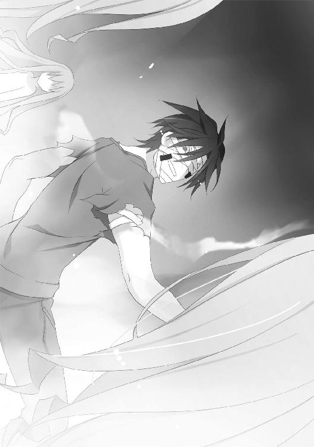
言い放ち、切ろうとするも。
『──トレーラーの座標はこっちで追ってる......そのケータイを手放さないで......』
まだ若い女の声が告げた。つい苛立ちを憶えるくらい、ボソボソとした声だった。
『私が誰かは言えない......でも今は、あなたがを守る手伝いをする......』
ハルキヨは目を細めた。
この状況で、正体不明の人物が唐突に協力を申し出る──。
その意味を、ハルキヨは頭の中で素早く繙いていく。
「誰かは言えないだと？ ──てめぇのことは知ってるぜ。目ぼしい虫憑きは大体把握してるからな。特環の高位虫憑きを知らねぇとでも思ったのか？」
『......！』
通話の相手が息を吞んだのが分かった。
「だが特環とはいえ、土師圭吾の命令じゃねぇな？ ヤツは今それどころじゃねぇし──さっきまでそこにはこんな古臭ぇケータイなんて置いてなかった。この状況で俺に気づかれずにケータイを置いていけるような虫憑きを、俺は知らねぇ。つまりそれをやったのは特環でもないし、〝むしばね〟でもねぇってことだ」
『──』
相手は無言だ。しかしかすかに漏れる吐息に、焦りと緊張が滲んでいる。
「〝コノハ〟──てめぇ、俺の知らねぇ連中とつるんで、何か企んでやがるな？」
ハルキヨがついに相手の名前を口にすると、通話が切れた。
たった数秒で正体を看破され、焦ったのだろう。ハルキヨは舌打ちし、拾った携帯電話をポケットに押し込む。
「即切りしてんじゃねぇよ、雑魚が。こんな小物が自分の意思で動くとは思えねぇ。──〝コノハ〟をそそのかして操ってる親玉がいるな」
あらためて正面に向き直ると、〝Ｃ〟の分身たちが虚空に視線を彷徨わせていた。
「だが相手は〝Ｃ〟だぜ？ 盗聴と逆探知で、さっそく俺の仲間と判断されただろうな」
軽口を叩くハルキヨだが、眼前で驚くべきことが発生した。
彼を取り囲む妖精のうち二体が、忽然と姿を消したのだ。
遠方に向かって、街灯が一直線に消えていく。
「ああっ？ 誰かを追っていったのか？ ケータイをここに運んだヤツか？ 俺を差し置いてまで追いかけるっつーことは、そいつも一号指定──いや、そりゃあねぇだろ」
考えを巡らせるハルキヨに、残る二体の妖精が向き直った。
気を取り直したように輝きを放つシーアゲハたちを見て、ハルキヨは嗤う。
「誰と追いかけっこしてんのか知らねーが──プライドが傷ついたぜ。本体を見せもしねぇクソガキが、ナメてんじゃねぇぞ」
唸るハルキヨの全身が、深紅の炎に包まれた。
2.06 ハルキヨ Part.6
地上から天に向かって、金色の雷が吹き上がった。
燃える熱球と化したハルキヨは、真横に跳んで雷をかわす。さらに高速道路を埋め尽くすシーアゲハたちに向かって、両腕を振り払った。
「はっはぁー！」
ハルキヨの〝虫〟──猛炎のオオエンマハンミョウが高速道路を吞み込んだ。アスファルトが一瞬にして液状化し、真っ赤に灼けた砂利と水蒸気の嵐が吹き荒れる。
分断された道路の端に着地する、ハルキヨ。
先ほどまで立っていた地面は消滅し、シーアゲハと妖精の分身も消え去っていた。
だが──。
「めんどくせぇな」
ニヤリと嗤うハルキヨの足下に、金色の電流が集中した。
導火線のように電気の糸が四方から集まり──新たな雷がハルキヨを貫こうとする。
跳躍して雷を避けるハルキヨだが、無数のシーアゲハに回り込まれた。シーアゲハ同士が弾けて繫がり、電流を らせる檻に変わる。
らせる檻に変わる。
ハルキヨは熱波に乗り、檻が狭まる寸前に隙間から脱出する。
「炎と電流じゃあ相性が悪ぃな。どっちの攻撃も素通りだ」
受け身を取って立ち上がり、炎で身を包みながら高速道路を走り出す。
トレーラーが去った方角を目指すハルキヨだが、前方をしつこくシーアゲハが塞いだ。
左右に素早く跳びながら、雷や金色の檻をかわしていくハルキヨ。
「だからこそ、まともにやり合う気はねぇぜ。電力の供給と通り道に不自由しねぇ都会で、しかも人格を捨てて能力の限界もねぇような化けモンを相手にしてられっかよ」
ハルキヨは身を屈めた。自らを火球と化し、ミサイルのように地上から飛び立つ。
高速道路を跳び越え、両脚から道路脇の高層ビルの壁に着地する。衝撃でビルの壁全体のガラスが吹き飛び、真っ赤に燃えたガラスが溶けて地上に降り注ぐ雨となった。
〝Ｃ〟がハルキヨを追いかけた。
金色の導火線が地上からビルへと奔り、一撃必殺の威力を秘めた雷が放たれる。
「本体の居場所さえ分かれば、やりようもあるんだがな」
ビルの壁を蹴り、雷をかわす。今度は隕石のごとく、アーケード街の天井を突き破って地上に降り立つ。着地の衝撃で地面が陥没し、周囲の建物が放射状に砕け散った。
アーケード街に並ぶ看板が次々と点灯し──金色の雷が商店街を貫いた。ハルキヨは間一髪で直撃を避け、また高層ビルの横っ腹に跳び移る。
真っ赤に燃え盛る火球と、それを追いかける黄金の妖精とシーアゲハ。
両者の追いかけっこが、赤牧市の街を次々と破壊していく。
「〝Ｃ〟の本体は、大きな電力の供給源のそばにいるはずだ。ヤツの抱える力と情報量を支えるにはハンパな容量じゃ足りねぇからな。特環の〝要塞〟にいなかったってことは、民間の発電所を乗っ取りでもしたか？」
次々と市街の中を飛び回りつつ、ハルキヨは冷静に考える。
ポケットから着信音が響いた。携帯電話を取り出すと、メールが届いていた。
『南西十二キロ地点を南下中』
を乗せたトレーラーの現在地だろう。
現在も移動中ということは、まだ〝Ｃ〟の手に落ちていないということだ。
「逆に言やあ、〝Ｃ〟にとっちゃじっくり本体捜しをされたくねぇはずだ。だからこそ、この撤退戦で自分の敵をまとめてぶっ殺してぇところだろ。大きな作戦を終えたばかりで、今、疲弊してねー虫憑きなんていねーからな」
自分も含めて、だ。
ハルキヨが〝眠り姫〟との死闘で受けたダメージは、決して軽いものではない。
今もわずかに息が上がりつつある。普段なら、この程度で疲れることはない。
「自分で言っといて何だが、マジで負け戦だぜ。こんな状況で〝Ｃ〟にダメージを与えられそうなヤツっつったら、電圧の塊にすぎない分身でさえどうにかできるような──」
〝眠り姫〟、アリス。
あるいは──触れるもの全てを破壊する、〝ふゆほたる〟。
その名を呟きそうになり、ハルキヨは口をつぐんだ。
「どっちにしろ本体を叩かねーかぎり意味ねーか。それに俺が今、〝Ｃ〟とやり合う意味もねー。──俺の遊びには、利用させてもらうけどな」
ハルキヨの今の目的は、〝Ｃ〟と戦うことではない。
〝虫〟や虫憑きなどどうでもいい彼は──自分が気に入らないと判断した相手に、しつこくつきまとうほうが大事である。
「まだ序盤しか見てねーんだ。まだまだ死にたがる理由には程遠いぜ、死にたがり野郎」
を乗せたトレーラーを追いかけ、広い公園に降り立つハルキヨ。
すると、いっせいに大勢の〝蘇生者〟が彼を取り囲んだ。
「はっは、ちっとは頭使って先回りしてきたか？ だが──ナメられたもんだな」
ハルキヨは構わず中央突破をはかる。
「どれだけ疲れても、てめーら雑魚どもに止められるほど落ちぶれやしねぇよ」
非常事態でなければ、父子がキャッチボールでもしていそうな芝生の上だ。都会の真ん中とはいえ、この伝導体のない場所で〝Ｃ〟の雷を恐れることもない。
火球となって加速するハルキヨに向かって、〝蘇生者〟たちが突進した。
それぞれの〝虫〟ではなく、生身のままで、である。
「......なんのつもりだ、てめーら。死にてぇのか？」
ハルキヨは真正面から飛びかかった人々を、熱波で弾き飛ばす。
しかし怯むことなく、今度は背後から次々と突っ込んでくる〝蘇生者〟たち。
「ちっ──」
振り向いて、また振り払おうとするハルキヨの視界の中で──。
金色の閃光が奔った。
ハルキヨに飛びかかる〝蘇生者〟たちの間を──空中放電が届くギリギリの距離を保って飛びかかった彼らを次々と伝って、電撃の糸がハルキヨに届いた。
「ッガァアアアアアッッッッ！」
視界が金色に染まり、ハルキヨの全身が衝撃に包まれる。
それでも直撃を避けたのは、彼の反射神経の賜物だった。危険を察知して飛び退いたものの、地上から伸びた雷の余波がハルキヨに触れていた。
人体は電流を通す。
〝Ｃ〟が〝蘇生者〟たちを直線上に並べて、導線の代わりにしたのだ。
「──ッッ......！」
髪を焦がし、全身の皮膚を真っ黒に煤けさせたハルキヨの身体が傾く。
トドメとばかりに、残った〝蘇生者〟たちが彼に飛びかかろうとした。
だが、その動きがピタリと止まる。
彼らの表情に──怯えの色が浮かんでいた。
「──だせぇ戦い方してんじゃねーぞ」
倒れる寸前で持ちこたえて、〝蘇生者〟たちを睨みつける双眸。
炎の魔人の燃える瞳が、意思なき〝蘇生者〟たちを金縛りにした。
「向かってくるなら、てめぇの力でかかってきやがれ──」
ハルキヨを中心に吹き荒れた熱波によって、〝蘇生者〟たちが後方に吹き飛んだ。
「簡単に道具扱いされてんじゃねーぞっ！ このくたばりぞこないどもがぁっ！」
吼え、ハルキヨは再び燃える熱球と化す。
「てめぇらが生きてきたのは、どこかの誰かに使い捨てられるためか？ そんな中途半端な人生送ってやがるから、ンな情けねぇザマ晒してんだよっ！」
一面の芝生を灰に変え、柵や電灯を溶かし、公園の敷地から飛び出す。道路に停車した自動車を潰し、建物を押し倒し、街路樹を一本残らず炎上させる。
「〝Ｃ〟よりもてめぇらのほうがムカつくぜ......！ マジの本気で生きてやがったなら、欠落者になったり死んだ程度で他人に屈服してんじゃねぇぞ──」
さらに襲いかかる〝蘇生者〟たちを打ち倒しながら、トレーラーを追いかけ──。
転倒する。
両脚の痺れが、ハルキヨを頭から郵便ポストに突っ込ませた。
「ぐぅっ......！」
〝Ｃ〟の電撃は、かなりのダメージをハルキヨに与えていた。
直撃ではないとはいえ、かなりの高電圧に身を晒してしまったのだ。意識を保つことすら困難で、身体に残る痺れは簡単には抜けない。
「──やっと〝災難〟らしくなってきたじゃねーか、はっはー！」
しかしハルキヨは勢いよく立ち上がり、その場から離れる。
直後、〝Ｃ〟の雷が郵便ポストを襲った。
焦げた毛先や顔のテープをボロボロと落としながら、ハルキヨは移動を続ける。そうしなければ、一秒で今度こそ全身を炭にされてしまう。
「おお、壊れてなかったか。俺に似て頑丈だな」
着信音に気づき、ポケットから携帯電話を取り出す。
『南に五キロ』
ヒビ割れた液晶画面に、トレーラーの現在位置が表示されていた。
両者の距離が、確実に縮まりつつあった。
ハルキヨが速いというよりも──トレーラーの速度が遅いのだ。嫌な予感がした。
「俺としちゃあ、このまま〝Ｃ〟を連れてって利用したいところだが──そうも言ってられそうにねぇな。いったん〝Ｃ〟を撒くか？」
〝Ｃ〟の分身である妖精やシーアゲハと、次々と姿を現す〝蘇生者〟たち。
それらを連れたままトレーラーと合流することに、危惧を覚える。
トレーラーの速度が遅いということは、を守る梅や遥香たちが苦戦しているということだ。そこへ大勢の追っ手を引き連れていくのは自殺行為である。
「──いや、あり得ねぇ。遠回りなんかしてる間に、梅と遥香がやられちまったら面白くも何ともねぇ。あの死にたがり野郎と遊ぶどころじゃなくなっちまうぜ」
熱波に乗って走り続けながら、重苦しい息を吐く。
「つーか......もう、撒こうとして撒けるとも思えねーしな」
〝眠り姫〟との戦いで受けたダメージが抜けないまま、〝Ｃ〟の雷を受けた。
そんな状態で、気に入らないという理由だけでを守る必要があるだろうか？
「〝Ｃ〟は死にたがり野郎を殺す気はなさそうだ......今は退くか？」
今は潔く諦め、体力の回復を待ってから、あらためてを捜すべきだ。
頭をよぎった、そんな考えを──ハルキヨは笑い飛ばす。
「それでもって、また何年も探し続けるってか？ ──アリスの時みてーに」
歪んだ口元から、炎の欠片が零れ出した。
「冗談じゃねぇぞ。俺は本来、しつこい上に気が短けぇんだ」
覚悟を決める。
すぐにでもトレーラーに追いつき、〝Ｃ〟や〝蘇生者〟を追い払いつつ、本来の目的であるとの罪比べを心ゆくまで楽しむ。
たとえ──秘書が言う安全な場所とやらに辿り着くまで、延々と〝Ｃ〟からを守ることになっても、である。
それがハルキヨという人間が、人生を最大限に楽しむための唯一の道だ。
彼の頭には、それら全てを全うするイメージが──。
「俺はやりたいことやって、余裕で生きるんだよ。邪魔すんじゃねぇ──」
まったく、浮かばなかった。
疲労とダメージが積み重なった身体が、ひどく重い。
それどころか目眩を覚えて、一瞬、視界が歪んだ。
一筋の光明も見えないような、そんな状況でハルキヨができることといえば──嗤うことだけだ。
「燃えるぜ」
ハルキヨの双眸が、真っ赤に染まった。
顔に貼ったテープが燃え尽き、右の頰が揺らめく炎と化す。左腕や右足の一部も形を失い、真っ赤な炎の塊に変わった。
「はっはぁー！」
異名通り、炎の魔人と化したハルキヨが赤牧市の街を駆け抜けた。巨大なビルを突き抜け、地面を陥没させ、ありとあらゆる障害物を赤く融解させながら疾走する。
〝Ｃ〟の雷も、ハルキヨに追いつけない。
通り過ぎた後を溶岩の河に変えながら、ハルキヨは突き進む。
そうしてついに見つけ出したトレーラーは──。
「ハルキヨぉっ！」
荷台の上に立つ梅とともに、大勢の〝蘇生者〟によって取り囲まれていた。
あと少しでもハルキヨが到着するのが遅れたら、間に合わなかっただろう。
いや──すでに〝Ｃ〟の手中にあるといっていい。
「チンタラしてんじゃねーよ、梅。もう追いついちまったじゃねーか」
「無茶言わないでよおっ！ こんな狭い道でスピードなんて出せるもんかっ！ ──って、ハルキヨ、その顔......！」
追い込まれた末に、やむなく選んだ逃げ道なのだろう。トレーラーが停車していたのは、国道ですらない団地の間を走る小道だった。
「だったら、戻るか」
「えっ？」
ハルキヨは全身から炎を噴き出した。突き上げた腕に、彼の〝虫〟であるオオエンマハンミョウの形をした業火がまとわりつく。
「それは俺のモンだ。──返しやがれ」
トレーラーに向かって、腕を振り下ろす。
巨大な炎のオオエンマハンミョウがハルキヨの腕から飛び出し、真上からトレーラーに向かって突っ込んだ。周囲を囲んでいた〝蘇生者〟たちを吹き飛ばし──それでも収まることのない炎が、屋根にいる梅ごとトレーラーを吞み込む。
「ぎゃあああああっっ！」
梅の悲鳴が、熱波と衝撃によってかき消された。
膨大なエネルギーがトレーラーを包み、舞い上がらせ、上下の感覚もない世界へ誘う。
視界が真っ赤に染まった空間で、ハルキヨの頭によぎったのは──。
──あの力には......意味があると思うの。
まただ。
いつぞやの〝眠り姫〟が語った、ハルキヨに対する評価だ。
「......意味なんて、ねぇよ」
嗤って呟くハルキヨの頰から、炎が消え去った。火を象るタトゥが露わになり、炎と同化していた手足も元の状態に戻る。
そうして、大きな衝撃とともに、ハルキヨが降り立ったのは──。
「ぎゃっ！」
悲鳴を上げる梅のとなり。つまり、トレーラーの屋根の上だ。
そして、そのトレーラー自体は──アスファルトの堅い地面の上に着地していた。
その地面とは──。
「あれっ？ ここって......！」
高速道路の上だった。
ハルキヨが自らとともにトレーラーを熱波で持ち上げ、ここまで運んだのである。
「こ、こんなところまで運んだの？ 滅茶苦茶だっ！」
「はっはー！ さすがに疲れたぜ！ おらっ、さっさと出せよ、秘書の姉ちゃん！ ここなら思う存分、ぶっ飛ばせるよなあ！」
ハルキヨが屋根を蹴ると、思い出したようにトレーラーが急発進した。
その頭上に、金色の輝きが生まれた。
「いい加減、分かったみてぇだな。ただの追いかけっこじゃ、俺は殺せねぇぞ」
ハルキヨは空を見上げ、ニヤリと笑う。
「結局、てめぇはお得意のソレをやるしかねぇんだよ、〝Ｃ〟」
雲間から現れたのは、神々しい大神殿。
その姿を見て、ハルキヨは屋根に空いた穴から、荷台の中に飛び降りる。
得体の知れない機械だらけの車内で、そいつはまた目をつぶっていた。
「お帰りくらい言ったらどうだ、死にたがり野郎？ 閻魔様のご帰還だぜ」
の胸ぐらを摑み、ハルキヨは双眸を赤く燃やす。
「第二ラウンドだ。寝たフリなんかさせねぇぞ？」
2.07 ハルキヨ Part.7
ハルキヨは己の人生を呪ったことはない。
ただ、それが自分の人生なのだと悟っていた。
最初にそのことを理解したのは、まだ幼い頃。
出生時の火災事故で出生記録も焼失し、身元不明となったハルキヨは児童養護施設に引き取られた。彼は十歳頃まで、そこで育つことになる。
旧いホテルを改築したその施設は、身寄りのない児童の保護を目的とした場所だった。職員の少なさに反して児童の数が多かったのを憶えている。
職員、児童ともに良い人間と悪い人間がいる。そんな生活環境にハルキヨ自身は不満はなかったし、どうせどこに行っても同じだと分かっていた。
「お前、しょーらい何になりたい？」
そんなことを毎晩のように語ろうとする同室の友人がいた。
そいつはハルキヨと同じくらいの年齢で、彼らにあてがわれた部屋に忍び込むのが癖の妹もいた。兄妹ともに天然パーマが特徴で、肌の色が濃いのも同じだった。
「ハルはだいとーりょーになるよ！」
ハルキヨが何か言おうとすると、それを遮って代わりに答えるのも妹の癖だった。
「ケンカつえーしな！」
「頭もいーよ！ すごく偉くなって、世界せーふくするよ！」
ハルキヨは施設内でも目立つ存在であり、天然パーマの兄妹は何かと彼のそばをついてまわるのが日常だった。
そんな友人の顔が歪んだのは──。
ごく当たり前のように降りかかった〝災難〟の中だった。
「──ハル......！ くるしいよ......！」
連続放火犯の気まぐれによって引き起こされた事件だった。
それまで小火を出して満足していたそいつが、たまたま見つけたのだ。
よく燃えそうな、大きな建物を。
「ハルぅ......！」
実際、その児童養護施設はよく燃えた。
あっという間に火が燃え広がり、夜中なのに施設内は昼間よりも明るくなっていた。古い建築物には満足な消火設備がなく、一階を吞み込んだ炎は次々と上階を浸食した。
そんな中、ハルキヨは──。
「ハル......！」
「ハル君......！」
年上や年下の児童や、さらには大人の職員までも率いて灼熱地獄を進んでいた。
まだ火の及んでいない場所を探し、慣れ親しんだ我が家の中を彷徨う。気を失った子供を保護し、パニックになる大人を宥め、絶望して立ち尽くしそうになる家族たちを大声で鼓舞しながら、脱出口を探し続けた。
「ハル......ハル......」
そんな彼のそばには、気絶した妹を背負った天然パーマの友人もいた。呪文のように彼の名を呼び続ける友人の声は一生、耳に残り続けるだろう。
諦めることなく進むハルキヨについていく人々の数が増えていき──。
ある時を境に、減り始めた。
焼け崩れた天井に巻き込まれ、さらに煙に巻かれ、人々が次々に倒れていく。
先頭を歩くハルキヨは、それでも必死に逃げ道を探しつつ、一行に声をかけ続けた。
そうして、ついに希望を見つけ出す。
逃げ込んだ部屋の窓から、ハシゴ車に乗った消防隊員と目が合ったのだ。
ハルキヨは歓喜して背後を振り返り──表情を消した。
そこには、炎の壁しかなかった。
窓の外から、消防隊員が唯一の生き残りに向かって手を差し伸べていた。
「君......！ 早くこっちへ！」
そういうものなのだろう──。
炎の熱さを忘れて急速に冷え切っていく心を抱えて、ハルキヨは窓に向かった。
この世界には運が良い者と、悪い者がいる。
優しくも厳しくもない、ただの可能性に満ちているだけなのだ。不幸にも人生に終止符を打った彼らの代わりに、どこかで誰かが幸運に見舞われているのだろう。
ならば自分は、幸運な人間として生きていくだけだ。
そう思い、彼は幸せを享受した。
生き残った彼は幸運にも別の施設に引き取られ、幸運にも学校にも通えて、興味を抱く異性と出会ったりもした。
「ねえ、君。もっとちゃんと学校来てよ」
特に目立つような美人でもなかった。
同じクラスに所属する女子で、気の強そうな眉と三つ編みが特徴だ。真面目そうで、中にはかえって反感を抱く者もいそうな模範的な人物である。
「同じ班のコに迷惑がかかるんだからさあ。調理実習とか」
そう言って彼の机にガラの悪い蹴りを入れられ、第一印象が三秒で変わったのを憶えている。見た目ほど真面目な人物でもないらしかった。
「君、ジャガイモ持ってくる担当だったでしょ。ジャガイモなしのカレー食べさせられた友達が泣いてたんだけど、どう落とし前つけんの？ おい、コラ。──えっ、泣いてない？ タマネギ？ うん、いいからアンタは黙ってて。もうコレ後戻りできないから」
一方のハルキヨはというと、よくいる不良少年だった。
体格が良いせいでよく威勢の良い男子に絡まれ、勝ったり逃げたりしていた。授業が退屈で、〝災難〟探し──密かに行っていた趣味のために学校をサボることも気にしない。後に長い付き合いとなる久瀬崎梅と出会ったのも、その頃だ。
「調理実習だけじゃないのよね。文化祭の準備だってさあ、一人だけサボって悪いと思わないの？ ......勘違いしてゴメン......。みんなも塾とか部活あるんだよ？ それなのに君だけ──えっ？ ちゃんと謝ったでしょ。全然さりげなくないし。い、いいからアンタは黙っててってば！ 私、間違ったこと言ってるかなあ？ 耳が赤いって、はあ？ 今、そんなの関係ある？ 彼がこんな調子じゃ、修学旅行だって──」
彼女を意識したのは、そんな些細な出来事からだった。
そして彼女と別れたのは、それから間もなくのことだった。
ハルキヨは誰かと別れる時、必ずといっていいほど真っ赤に染まった世界にいる。
「──」
燃え盛る長方形の箱。
つい数分前まで、山道を走る大型バスだったものだ。
後の報道では、対向車の無謀運転とバスの運転手による脇見運転が原因とされた。修学旅行中の学生を襲った悲劇は、生存者ゼロという最悪の終幕で世間を賑わせた。
山間の車道を移動していたバスが、カーブを曲がり損ねて崖を転落したのだ。
ガソリンに引火し、乾いた木々にも火が燃え移った。上下逆さまになった車内から自力で脱出できたのは、たった一人──ハルキヨだけだった。
火傷を負い、割れた窓ガラスで全身に裂傷を負った彼は、決して諦めなかった。
バスが完全に火に包まれる直前に、数人のクラスメートを車外に引っ張り出した。その上で彼らを蘇生すべく、人工呼吸を行う。
「──」
だが、どうやっても三つ編みの少女が再び目を開くことはなかった。
こういうものなのだろう。
その場に佇み、物言わぬクラスメートを見下ろしながら、ハルキヨは悟っていた。
運の善し悪しが人生を決める世界だ。
その中にあって、ハルキヨは全く手を抜かなかった。今回も全身全霊で生き抜こうとしたし、運の悪い人々を全力で助けようともした。
その結果として、生きる者と、この世を去る者の線引きが行われただけだ。
だから、ハルキヨは何の思いも抱かなかった。
しかし、それでも──。
遠くから聞こえるサイレンの音から逃げるように、その場を後にしたのは。
自分が事故による死亡者の一人とされた報道を見ながら、それきり二度と学校や施設といった一定のコミュニティに属さずに生きるようになったのは。
たった一つの事実。
身の周りにいる人々が次々と死に、常に彼だけが生き延びるということ。
そうやって死地を乗り越えるたびに、強くなっていく自分を感じた。
まるで──炎のように。
大切な人間の運命を燃料にして、ハルキヨはますます燃え盛っていく。
もし自分が、そういう存在なのだとしたら。
彼は生きていることそのものが──罪だ。
生きているだけで、周りの人生を灼き尽くす、何よりも罪深い存在。
だがハルキヨはおとなしく認めるほど殊勝な人間ではないし、悲劇のヒーローを気取るつもりもなかった。
『悔い改めよ......』
十代半ばの頃、ハルキヨは虫憑きになった。
その瞬間も、当然のようにハルキヨは〝災難〟の最中にいた。その〝災難〟をともに乗り越えたはじめての友人、久瀬崎梅もその場にいた。
『我が器となり得る子よ......己の罪を悔い改めよ......』
いきなり〝災難〟に割り込んできたそいつは、〝浸父〟というらしかった。
虫憑きを生む原虫の一つである〝浸父〟は、穢らわしい教会に彼を誘った。すると前置きもなくそんなことを言ったのだ。
『悔い改めよ......』
ハルキヨは死にかけていたが、その言葉を聞いて逆上したのを憶えている。
「──ざけんなっ......！」
〝始まりの三匹〟どころか、〝虫〟という言葉すらろくに知らない当時のことだ。彼はそいつを神や悪魔と勘違いしていて、勘違いした上で感情をぶちまけた。
「何を悔い改めるってんだ？ 俺はただ生きてきただけだ！ それなのに、周りの連中が死んだのは俺のせいだとでも言うのか？ 全力で！ これっぽっちも手を抜かずに、あいつらを生かそうとした！ それなのに──俺に罰を受けろとでもいうのか？」
『しかし汝自身は、罰を望んでいる......』
ピクリ、と。
あの時、一ミリほど動揺を見せてしまったのは、一生の不覚である。
『他者を灼いて自らの糧とする己に、誰よりも己が罰を与えたがっている......』
「──くだらねえ」
彼はすぐに、〝浸父〟が神やその類ではないことに気づいた。
それ以下の──吐き気すら催す、屑のような存在だと理解したのだ。
「てめえでてめえ自身に下す罰なんて、ただの自殺だろうが。俺はそんなものは望んでねぇよ。罪なんて知ったこっちゃねぇと楽しく生きてるところを、虫ケラみてぇにぶっ殺されるのが罰ってもんだろうが！」
『......』
「俺は死なねぇぞ。どんなことをしても......どんな卑怯な手を使っても、意地でも生きてやる。それでも罰を下そうってんなら──そいつらも灼き尽くして生きてやる！」
吼えるハルキヨに、〝浸父〟が一瞬、怯んだように見えた。
「俺が生きてるかぎり──俺が生きてるのは罪じゃねえ」
ハルキヨの燃える双眸を見て、そいつが嗤った。
『──力が欲しいか？』
その問いに、何と答えるか──ハルキヨの答えは決まり切っていた。
何をしても生き延びると誓ったのだ。自分の力や頭はいくらでも使うし、利用できるものは何でも利用する。それがたとえ──彼が望まない、ゴミのような力であってもだ。
『望むなら、与えよう......我が器となり得る、王の素質を持つ者よ......』
かくしてハルキヨは、虫憑きとなった。
その後、彼は自分に罰を与えようとする存在を、自ら探すようになった。
いずれ〝災難〟として降りかかり、関係のない人間を巻き込む前に──自ら、自分を殺しうる敵を追い求めた。
自分が生きるために。
死なないかぎり、自分の生は罪ではないと証明するために。
〝虫〟や虫憑きたちの戦いなど、関係なかった。
それなのに、どういうわけか──。
虫憑きになった日を境目に、彼は虫憑きたちの戦いに巻き込まれるようになった。
「せっかく......〝ハンター〟から、逃げ切ったのに......」
虫憑きから得た、次の〝災難〟の可能性もまた虫憑きだった。
彼に罰を与えうる虫憑きを探す途中で、またもや〝始まりの三匹〟と出会った。
やはり炎に吞まれ、住民のほとんどが虐殺された小島での出来事だ。
あの島の名前は、確か──青播磨島といったか。
「〝ハンター〟は......虫憑きだ......」
そう言ったのは白衣を着た青年──彼は自らを〝三匹目〟と名乗った。
「とびきりの美人だぜ」
その情報を頼りに、最強の虫憑きだという〝ハンター〟を探した。
探し回る中で──少しずつ友人もできた。
久瀬崎梅をはじめとする、強力な虫憑きたちだ。彼らはいわゆる共通の目的を持つような仲間ではなかったが、ハルキヨとともに生きられる、紛れもない友人たちだった。
しかし彼にとっての〝災難〟である虫憑きを探す旅は──中途半端な形で終わる。
「──二人とも、死んじゃダメよ？」
今はもう忘れ去られた、流星群の夜の戦い。
肝心の〝災難〟たりうる少女はハルキヨと〝かっこう〟に笑いかけて、眠りについてしまったのだ。その戦いでも、ハルキヨを除く大勢の人々が消えていった。
「虫憑き同士の戦いも、〝始まりの三匹〟なんつーモンも知ったこっちゃねぇんだよ」
ハルキヨは、ただ〝災難〟を探し求め、先制攻撃をすることを望んだ。
「俺に罰を下すと言ったクセに、勝手に消えやがったアリスが許せねぇだけだ」
眠りについた〝災難〟──〝眠り姫〟に落とし前をつけさせるべく、彼女を探した。
その過程で、また多くの〝虫〟に関する秘密に触れることになる。
そんなものは望んでいない。
虫憑きを巡る戦いなど、心の底ではどうでも良かったのに──今や虫憑きの中で最も多くを知る存在になってしまったかもしれない。
「アリスに勝ったら、また次の〝災難〟を......」
そんな独り言を呟きながら〝眠り姫〟を探しつつも、彼女の言葉が頭を離れなかった。
──あの強さには......意味があると思うの。
ハルキヨは自分が生きるために、強くなっただけだ。
ただ、それだけなのに──否応なく、虫憑きの戦いに巻き込まれていく。
もし本当に彼の強さに意味があるというなら、彼が虫憑きになったことも意味があるのだろうか？ 知りたくもない秘密を知ってしまうことも？
そんなちっぽけな疑問は、しこりのように胸の奥に今も残っている──。
「──見たか？ な？ どれもこれも俺のせいじゃねぇだろ？」
炎の中に佇む彼は、視線を持ち上げた。
燃え盛る業火の中にもう一人──幼い少年が立っていた。
「でも、てめぇはそうじゃねぇらしい。死にたいって言うからには、てめぇはよっぽどひでぇことしてきたんだろうな。──続きを見せてみろよ」
その子供は、ボロボロの服を着ていた。
「」
ハルキヨの燃える双眸とは対照的に、少年がゆっくりとまぶたを閉じた。
2.08 ハルキヨ Part.8
彼が産まれた時に見た光は、何だったのか。
その正体は分からない。
だが、あの瞬間を目の当たりにしたのは、一人や二人ではなかったらしい。
乳児の彼を拾ったのは、小さな集落だった。女たちは洗濯や食事の準備だけをして過ごし、男たちはボロボロの衣服と同じくらい旧式の重火器を日常的に身につけていた。
まだ子供だった彼には彼らが何者なのか、はっきりと分からなかった。
ただ、何者かと争い、戦闘要員として子供に銃を持たせるのが当たり前の場所だった。時には彼と同じように、どこからか身元の知れない子供を連れてくることもあった。
「──」
数年間、その場所で成長するにつれ、彼は自分の置かれた状況を漠然と理解した。
そこは内乱に揺れる国で、多くの反政府組織があった。ゲリラとなった彼らは、やがてゲリラ同士で物資や人員の奪い合いを始め──彼もその一員として組み込まれたのだ。
彼が少年と呼べるくらいに成長した頃、集落に小さな秘め事が生まれた。
「──どうか、加護を──」
十人以上の子供が寝起きする小屋に、大人の女性が忍び込んでくるようになったのだ。
顔を隠した女性たちが、こっそりと彼を参拝していく。
「罪深い私たちに、どうか救いの光を──」
光。
彼女たちが口を揃えて呟くのは、その言葉だった。
彼の誕生にまつわる奇跡が集落に伝わり、語り継がれていたらしい。
彼自身、特に知能や身体能力が優れているというわけではない。
ただ、たまに離れた場所の出来事が〝見える〟ことがあった。
まるで、その場所に、もう一つの眼があるかのような感覚だ。
だがそのことを誰かに言ったことは、その時点では一度もなかった。
「俺の魂を救ってくれ──神の御許に導く光を示してくれ──」
秘密の参拝は毎夜続き、ついには大人の男も参拝に訪れるようになった。
いつものように狸寝入りをしていた彼だが、その晩は違った。
たまに見える遠景──離れた場所にある彼の〝眼〟が、森に潜む敵を見つけたのだ。銃火器を装備した一団が、じりじりと彼のいる集落に近づきつつあった。
彼は身を起こし、〝参拝者〟に警告した。
結果──彼らは敵の奇襲を返り討ちにし、集落は事なきを得た。
「奇跡の子よ──」
彼の〝千里眼〟は集落を救い、その日から彼らは連戦連勝を重ねた。
そうして月日が経ち──。
「──どう、か──神の御許に──」
ある日、集落はあっさりと壊滅した。
彼が警告する余裕もなく、複数の集落が結託して彼らの拠点を襲撃したのだ。
見知った小屋という小屋が火に包まれ、銃声が鳴り響く中、大人や子供たちが倒れていく。悲鳴と怒号とともに、ともに過ごした人々がすがりつく中、彼は拘束された。
彼を手に入れたのは、一連の襲撃を仕切った集落だった。
「──光よ、どうか我々を神の御許に──」
彼は小屋に閉じ込められ、また崇拝された。
どうやら加護はあったらしい。彼が何もせずとも、運が良かったのか、その集落は敵対勢力に勝利して繁栄し──。
「光を──神の御許に──行けるように──」
もっと大きな勢力によって、その集落も虐殺された。
燃える集落を背に、彼は別の集落に連れ去られて──さらに大きな力に踏みにじられる。
そんなことが、何度かあった。
何百の人間が、彼を奪うために死んだだろう？
また何百の人間が、彼を護るために死んだだろう？
十代の半ばにもなると、彼は理解した。
彼が関わった人間は、一人残らず──死んでいく。
彼に希望を語り、彼に救いを求め、幸福を願いながら、彼の目の前で死にゆくのだ。
そして死と絶望の繰り返しの果てに──。
「──光を恐れるな！」
ついに国が動いた。
当時の政権を悩ませるゲリラの信仰を、元から絶つべく立ち上がったのだ。
彼はあっさりと国に拘束され、牢獄に閉じ込められた。
そのうち死刑にでもなるだろう、と彼は楽観していた。
「──我が国に、光を──」
だが結局、何も変わらなかった。
また何らかの加護があったのだろう。彼が住まう空間が牢獄から祭壇へと変わり、為政者は独裁者に変わった。
そして数年後──格子付きの窓から見える光景が、炎に包まれた。
独裁者の施政は、よほど酷かったらしい。人道にもとる圧政を見かねた国際社会が、制裁と解放という名目で、軍事行動をとったのだ。
戦闘機が空を舞い、市街からは独裁政権の兵士による地対空ミサイルが飛ぶ。
何千の人間が、炎の中で命を落としていっただろう？
「──光を──光の導きを──」
彼は独裁者の側近に連れられ、国外脱出を試みた。
しかし、その側近もすぐに解放軍によって撃ち殺された。
血みどろの奪い合いが始まった。独裁政権の兵士と解放軍の間で、彼を奪取するべく銃撃戦が続いた。彼を手に入れようと腕を伸ばした者が、一人残らず死んでいく。
ついに最後の二人が相討ちで倒れ、彼は一人で取り残された。
死者の山の中を歩きながら、彼は正気を失っていた。血と肉の臭いが充満する中、返り血で染まった真っ赤な姿で歩く彼は──。
救いの神ではない。ただの人ですらない。
死神だ。
彼のせいで、何万という人々が死んだ。それなのに彼自身は死ぬこともできない。
「光よ──眠れ」
背後から聞こえた呟きとともに、彼は意識を失った。
薬物を投与されたのか、長い間、眠らされたようだ。
ともすれば数週間、数ヶ月、眠り続けていたかもしれない。
それほどに重い気怠さとともに、再び目を覚ました彼を迎えたのは──。
「はじめまして」
一人の少女だった。目元に浮かぶホクロが可愛らしい。
こんなにも優しく慈愛に満ちた微笑みを、彼は今まで見たことがなかった。
「怖がらないで。あなたに酷いことをする人間は、もうどこにもいないわ」
そう言って、その少女は──。
「私が、あなたのことを愛してあげる」
見る者を惹きつけて動けなくする、〝鎖の笑み〟を浮かべた。
2.09 ハルキヨ Part.9
そこは巨大な貨物船を改造した、私設の研究所のようだった。
あらゆる生物がサンプルとして載せられたそれは、まるで聖書にある方舟のようだ。
ハルキヨはその中でも警備が厳重な一室にいた。手術台のようなベッドの上で拘束された青年と、そのそばに立つ少女をみる。
「私が、あなたのことを愛してあげる」
ハルキヨの姿は、青年と少女には見えない。
当然だ。ここは青年の記憶の中──〝Ｃ〟によって精神攻撃を受けているが、かつて過ごした時の中なのだから。
「なにを安心した顔してやがる、死にたがり野郎」
ハルキヨは腕組みをして、眼前の光景をニヤニヤと眺める。
「その女は間違いなく、てめぇが今まで見た中で最悪のクソ野郎だぜ」
やっぱりこの女が、最初から関わってたのかよ──。
想像はしていたものの、の記憶という裏付けを得たことで確信に変わった。眼前の少女に対する嫌悪感が、以前よりも数倍増す。
「私の名前は、魅車八重子。分かる？ みぐるま、やえこ」
「ミッ......コ......？」
日本語の分からないは、最初と最後の文字だけ聞きとったようだ。呼吸器が彼の呟きによって白く曇る。
「ミッコ──うん、別にそれでいいわ。少しずつこの国の言葉を教えてあげる」
微笑む少女、魅車八重子と、無言の。
それは後の虫憑きにとって──否、人類史上で最も最悪の邂逅といえるかもしれない。
が誕生したことよりも、彼と少女が出会ったことこそ、本当の奇跡。
決して出会うはずのない二人が、国境を越えて遭遇してしまった。
全てが──始まった瞬間でもある。
「八重子。勝手に入るなと言っただろう」
そう言って姿を現したのは、白衣姿の中年男性だった。神経質そうな皺が目立つ。
白衣の男の隣には、もう一人いた。高級そうなスーツを着た二十歳そこそこの青年である。遊び人風の外見と厳しい顔つきが、アンバランスである。
「ごめんなさい、父さん」
素直に謝って出ていこうとする魅車八重子を、白衣の男がさらに叱りつける。
「それと私の部屋に無断で入るのもやめなさい。何やら私の論文や資料を漁ってるようだが、ろくに内容も理解できないようなものを見てもつまらんだろうに」
「はい、父さん。私程度の人間にとっては──ひどくつまらないものでした」
従順に父の言葉を復唱して部屋を去る少女を、遊び人風の青年が見送る。
「賢そうな娘さんですね、博士」
「とんでもない。私や私の部下と一言も議論ができないような......それなりの教育を施したのに......まったく、とんだ無駄をした......でもまあ馬鹿な娘ですが、この対象を含めて後のサンプルの世話くらいはさせられますから......できるだけ外部の人間を使いたくないという都合上......それくらいは役に立ってもらわないと......ええ......」
を凝視しながら、ブツブツと呟く白衣の男。
「またまた、ご謙遜を。それに美人だ。細目が──切れ長の目元が博士と似ていますね」
お世辞を口にする青年に、ハルキヨは見覚えがあった。
正確には、彼によく似た笑顔を見たことがあると言ったほうが正しい。
「てめぇを知ってるぜ──円卓会会長、一之黒涙守」
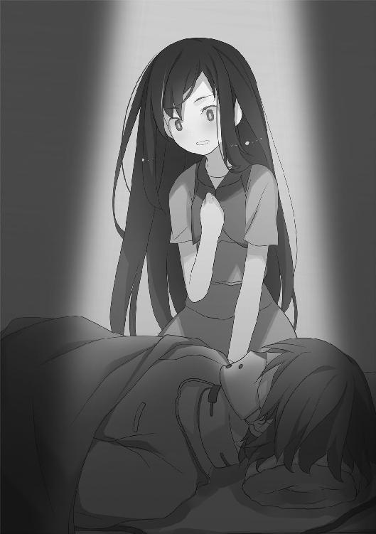
唸るように言い、睨みつけるハルキヨ。
しかし彼の怒りを孕んだ視線も、眼前の二人が気づくはずもない。
「この人物が......例の？」
「ええ......今は麻酔をかけておりますから、暴れたりはしません......急に直接サンプルを確認したいと言われたので、完全に効くまではまだ少しかかるでしょうが......」
「私じゃありませんよ。出資に同意した会員の方々です。私はまあ、名目は会長ではありますが、所詮はただの若造の使いっ走りでして......」
「いいえ、貴方の政財界におけるコネクションがなければ、この研究所の建造すらも実現しなかったでしょう......貴方も結局は、〝不死〟に興味がおありなんでしょう......？」
〝不死〟。
その言葉を聞いて、一之黒青年が押し黙った。博士の言葉に同意も否定もせず、静かに手術台の上に横たわるを見下ろす。
「〝誰だって、どこかで繫がってる〟──」
ハルキヨは顔を歪め、押し殺した声で呻く。
頭に浮かんだのは、銀色の槍を操る少女の笑顔だった。
「確かに、そうだな。──てめぇはこんな形で、〝最初〟から繫がってたわけだ......」
この場にいない少女に向かって、毒づく。
ハルキヨの目の前にいる、一之黒涙守という青年。
彼は自分の行いが、どのような結果をもたらすかを想像だにしなかったのだろう。
予言者でもなければ、当然のことだ。しかし──。
「クソ親父。てめぇのしたことのツケは......てめぇの娘が払おうとしてるぜ」
ハルキヨの罵倒に気づきもせず、一之黒涙守はから目を離さない。
「本当に──この人物が、〝不死〟の可能性だと？」
「ええ、彼の周りで大勢の人間が死にました......それも、何度も......最後は数万にも及ぶ死者の中で生き残り続けました......現地の人間は彼を奇跡の子と呼んでいたようです......実際、彼がそばにいる間は、周りの人間が生存率を高め、繁栄するといった事態も確認しており......まあ、彼以外の人間は限界があり、結局は死んでいくわけですが......」
「それだけでは、何と言うか──はっきり言ってしまうと、眉唾のような話ですね」
「彼のこれまでの人生における〝災難〟と、それを生き延びる生存率の計算をご覧になられたでしょう......？ 明らかに確率的な可能性の限界を超えています......」
「死、というものに対する抵抗力──生を望む精神力が、肉体やその他の事象に干渉して生命力を高める。それが博士の論文でしたね」
「生への願望だけではありません。自らの願いを全うしようとする意思と言うべきか......それを信じて、円卓会は研究資金と研究の場を提供してくださったんでしょう？」
「ええ、自虐にもなりますが、地位や名誉に飽きた金持ちは〝不死〟というものに恋い焦がれる。──なぜでしょうかね、古来からそう決まってるみたいだ」
「......」
「時の権力者たちが〝不死〟を求めるたびに騙され、まがい物を摑まされていると知っていながら──それは変わらない」
「......失礼ですが、貴方はご自身が出資した研究が失敗することを望まれておられる？」
「まさか」
ようやくから目をそらし、一之黒涙守が出入り口に向かった。
「ここで何をしようと、当局や敵対勢力には干渉させません。──どのような形であれ、我々は結果を求めていますよ」
「ありがとうございます......」
一之黒涙守と白衣の男が部屋を出ると、周囲の光景が目まぐるしく変化を始めた。
早送り映像のように、閉じられた研究所の内部での出来事が過ぎ去っていく。もちろんそれらは自身が体験したことの追体験なのだろう。
「歴史上、人は何度も〝不死〟を求めてきた──か。くだらねぇ」
ハルキヨはその光景を眺めながら、吐き捨てる。
「おい、死にたがり野郎。ようはてめぇは〝災難〟続きの末に、昔から何度も繰り返された金持ちと詐欺師のお遊びに巻き込まれたってことだろ？」
に対して行われたのは、研究という名目の拷問だった。時に傷つけられ、時に精神的苦痛を強いられ、時に欲望の対象になりそうな物品を目の前に何日も拘束された。
心身ともに消耗した彼は、記憶も曖昧のようだ。ハルキヨの目に映る光景は時にノイズがかかっていたが、鮮明な部分もあった。
──〝〟......貴方はそう名付けられたわ。も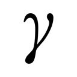もいないのに。
魅車八重子。否、ミッコという少女との対面だけは、はっきりと記憶に刻まれていた。
研究者たちとの面会の合間に、身の回りの世話をするために訪れる少女。彼女はと面会するたびに、彼を〝教育〟した。
彼の生存本能をくすぐる言葉を囁き続けたのだ。
──生まれ故郷を思い出して。
ミッコの父親が施す、どの実験よりも深く心を抉る囁き。
見る者を惹きつけて離さない〝鎖の笑み〟が、の拒絶を許さなかった。
──貴方には、もう何もない。それでも、望むでしょう？
は彼女の言葉を聞く度に、一滴だけの涙を零すのだ。
今はもうない故郷を、思い出す。
父も母もなく、隣人すらも一人もいないであろう、名も知らぬ土地だ。
──それでも、そこに帰らずには......死ねないわよね？
に語りかける少女は、時に彼以外の被験体の話をすることもあった。
複数いるらしい別の被験体も、同じような環境にいるようだ。魅車は時にそれらの食欲を煽り、時に支配欲を煽り、時にと同じように郷愁をかきたてたという。
その後、ミッコはサンプルのいくつかを解放し、研究所を逃げ出した。
──これから他の家族を逃がしてあげるけど......貴方は逃がしてあげない。
去り際、ミッコはに別れの言葉を告げた。
聖母のような微笑みを浮かべ、囁くように言ったのだ。
──貴方は、特別だから。
は号泣した。
自分を取り巻く人生や人々を呪い、怒り、憎しみ、絶望し、悲しんだ。
そうして、今まで彼を制御していた何かが──砕けて散ったのだ。
「〝始まりの三匹〟が生まれる前に、てめぇは......」
ハルキヨは、その光景を目の当たりにして、ポツリと呟いた。
「虫憑き、だったのか？」
突如として出現した〝それ〟が、研究所を破壊し尽くそうとしていた。
人の眼球のようなものを大きくし、堅い皮膜で覆った物体。
「いや、こいつは──〝虫〟なのか？」
宙を舞いながら光を放って施設を灼くそれを、ハルキヨは知っていた。
「あの流星群の戦いの時も、気になってはいた。〝大喰い〟が使う〝眼〟......明らかに人間の目ン玉で、しかも躰の一部しかない〝虫〟っつーのは、それまで見たことがなかったからな。だが、それも〝大喰い〟が生んだ分離型の〝虫〟だろうと思ってたが──」
大型の貨物船を模した研究所が、無残に破壊されていく。
白衣の男──魅車八重子の父親も、破壊から逃れられず絶命するのが見えた。
「鶏が先か、卵が先か。俺も含めて、鶏──〝始まりの三匹〟が先だと思っていたが」
ハルキヨだけではない。
〝かっこう〟や、彼に関わる人々も同じだったに違いない。
だからこそ、虫憑きが生まれる世界を変えようと、〝始まりの三匹〟を倒すことを最終目的としてきたのだ。そのために、大勢の虫憑きが倒れてきた。
しかし──。
「卵が、先だったのか」
暴走するが、研究所を徹底的に破壊していき──。
「──」
光が、視界を包んだ。
何もかもが一つに混ざり、その全てを赦すかのような暖かい光だ。
ハルキヨはこんなにも美しい光を、生まれて初めて見た。
光が消えると、そこは船上だった。
誰かが誰かと戦っている。
「──〝不死〟を求め続けて、何千年だって？ そりゃあマグレの一つも起きるぜ」
戦っている者たちが何者か、ハルキヨは何となく察した。
解き放たれつつある〝始まりの三匹〟と、解放を阻もうとする虫憑きたち。
「本物かどうかも分からない、得体の知れないモノを掘り当てちまったわけだ」
その場にいなかったハルキヨは、そう理解するしかない。
ただ、の目と記憶を通して──。
「うぉ──あぁあぁあああっっ！」
吼える、と。
「ルイ、お前の言う通りだ。ここに在るものは全て、ここで終わらせなければならない」
ゴーグルをつけた少年の死に様と。
「──その通りだ」
うなだれる一之黒涙守と。
「てめぇらのせいだろぉがぁあああっ！」
「ここで別れましょう」
見覚えのある顔と、魅車八重子が決別する瞬間を──。
世界が変わった瞬間を、見届ける。
〝虫〟という超常の存在が、少年や少女たちの中で生まれ続ける世界だ。
「なるほど──てめぇが何者かなんて、どう考えても分からねえってことか」
一之黒涙守の私兵に連れ去られていくを見ながら、ハルキヨは言う。
「だが、てめぇが存在するかぎり、また〝虫〟が生まれる瞬間が繰り返されるかもしれねぇってことなんだな」
それが、の罪。
彼が死にたがる理由を、ハルキヨはようやく理解した。
「確かに、とんでもねぇ罪だぜ。生きてるだけで大勢を不幸にするんだろうな」
理解した上で、彼は怒る。
「だが、俺だったら──そんなのは認めねぇぜ」
言い放つハルキヨだが、その時、異変が生じた。
「──うぉおあああああっっ！」
拘束されたが咆哮し、私兵たちを振りほどいたのだ。
その背後に、小さな人影が佇んでいた。
それは小さな女の子で──ハートと王冠のマークをあしらったティアラを付けていた。
ハルキヨは嗤い、身構える。
「自分の領域内で好き勝手するんじゃねぇ。──そう言いたそうだな」
の罪を暴く、長い旅。
それはまだ終わりを迎えないということを、〝Ｃ〟の暗い視線が物語っていた。
2.10 ハルキヨ Part.10
過去の赤牧市郊外。
吼えるの姿は、異様の一言だった。
ゴーグルをつけた同化型の虫憑き──おそらく最初の同化型であろう少年によって、は脇腹を抉られていた。今もは身体の損傷部分から、鮮血を溢れさせている。
それなのには力のかぎり絶叫し、ハルキヨを睨みつけた。
「──おおおぉおおおっっ！」
「......！」
ハルキヨを取り囲むように、無数の〝眼〟が出現した。大きな眼球を堅い皮膜で覆った異形の物体が、宙空からハルキヨに視線を集中させる。
直後、ハルキヨ目がけて、眼球からいっせいに熱線が照射された。
「こいつも昔の思い出話の続きか？ ──ンなわけねぇよな」
ハルキヨはとっさに軌道を読み、熱線の網をかいくぐる。
「その出血......治療してなけりゃ、とっくにくたばってるはずだもんなぁ！」
「うっ──ううぅっ......！」
が、ふらついた。現実ではないとはいえ、負傷を無視することはできないようだ。
の背後から、〝Ｃ〟の分身──金色の妖精が近づく。
小さな手がに触れると、青年の全身を電撃が貫いた。
「ぐあっ！ ──くぅあああぁああっ！」
が目つきを変え、再びハルキヨに鬼の形相を向けた。
〝眼〟の数が倍増した。
縦横無尽に回転しながら飛び交う〝眼〟が、熱線の雨を放射する。巨大な貨物船がケーキのようにズタズタに引き裂かれ、港の地面に底の見えない谷ができた。
「くたばった虫憑きや欠落者に残った記憶を刺激して、無理矢理に〝蘇生〟させる──」
ハルキヨは自ら炎球となって、紙一重で熱線の雨をかわし続ける。
「中央本部でやってた実験も、そうだったなあ？ あれは魅車がここで始めた実験の続きだったってわけだ！ 胸くそ悪すぎて笑えるじゃねぇか、〝Ｃ〟！」
もとは魅車の父親が始めた〝不死〟の実験を、実の娘である八重子が引き継いだ。
いや、引き継いだという言い方は正しくない。
人を実験対象とし、偶然にも〝奇跡の子〟を引き当てた父親とは違って──八重子は虫憑きという新たな人類を研究対象とし、確実にそれに辿り着こうとしたのだ。
その結果、生まれたのが〝Ｃ〟という新世代の虫憑きだ。
鶏──〝始まりの三匹〟ですら吸収し、産まれた雛ともいうべき虫憑きを何度でも卵に戻して再利用する。虫憑きとしての死である〝欠落者〟、あるいは人として死んだ者たち。それらを全て〝蘇生者〟として蘇らせるのが、超種一号〝Ｃ〟なのだ。
死を許さぬ〝不死〟を生み続ける存在。
今までにハルキヨが出会った中で、最も醜悪な虫憑きである。
「......ちっ」
数を増す一方の熱線が、ハルキヨをかすめた。自らを護る熱波の流れが乱れ、倉庫の屋根に叩きつけられる。すぐに受け身をとって立ち上がるハルキヨ。
「いいのか、〝Ｃ〟？ そのクソ死にたがり野郎は、〝卵〟なんだろう？」
地上に佇むと、その傍らに寄り添う妖精を見下ろして言う。
「いわば、てめぇにとっちゃ保険なわけだ」
妖精は答えない。
「てめぇや魅車は虫憑きが生まれ続ける世界を望んでるんだからな。たとえ何が起きても、卵さえあればまたそんな世界に戻れるかもしれねぇ。だからこそ目障りな俺は殺すが、そいつは一応確保しておきたかったんじゃねぇのか？ ──それなのに俺とソイツを戦わせたりして、俺が負けるとでも思ってんのか？ ナメてんのか、ああっ？」
妖精が無表情に腕を動かし、を電撃で鞭打った。
が苦悶の咆哮を上げ、また〝眼〟の数を増やす。
「──〝卵〟ですら、死んだらまた蘇生させりゃいいってツラだな。人格といっしょに可愛げまでなくしやがって、クソガキが」
投網のように上下左右から降りかかる熱線の網を、熱流に乗ってかわし続ける。
「だが一番ムカつくのは、てめぇだぜ。──死にたがり野郎」
倉庫の壁を蹴り、一瞬での前に立つハルキヨ。青年の胸ぐらに摑みかかる。
「いつまでいいように遊ばれてやがる。ちっとは抵抗しやがれ」
しかしは、ハルキヨを睨みながら、うわごとのように呟く。
「......殺してくれ」
「......」
「ぼくがいるかぎり、人が死ぬ──ぼくのせいで、多くの人が不幸になる......」
顔を歪めると対照的に、ハルキヨは表情を消した。
力任せに腕を振り回し、を投げ飛ばす。ハルキヨの腕力が軽々と青年を数メートルほど投げ飛ばし、崩れかけた倉庫の壁に叩きつけた。青年の身体から溢れ出した鮮血が、ハルキヨの顔面から倉庫の壁まで赤い道を作る。
「なんだ、そりゃあ。加害者ぶってんのか？」
苦悶で顔を歪めるのそばに、すかさず〝Ｃ〟の分身が移動した。
金色の電撃に打たれた青年が、〝眼〟を操ってハルキヨに熱線を放つ。
「それとも、被害者ぶってんのか？」
ハルキヨは構うことなく、に向かって悠然と歩いていく。
炎の防壁が熱線の集中攻撃を受け、激しく火の粉を撒き散らした。完全に攻撃を防ぎきれず、ハルキヨの身体が余波で引き裂かれていく。
「たった今、見たばかりだろうが。たった今、思い出したばかりだろうが。──俺たちは〝Ｃ〟の精神攻撃を受けてるんだぜ？ 今まであった辛えことをまとめて見せつけられて、てめぇの傷を抉られたばかりだろう？ てめぇの周りで死んだ連中の顔を思い出させられて、全部てめぇのせいだと押しつけられてるんだぜ？」
ゆっくりと迫る炎の魔人を見て、の顔に恐怖の色が滲んだ。
「俺も、決めつけるぜ。──てめぇは疫病神だよ。てめぇごときが生きてても何の役にも立たねぇし、目障りなんだよ。さっさと死ねよ、このクソ野郎。てめぇに生きてて欲しい人間なんて、この世に一人もいねぇよ。これが全人類の総意で、本心だぜ」
「──」
「それで──てめぇは認めるのか？」
ハルキヨの腕が、再びの胸を摑んだ。今まさに熱線の勢いに押されて、全身から血を流しながら、燃える双眸が卑屈に揺れる青年の瞳を睨みつける。
「そうと認めるなら、とっとと自分で死ねよ。──運が悪かった、何かの間違いでこうなってしまったんだ、なんてせいぜい被害者ぶって自殺しろよ。殺してくれ、なんて言って人様の手をわずらわせてんじゃねぇよ。最後の最後まで、自分は誰かに殺されてしまったなんて被害者根性出してんじゃねぇ」
ハルキヨの視界が、金色に染まった。
〝Ｃ〟の分身である妖精が、ハルキヨに向かって電撃を放ったのだ。
「それとも、自分のせいで誰かが死んだなんて、本気で思ってんのか？ そこまで加害者ぶりたいなら──死にたいなんて言ってんじゃねぇぞ」
しかしハルキヨは止まらない。力を込めての襟を締めつける。
「最期に自分の望みを叶えてください、なんて都合良いことを加害者がのたまってんじゃねぇよ。なんでこの俺が、罪人の頼みを聞いて殺してやらなきゃなんねぇんだ？ 甘えてんじゃねぇよ、クソみてぇな大量殺人鬼のクセによ」
見る見るうちに、の顔が歪んでいった。
自らの人生を思い返し、苦悩し、絶望しそうになりながらも──最終的には、ハルキヨを睨み返す。
「──それじゃあ、どうしろっていうんだ......」
かすれた声は質問のようであり、八つ当たりにも見えた。
「知ったこっちゃねぇよ」
ハルキヨは言い放つ。
「甘えてんじゃねぇよ。てめぇに味方なんかいねぇよ。何しろ、どいつもこいつもてめぇが悪いんだと決めつけてるんだからな。てめぇを恨む人間は腐るほどいても、助けようなんて物好きは一人もいねぇよ。運命すら、てめぇの敵だ」
「──」
「だが俺だったら、言うぜ。──そんなのは知ったこっちゃねぇってな」
ハルキヨはを解放し、両腕を拡げて宣言した。
「俺の人生だぜ！ 誰に何と言われようと、俺は悪くねぇ！ 加害者でも被害者でもなく、ただ自分の人生を生きてきただけだ！ 他人にどうこう言われる筋合いねぇよ！ 何と言われようと、俺は自分の人生を楽しんでハッピーになるし、したいことをするぜ！」
炎の防壁と熱線の衝突、そこに電撃が加わり、周囲は竜巻に襲われたかのようだ。倉庫が跡形もなく吹き飛び、砕けた地面の上にハルキヨと、金色の妖精が立っている。
「どうしろ？ 知るかよ！ 好きにしろよ！ 分かんねぇなら、今まで通りに他人にされるがままの人生を送れよ！ 何も考えなくていいから、楽なモンだろ？」
眉根を寄せ、がまぶたを閉じた。
「だが、てめぇが──得体の知れねぇ、奇跡だか何だかのせいで生まれた化けモンのくせして、ちょっとでも自分が悪いと思うような人間らしい心を持ってると言い張るなら......いつか俺が、てめぇを殺しに行ってやる」
「......！」
が驚いたように、両目を開いた。ハルキヨの顔を見上げる。
「あの時、もっとうまくやれたんじゃねぇか──すぐそばで誰かが死んだ時、一人でも助けられたんじゃねぇかと、ほんのちょっぴりでも一人前に罪の意識を感じていやがるなら......まずは、てめぇが生きたがらなきゃ話になんねぇだろうが」
ハルキヨは言う。
「全力で生きたいと思ってるのに、虫ケラみてぇに殺される。──それでこそ、罰ってモンだろうが？」
「......」
「何もしてねぇヤツが殺してくれだなんて、罪を認める気すらねぇクソ野郎だぜ。どっちを選ぼうが、てめぇの好きにしろよ」
が奥歯を嚙みしめた。今にも泣き出しそうな顔でハルキヨを見上げたかと思うと、すぐに身体を丸めてしまう。
子供のように。
あるいは、今さらになって、はじめて産まれた赤子のように。
震える身体を自ら抱きしめながら、青年がか細い声で呟く。
「ぼくのような人間が......生きたいと思っても──いいんだろうか？」
「ダメに決まってんだろ、死神野郎。てめぇがいるから、みんな死ぬんだよ」
即答するハルキヨの眼下で、が大きく身震いした。
いつの間にか──ハルキヨを襲う熱線が止んでいた。
「──ぐぁあぁっ！」
動けと言わんばかりに、妖精が電撃をに放った。
しかし空を舞う〝眼〟は、ピクリとも動こうとしない。
「い、いつ死んでもいいと思っていたから......今まで、耐えられた......ぐあっ！」
雷に打たれるを、追い討ちとばかりにハルキヨは殴り飛ばす。
「がッッ！」
「痛ぇか？ 苦しいのか？ ──なんだよ、さっそく生きてぇなんて欲張ってきたんじゃねぇか。マジでクソ野郎だぜ、てめぇは。今まで痛みすら知らなかったのかよ」
「そ、それでも、生きて──罰を受ければ......」
がようやく顔を上げた。その顔には弱々しい笑みが浮かんでいた。
「ぼ、ぼくのせいで死んだ人たちに、あの世で謝ることができるんだろうか......」
「少なくとも、楽に死んだヤツに謝られるよりは、気が晴れるかもな」
嗤う魔人。
その視界に映る世界が、ぐにゃりと歪んだ。
荒れ果てた港と、沈没しつつある貨物船が形を失い、ぼんやりと消えていく。
がまた両目を閉じようとしていた。その顔にはそれまでの彼とは全く異なる、不安と恐怖の色が滲んでいた。
「ひょっとして......人生というものは、とても辛いものなのか......？」
今になって、ようやく気づいたかのような台詞。
「いいや──」
ハルキヨは嗤って、軽い口調で言い放つ。
「楽勝だぜ」
血塗れで佇むハルキヨの意識が一瞬、遠のき──。
再び覚醒した時、彼は港とは似ても似つかない空間にいた。
久瀬崎梅と、榊遥香。
そして生命維持装置の中で眠る、。
高速道路を走るトレーラーの荷台に、ハルキヨは戻っていた。
「あっ、やっと戻ってきた！ 大丈夫、ハルキヨ？」
梅が真っ先にハルキヨに声をかけてきた。
〝Ｃ〟の精神汚染攻撃を、が跳ね返したのだろう。謎の液体の中に横たわったの顔は、穏やかになっていた。
ハルキヨは大きく息を吐き、その場に座り込む。
いかに現実世界ではなかったとはいえ、と〝Ｃ〟の攻撃を受けすぎた。相当の精神的ダメージを受けてしまったし、肉体的な怪我は消えたとはいえ──。
「──」
ハルキヨは自らの身体に触れ、硬直する。
血が消えていなかった。怪我もだ。
あいかわらず血塗れのままの状態で、顔を上げると──。
「こっちは大変だったよ！ ハルキヨが遅いせいで、ぼくら殺されちゃったんだから！」
そう言う梅の肩から腰にかけて切り込みが入り、真っ二つに崩れた。
「私、死んじゃった......ハルキヨのせい......」
遥香も胸元に大きな穴が穿たれ、口元から血の糸が垂れていた。
だがハルキヨは慌てたりはしなかった。
冷静に自分に残された力と、異様な現状を分析し──。
「マジぃな......俺だけ、〝Ｃ〟の領域から抜け出せなくなってやがる」
不敵に嗤った。
2.11 ハルキヨ Part.11
特環の地下要塞で、〝眠り姫〟との戦いから半死半生で生還した。
思えば、その時に体力の大半を使い果たしていたのだ。
そこから地上に撤退し、を乗せたトレーラーを守り、〝Ｃ〟の電撃を受けた。
また〝Ｃ〟の精神汚染攻撃による、過去の世界でもダメージを受けすぎた。
いかにハルキヨといえど──ここまで連戦に晒されたのははじめてである。
「なんで助けてくれなかったのさ、ハルキヨ！ 死にたくないよお！」
「ハルキヨ......ひどい......」
身体が半分になった梅と、血の涙を流す遥香がハルキヨにすがりついた。
「......」
ハルキヨは燃える掌で遥香の頭を摑み、梅の顔面に叩きつける。
「──ぎゃぁああっ！」
絶叫する二人を尻目に、ハルキヨは跳躍した。
天井に空いた穴から飛び出し、荷台の上に立つ。
「まあ、あいつらにかぎってマジで死んだりはしてねぇだろ」
を運ぶトレーラーは高速道路を走っていた。ただし平坦な地面はどす黒く、すれ違う建物は紫色で、広大な空は緑色に染まっていた。
一目で現実とは異なる異空間だと分かる。
「そこらの虫憑きが仕掛けた精神汚染なら、気合い入れりゃ抜け出せるんだが......さすがに長時間、遊びすぎたか。俺の心のクセに、すっかり〝Ｃ〟に染まりやがって」
周囲に〝Ｃ〟の分身や、〝蘇生者〟らしき姿はない。
消耗したハルキヨをこの世界に閉じ込めて、力尽きるのを待つつもりだろうか？
「......！」
異様な世界を観察していると、前方の路上に人影が現れた。
スカートをはいたシルエットからすると、少女のようだ。
〝Ｃ〟が新たに生み出した刺客らしき少女が、跳躍した。
いや、跳躍したというより、空を飛んでハルキヨ目がけて突っ込んでくる。
「なん──」
炎で焼き払おうとしたハルキヨだが、少女の顔を見て硬直する。
動かない彼に、少女が抱きついた。勢いに負け、二人とも地面の上に放り出される。
「ぐっ......てめぇ──」
『どうして、助けてくれなかったの──』
アスファルトの上に転がったハルキヨに、馬乗りになる少女。
彼の同級生だった三つ編みの少女だ。彼が意識していた相手だったが、バスの転落事故で亡くなったはずの人物である。
『君がいたから、私は死んじゃったのに......』
呪いの言葉を吐く少女は、火の粉が纏わりついたボロボロの制服を着ていた。
「ちっ──」
ハルキヨは舌打ちする。転落の衝撃は熱流のクッションで防いだが、トレーラーが彼を置いて道路の先に遠ざかりつつあった。
「──運が悪かったんだろ。俺はやれることをやったぜ」
嗤い、ハルキヨは三つ編みの少女に向かって手をかざした。
彼の腕から放たれた炎のオオエンマハンミョウが、少女の上半身を消滅させた。残った下半身を放り捨て、ハルキヨは立ち上がる。
全身を炎で包み、地面を蹴る。熱流に乗ってトレーラーを追いかけるハルキヨ。
「高速道路とトレーラー......中途半端に現実と状況が似てるってことは、俺の精神が完全に汚染されたわけじゃねぇみてぇだな」
大きなカーブを曲がるトレーラーを追走し、ハルキヨは一気に跳躍しようとした。
「自力で抜け出せねぇなら、使えるモンを使ってやる。一足先に戻りやがった死にたがり野郎を介せば、出口も見つかるだろ──」
しかし跳躍する寸前、ハルキヨの脚が急に重みを増した。
『ハル......どうして、俺たちを見捨てたんだよ......』
『助けて......熱いよ、ハル......』
児童施設でいっしょに育った兄妹が、彼の両脚にしがみついていた。
だが──。
「──見捨てたんじゃねぇよ。一歩、遅かっただけだ」
彼を包む炎が勢いを増し、一瞬にして脚にまとわりつく兄妹を灼き尽くした。
「はっはー！」
余裕の笑みとともに、再び走り出す。
その眼前にまた一人、立ちはだかる人影があった。
『どうして......あなたのような子を助けてしまったのかしら......』
看護師の女性だ。
まだ赤ん坊だったとはいえ、彼の記憶には彼女の顔がはっきりと焼き付いている。
『他にも赤ん坊はいたのに......なぜ、不幸を撒くだけのあなたを......』
「アンタ、クジ運悪かったろ？」
産まれたばかりの彼を救った命の恩人を、自らの手で灼き尽くす。
全て──ハルキヨの記憶が生み出した幻だ。
〝Ｃ〟が彼を追い詰めるために、今は亡き人々の幻影を並べているだけである。
くだらない子供だましだ。そのようなまやかしに動揺する炎の魔人ではない。
「俺を殺したいなら、もうちょっと愉快な余興をもってこいよ、〝Ｃ〟」
『なんで俺たちが死んで、お前だけ......』
『おぎゃあ、おぎゃあ......』
『うわあぁあん、うわあぁあん......』
かつての同級生や、産科で同室だった赤ん坊、児童養護施設の同居者たち。
他にも〝災難〟に巻き込まれ、命を失った者たち。
ハルキヨが憶えているかぎりの人々が、彼の行く手を阻もうとする。
「効かねぇっつってんだろ──」
彼は怯むことなく、それらを灼き尽くしながら、トレーラーを追いかける。
追いかけ続ける。
相手は猛スピードで走る車とはいえ、ハルキヨは最強と称される虫憑きだ。炎の塊と化した彼は、あっという間に追いつく──はずだった。
しかし、どれだけ走っても──。
『どうして、助けてくれなかったの......』
トレーラーとの距離が、縮まることがなかった。
いつの間にか、また背中にしがみついていた三つ編みの少女が耳元で囁く。
『本当に助けてくれる気があったの......？ 実はすぐに諦めてたんじゃないの？』
「うるせえ」
ハルキヨの一声で、背中の少女が炭となって崩れ落ちた。
あのトレーラーも、〝Ｃ〟が作りだした幻なのか──。
そんな疑問が、ハルキヨの頭をよぎった。
そうだとしたら、前方に見える車影は罠だ。
このまま追いかけっこを続けたところで、ハルキヨは消耗し続けるだけである。
一方、〝Ｃ〟は持久戦は望むところだろう。人格を捨てて精神の消耗そのものをなくし、なおかつ力の源である電力も赤牧市には潤沢に供給されている。
『ハル......本当はあの時、自分だけ助かるつもりだったんだろ......？』
『わたしたちのことを、邪魔だと思ってたんだよね......？』
迷いが生まれたことで、亡者たちが勢いづいた。
「今は、邪魔でしかねぇよ」
ハルキヨは構わず亡者の壁を灼き尽くし、直進する。
地面に這いつくばった看護師が、彼の脚に摑みかかろうとする。
『私のこと、恨んでる......？ 私が助けなければ、そんな人生を歩むことも......』
「感謝してるぜ。人生楽しくてしょうがねぇからな」
爆風とともに看護師を踏みつぶし、走るスピードを上げる。
迷っていても、仕方がない。まずはトレーラーに追いつくことに専念する。
自ら〝Ｃ〟による干渉を招き入れたとはいえ、ここはハルキヨの心と記憶の中だ。
あくまでこの世界の優先権は、ハルキヨ自身にあるはずである。
本気で追いつけると思えば、追いつけないはずがない──。
「まったく──楽勝だぜ」
ハルキヨは全力の炎で自らを包み、最高速度でトレーラー目がけて走る。
次々と〝災難〟の被害者たちがすがりつくが、一人残らず灼き尽くす。
しかし、どうしても──追いつくことができない。
『どうして、あれに追いつくことができないと思う......？』
一体、どれだけの時間を走り続けただろうか？
何時間、あるいは何十時間もトレーラーを追い続けた気もする。
『私たちを置いていけないんでしょう......？』
一体、どれだけの数の亡者たちを葬ってきただろうか？
何回も、あるいは何千回も彼らを殺し続けた気もする。
『君のせいじゃないなら、私たちを置いて一人で行けばいいのに......』
それなのに、亡者たちを振りきることができない。
三つ編みの同級生が、走るハルキヨの首に腕を回した。
「効かねぇ──」
消耗し、隈を浮かべた双眸で少女を睨みつける。
「──つってんだろうがぁっ！」
咆哮し、炎のオオエンマハンミョウが高速道路を埋め尽くす亡者たちを蒸発させた。
無人になった高速道路を走っても──トレーラーには追いつけない。
前方に、また看護師が立ちはだかった。
何もせず、ただ涙を流してハルキヨを見つめている。
ハルキヨはこれまでと同じように、彼女を焼き払おうとして──。
「──」
しかし握りしめた拳を、振り下ろすことができなかった。
看護師が微笑み、すれ違いざまに嬉々としてハルキヨに抱きつく。
『とうとう......私たちを殺すことができなくなったわ......』
『ハル......やっとぼくらを見てくれたね』
『あたりまえだよ、だってわたしたちはハルのせいで死んだんだもん......』
施設の兄妹もまた、ハルキヨの脚にしがみつく。
「──」
心身ともに消耗しきったハルキヨは、彼らの言葉を否定する気力も尽きていた。青ざめながら、しかし走ることだけはやめない。
『私たちを振り払えるはずがないよね、だって君って本当は──』
前方の道路に、三つ編みの少女が現れた。彼を招くように両腕を拡げる。
『普通の人なんだから』
ハルキヨは同級生を避けることもできなかった。正面から少女が抱きつく。
『そうよ、産まれた時だって普通の赤ん坊だった......』
『ほのおのまじん？ あはっ、なんだ、それ！ おまえはただのハルだろ！』
『わたしたちを殺しちゃったことを、あやまりたいんだよね？ ハルはいい人だもん！』
次々と亡者が群がり、ハルキヨの身体が重みを増していく。
トレーラーを追いかけていた彼の足が、ついに──。
止まった。
『私たちが死んだのは、自分のせいだと分かっているんだよね』
三つ編みの同級生が、朦朧として立ち尽くす彼の顎に指で触れた。
『自分の罪を認めたら、とても生きていられない──だから強がってるだけ』
足が止まると、ハルキヨの感情や記憶が足下から零れ落ちていくかのようだった。
意識が薄れていき、自分が地面に膝をついたことにも気づかない。
眠い。
看護師や兄妹、同級生の懐かしい温もりがハルキヨを包んでいた。
このまま、初恋の少女の温もりに身を預け、眠ってしまいたい衝動にかられる。
『魔人のフリをして辛い生き方を続けるのは、もうやめて......』
同級生の囁きが、子守歌のようにハルキヨのまぶたを重くする。
『──君は普通の人間だから、そんな夢を思い描いたんでしょう？』
夢。
かつて彼が願った思いとは──。
『〝罰を受けたい〟』
それが、ハルキヨの夢。
彼の心の中にあり続ける、鎖のような罪悪感だった。
『自分が生きているだけで、周りの人間が死ぬ──それが、君の罪。君は自分の罪を認めてるし、赦されることも望まなかった......自分自身で下すような自己満足じゃなく、誰かに罰を下して欲しかった......』
「......」
『それで、ようやく君は──魔人のフリをやめて、普通の人間として死ねる......自分のせいで死んだ人たちのように』
全て零れ落ちそうでなくなりそうな、ハルキヨの心。
その最後の一滴が、彼の中に留まった。
忘れて消えてしまいそうだった自らの夢が──彼にはまだ残っていた。
「ああ、そうだ。おかげで──思いだしたぜ」
ハルキヨの双眸に、小さな火が灯った。
しかし、それは燃え尽きる前の最後の燃焼で──。
「俺は罰を受けたかった──」
炎の絨毯が拡がり、高速道路を埋め尽くす亡者たちが炎に包まれた。
ハルキヨにしがみついた同級生や看護師、兄妹たちが悲鳴を上げる。
「だから、俺は生きる──」
嗤うハルキヨの右目が、左腕が、右足が──完全に炎に変わった。爆風とともに地面を蹴り、アスファルトに炎の道を残しながら疾走する。
「生きてるかぎり、俺が生きていることは──罪じゃねぇ」
すでに姿を見失ったトレーラーを追いかけ、高速道路を猛進する。
ハルキヨの左目が、炎と化した。
さらに肩が、背中が、次々と炎の塊に変貌していく。
「文句があるなら、誰でもいいぜ。俺に罰を下してみやがれ──」
身体が──心が、軽くなっていた。
他の何も考えなくていい。
自分の願いを叶えることだけ、頭に残っていればいい。
今、自分が何のために奔り、何を追いかけているのかも──どうでも良かった。
「邪魔をするヤツは、どいつもこいつも灼いてやるぜ──」
高速道路を疾走する炎の魔人の視界には、しかしトレーラーが見つからない。
どれだけスピードを速めても。
どれだけの距離を走っても。
炎そのものに吞み込まれながら、ハルキヨは永遠の疾走を続けるだけだった。
『普通の人じゃないなら、君は──ただの炎なんだね』
前方に現れた同級生を、炎となったハルキヨは気にもとめず灼き尽くす。
次は看護師が現れた。
『今のあなたが、本当の姿』
兄妹も姿を現した。
『ちかづく人たちを、みんな燃やす......』
『そうやって、自分だけもっと強く燃えてゆく......』
「──」
ハルキヨは、吼えた。
異空間を震わせる咆哮は、彼自身が発したものか、それとも──彼の夢を喰らい尽くそうと猛るオオエンマハンミョウのものかも分からない。
『──異種一号、ハルキヨに成虫化の兆候を確認』
前方に現れたのは、ティアラを冠した金色の妖精だった。
『〝鳩〟を放つまでもなく、このまま対象の自滅を促進させて──』
言いかけて妖精が何かに気づいたように振り返り──その身体が粉々に砕け散った。
「──」
ハルキヨもその存在を感じ取り、立ち止まる。
彼を取り囲む亡者たちも、怯えた顔でそちらを見た。
ハルキヨの前方──大きくカーブを描いた高速道路の先に、異質な人影が佇んでいた。
細長い電灯の上に立ち、硝煙の立ち上る自動式の拳銃をぶらさげた人物。
ハルキヨの失いかけた記憶を刺激する、その人物は──なぜかすでに死闘を演じた後のようにボロボロだった。
「お前は──まだ生き足りないんじゃなかったのかよ」
炎の魔人を見下ろして、そう呟く少年。
そいつはかつて〝悪魔〟と呼ばれた、もういないはずの虫憑きだった。
2.12 ハルキヨ The last
自分の心が元になった世界に、そいつが居ることを不思議には思わなかった。
ハルキヨの半身は炎と化し、周囲も業火で埋め尽くされている。彼に降りかかる〝災難〟で死んだ亡者たちが、呪いの言葉を吐きながら彼にすがりつく。
ここは──地獄だ。
地獄には、〝悪魔〟がいる。
それは至極、当然のことのように思えた。
「......」
だが、その悪魔は、なぜか満身創痍だった。
顔に装着した大きなゴーグルはヒビ割れ、逆立った髪や顔面は血塗れだ。漆黒のロングコートも血と埃で汚れているし、電灯の上に佇む姿も頼りないように見える。
すでにどこかで、怪獣とでも戦った後なのだろうか？
そんな状態で、自分の視界に映ろうという悪魔に──彼は、非常に腹が立った。
しかもそいつは彼に向かって銃口を持ち上げて、のたまう。
「ケジメもつけずに自滅して楽になろうっていうのか、ハルキヨ？」
ハルキヨの身体が、また一部分──炎に変わった。
眼前の悪魔が何者かは、混濁しつつある今の彼は思い出せなかった。
だが、気に入らない。
心の底から煮え立つような──彼の心を見透かし、その上で罵倒して嘲笑われているかのような不快感がこみ上げる。
「──」
魔人と、悪魔。
地獄の底のような阿鼻叫喚の巷で、両者は無言で睨み合い──。
悪魔の放った銃声によって、戦いの火ぶたが切って落とされた。
「ッッハァァァアアァァアアッッ！」
人の声とは異なる咆哮を発し、ハルキヨは渾身の力を込めて足踏みした。
彼を中心にして、大規模の爆発が巻き起こる。アスファルトが溶け、吹き荒れる熱波によって亡者たちが蒸発し、高速道路や周囲のビルが粉々に吹き飛んだ。
悪魔の放った銃弾も熱波に弾き飛ばされ、ハルキヨまで届かなかった。だが通常の弾丸とは桁外れの威力を秘めたそれは、爆風を押しのけて一筋の道を造り出す。
そうして出来た道を、緑色の輝きが突き抜けた。
顔面に緑色に輝く模様を浮かべた悪魔が、猛獣のように地面に手をつきながらも一瞬にしてハルキヨとの間合いを詰めた。真正面から、拳銃を持っていないほうの拳を握りしめ、彼に向かって振り下ろす。
「ッハアァアアアッッ！」
文字通り、双眸を燃やしたハルキヨが熱波の壁を生み出す。
魔人の熱波と悪魔の拳が衝突した。余波が地面を抉り、両者の間に深い谷が出来る。
打ち勝ったのは、ハルキヨだった。圧倒的なエネルギーに弾き飛ばされた悪魔が地面に叩き付けられ、崩壊した建物をいくつも突き抜け、はるか遠方に消える。
普通の人間ならば、跡形もなくなるような衝撃だ。
だがハルキヨは攻撃を止めない。
「ハァアアッッ！」
目障りなあの悪魔は、この程度では死なない──。
心の奥で響く警鐘に従い、燃える身体から複数のオオエンマハンミョウを放つ。
左右で長さの違う牙を持つオオエンマハンミョウが、次々と遠方に着弾した。真っ赤な火柱が天と地上を繫ぎ、赤牧市の市街を壊滅させていく。
大きな爆音と突風が、ハルキヨの下に遅れてやって来た。
舞い上がる土煙に、大きな空洞が生まれた。
ハルキヨは腕を振り、火球を放つ。──こちらに向かって放たれた銃弾が火球とぶつかり合い、相殺して消滅する。
弾丸はフェイントだった。常人離れした脚力で移動した悪魔が、ハルキヨの横から姿を現した。さすがに無傷とはいかなかったのか、流血の量が増している。
「ハッハァ！」
再び、ハルキヨの熱波と悪魔の拳が激突した。
やはり力負けし、跳ね返された反動で地面を転がる悪魔。ハルキヨが火球を雨のように浴びせるが、悪魔はすぐに立ち上がってそれらをかわしていく。
一瞬の隙を突いて、またもや悪魔がハルキヨの間合いに飛び込んだ。──徹底して接近戦を挑んでくるしつこさに、彼は苛立つ。
「ハァアアッッ！」
ハルキヨがオオエンマハンミョウを放つも、悪魔はそれを待っていたようだ。
悪魔が恐るべき速度で目前から姿を消し、一瞬でハルキヨの背後に回り込んだ。緑色の輝きを纏った拳で、まだ炎になっていない横腹を狙い打つ。
その一撃は、熱波の壁で防いだが──。
「──」
ハルキヨは怒りに燃える双眸で、ギロリと悪魔を睨みつけた。
両者の力の差は、歴然だ。
なぜか元から手負いだった悪魔に対し、ハルキヨは力が漲っていた。互いの能力の相性を見ても、悪魔はまだ炎と化していない彼の肉体部分に直接ダメージを与える以外に勝ち目はない。一方、ハルキヨは悪魔を攻撃し放題だ。
それなのにハルキヨは蝿のように飛び回る悪魔を振り払うことができず──。
「──ハァァアッッ！」
しつこくつきまとう悪魔と、間近で殴り合っている。
火球やオオエンマハンミョウを放つたびに、悪魔がそれを予想していたように紙一重で避けて逃げ回り、拳を振るう。そのたびに、ハルキヨが熱波の壁で防御する。
ハルキヨが繰り出す単調な攻撃を見切って、翻弄する悪魔。
いや、俺のほうこそ、こんな殴り合いが得意だったような──。
ふと頭によぎった思いが、こみ上げる力を振るう歓喜に打ち消される。
今のハルキヨに、小手先の立ち回りなど必要ない。
「ハァッ！」
また遠くまで吹っ飛ばしてやろうと、ハルキヨは熱波を放つ。
その攻撃を、悪魔が待ち構えていた。完全な防御体勢で地面に踏ん張り、アスファルトを陥没させながらも、その場に踏みとどまる。
ダメージを受けながらも攻撃をやり過ごした悪魔が、銃口を構えた。
弾丸が至近距離からハルキヨを襲う。
「ァァアア──」
次々と連射して放たれる弾丸を、熱波を連発して防ぐ。
悪魔はすでに相当消耗しているのだろう。力比べで負ける気はしなかったが、防戦に追い込まれている現状がハルキヨを怒らせた。
「ハァアアァアアアッッッ！」
力任せに銃弾を弾き飛ばし、炎の奔流を伴って悪魔に飛びつく。
悪魔は避けようとするも、身体が言うことを聞かなかったようだ。一瞬、反応が遅れたせいでハルキヨの振り下ろした腕に圧され、地面に転がる。
転倒した悪魔を、ハルキヨは激しく踏みつけた。
爆風と地響きが地上を襲った。悪魔の身体が地面に埋まる。
「ァァアアアッッ！」
ハルキヨは踏み続ける。
大爆発が赤牧市を震わせ、彼の足下に生まれた亀裂が拡がっていく。
そうして、ついに彼の足下から何の抵抗も感じなくなった時──。
「──」
炎と化した自分の足を、下から何かが摑んでいることに気づいた。
五本の指がある、左手だ。
ただし──人間のものではない。表面は分厚い甲殻で覆われ、大きさは人間の数倍もある。表面がブスブスと煙を上げて焦げていた。
「──ォオオオォォォオオオオッッ！」
人ならぬ咆哮が響き、ハルキヨはその場から弾き飛ばされた。
熱流に乗り、すぐに体勢を立て直した彼が見たものは──。
やっぱり、悪魔だった。
コートの袖を引き破いて膨張した左腕は、岩のように節くれ立っていた。右足も同様で、どちらも緑色に輝く模様が浮かんでいる。右手と同化した大型拳銃はさらに大きくなり、異形の昆虫の顎となって火を噴いている。
正体を現した悪魔を見て、ハルキヨの心の奥で別の自分が呟いた。
なんだよ、てめぇも限界なんじゃねぇか──。
炎そのものになりつつある魔人を、左頰を硬化させて牙を生やした悪魔が睨む。
「オォオオォオオアアアアアアッッッッ！」
「ハァァアァアアアアァァァアアッッッ！」
魔人と悪魔が、正面からぶつかり合った。
悪魔が放った銃弾──砲弾ともいうべき破壊エネルギーの塊を、魔人のオオエンマハンミョウが正面からぶつかって相殺する。周囲の形あるものが形を失う中、両者が体当たりをするように接近し、互いの拳を振り下ろす。
緑色の残光を描く拳を熱波で受け流しつつ、魔人は炎を纏った拳で悪魔を狙う。異様な見た目に変わった脚で地面を蹴り、間一髪で攻撃をかわす悪魔。空を切った魔人の拳から放たれた火球とオオエンマハンミョウが、悪魔の背後を溶岩の河に変える。
真っ赤に輝く火の粉と、緑色に輝く軌跡。
二つが激突するたびに、彼ら以外の存在が無に帰していく。亡者が消滅し、建物や地面が粉々に砕け、二人しかいない世界に造り替えられていく。
戦いは、魔人の優勢で進んでいた。
すでに消耗しきっていた悪魔に、少しずつダメージを蓄積させていくが──。
「──ォォオオオッッ！」
何重もの熱波の防御壁を、ついに悪魔の拳が打ち破った。
まだ人の形を保つ魔人の顎を、拳の先端がかすめた。
かすかな衝撃が、魔人の頭を揺さぶる。
「──」
ボッ、と。
小さな煙を残し、魔人の左目が人のそれに変わった。
ダメージはない。
だからこそ魔人の攻勢が続き、お返しに十発の拳を浴びせてやる。
しかしまた一発、悪魔の拳が魔人の腹を打った。
とっさに腕で防御したものの──。
「──」
ボッ。
防御した腕が炎から人のそれに戻る。
十回に一回、熱波を破って浴びせられる反撃が──。
少しずつ、魔人を人に戻していく。
「──」
人の身体を取り戻していくたびに、ハルキヨの意識が鮮明さを増していった。
零れ落ち、失いつつあった感情や記憶。
それらを理性という両腕が、未練たらしく必死に拾い、かき集めていく。
ついに右目を残した身体の全てが、人の姿を取り戻した時──。
「......！」
魔人──ハルキヨの眼前に、巨大な悪魔の拳が迫っていた。
直接触れただけで、彼の頭など木っ端微塵に弾け飛ぶだろう。
ハルキヨは身を沈ませた。白けるほどに単調な攻撃にすぎないそれをかわした彼の右目から、最後の炎が煙を残して消える。
「──ナメてんじゃねぇぞ、おらぁあああっっ！」
悪魔の懐に潜り込み、その腹に渾身の拳をめり込ませる。同時に放たれた熱波が、悪魔を一瞬、宙に押し上げた。
しかし悪魔は動じない。すかさず異形の銃口をハルキヨに向ける。
「誰が、ケジメをつけてねぇだと？」
ハルキヨは悪魔に密着し、無造作に拳銃を向けただけの太い腕を簡単に押しのける。
赤牧市全体に響き渡るほど大音響の砲声が鳴り響いた。ハルキヨの背後に巨大なクレーターが出来るが、ハルキヨは構わず悪魔の脚に自らの足をかけた。
バランスの悪そうな見た目の悪魔は、たったそれだけで地面の上に転がった。
「てめぇにだけは、言われたくねぇぞ──」
転倒した悪魔に馬乗りになり、熱波を纏った拳で悪魔の顔面を打ちつける。
緑色の模様を浮かべた悪魔の顔から、血しぶきが上がった。
「〝かっこう〟っっ！」
悪魔がハルキヨを振り払おうとするも、彼はそれを許さない。
立て続けに、何度も悪魔の顔面を殴り続ける。
「誰よりも多くの虫憑きを欠落者にしてきた、てめぇが！ 〝ふゆほたる〟を欠落者にして、てめぇだけが生き残るために戦ってきた、てめぇが！ そのくせアリスといっしょになって、〝始まりの三匹〟を倒そうとした、てめぇが！ レイディー・バードを殺すことも救うこともできなかった、てめぇが！」
ハルキヨが殴りつけるたびに、衝撃で彼と悪魔の身体が宙に浮く。
悪魔の腕が。
脚が。
拳銃が。
元の人間の姿と、自動式拳銃の形を取り戻していく。
「そのどれにもケリをつけずにバックレようとしてやがる、てめぇが！ 言うんじゃねぇぇえっっ！」
ハルキヨの拳は、すでに熱波を纏ってはいなかった。
一方の悪魔も、血だらけで情けない素顔を取り戻していた。
〝かっこう〟。
ハルキヨと同じ一号指定の虫憑きであり、同じくらい罪深い男である。
「俺は、ケジメをつけたぜ」
ハルキヨは、ぐったりとして動かない〝かっこう〟の胸ぐらを摑んだ。相手の意識を確かめる気にもなれなかった。
「俺はアリスを起こした。夢の続きで起こしてくれと言った、あの女の願い通りにな」
〝かっこう〟の口から、血の塊が溢れた。まだ生きてはいるようだ。
「俺たち二人に言ったんだ。それなのに、てめぇは──今まで何していやがった？」
ハルキヨは炎の魔人だ。
己の人生に一切の非を感じず、自らの望みのままに自由に生きる虫憑きである。
だから気に入らない相手には、はっきりと気に入らないと言う。
彼の中で今、最も苛立ちを憶える相手は──眼前にいる少年だった。
「アリスは負けたし、てめぇはアイツのことを忘れたまま欠落者になった！ そのくせしやがって、これ以上、俺に何のケジメをつけろってんだ！ これだけ負け続きだと、さすがの俺も萎えるんだよ！ 結局、退屈な世界のままじゃねぇか！」
自分だけが生き残り、周りにいる人々が消えていく。
生まれた時から、何も変わらない。
次こそは、きっと──。
ハルキヨの心の奥で、ずっと囁き続ける声も、力を失っていく一方だ。
何も気にせず、罪悪感もなく生き続ける魔人。
そうあるべき自分の姿に──些細な揺らぎが生じるのだ。
「──忘れたのか......？」
死んだかと思っていた〝かっこう〟が、口を動かした。
「元はといえば......お前はどうして、アリスと組むことにしたんだ......？」
「ああ？」
「〝虫憑きのいない世界に変えよう〟──」
ハルキヨは目を見開いた。
「そう誘われて、お前は......アイツと組んだんだ......」
そう言う〝かっこう〟の唇が、笑んだように見えた。それは気のせいだったが──自分の目にはそう見えたことに、苛立ちを覚える。
「その取引は、もう終わった。あいつは負けて──俺はケジメをつけた」
「ああ、負けた......」
〝かっこう〟が細い吐息を漏らし、言った。
「でも──アイツは、また起きたんだろ？」
「......！」
〝かっこう〟を摑むハルキヨの腕が、ピクリと動く。
今度こそ、眼前の少年がはっきりと笑った。
「お前が、〝続き〟を始めたんだ」
「......」
「アイツが起きた以上、また〝虫憑きのいない世界〟を目指すだろう。それなのに、もう終わったことにして、最初の取引をなかったことにする気か？ しかも自分で取引相手を起こしたクセに......それじゃあ筋が通らないだろ......」
勝手なこと言いやがって──。
そう言い返そうとしたが、口には出なかった。
なぜなら彼がかつて取引した相手は、まさに勝手な人間だったからだ。
彼にしつこくつきまとい、彼の夢を無理矢理に聞き出して──自分のことでもないのに、涙を流した少女。
自分勝手で、甘い考えを持ち、その結果、貧乏クジを引いて眠りについたのだ。
そんな少女の夢物語につき合うと決めたのは──他ならぬハルキヨ自身だった。
「仮にてめぇの言う通りだとしたら──最悪だぜ」
単なる気まぐれで乗った話だった。
それなのに命懸けの戦いを強いられ、それが終わると〝報酬〟を受けとるために彼女を探した。数年もの月日をかけてだ。
何とか相手を見つけ出し、報酬を受け取って終わりだと思っていた。
だが、それすらも罠だったかのように。
その瞬間から、〝続き〟に入っていたとしたら──。
「面倒臭ぇ──まんまとしてやられた気分だぜ」
「......最初から、そういうヤツだっただろうが......」
〝かっこう〟が呻いた。
終わったと思っていた面倒事が、実はまだ終わっていなかった。それも終わらせたと思っていた自分の行動のせいで、である。
本当に、面倒臭い。
だが──。
「いい加減に、本気を出せよ......ハルキヨ」
そんな現状に置かれて、胸の中で沸き上がる感情があるのも確かだ。
少し進むと、プツリと途絶えてしまう。
その繰り返しではない人生を、ハルキヨはまだ体験したことがない。
悪魔の言う通りだとしたら──これが、はじめてだ。
「ちょっとやそっとで自由になれるほど、楽な相手じゃないぜ......」
ハルキヨの取引相手である少女のことを言っているのか。
それとも取引を終えるために、戦わなければならない敵のことを言っているのか。
いずれにしろ納得できるが、まるで他人事のような口調が気に入らなかった。
「てめぇに言われたくねぇっつってんだろうが。顔を合わせりゃあ狂犬みてぇにつっかかってきた野郎が、やけに説教臭ぇじゃねぇか。──てめぇは何なんだ？ 勝手に俺ン中に現れやがって。〝Ｃ〟が作ったニセモンなのか？」
無言になって答えない〝かっこう〟の代わりに、どこからか電子音が響いた。
聞き覚えのあるメロディである。
「まあ、どうでもいいけどな。マジで気に食わねぇのは、てめぇ自身のことを棚上げしてやがるってことだ。他人任せにして──俺に全部押しつけようとしてるみてぇにな」
「......」
ハルキヨの視界が、いつの間にか破壊される前の赤牧市の光景を取り戻していた。
あいかわらず空はおかしな色をしているが、彼は高速道路の上にいて、眼前には大型のトレーラーが停車している。
「俺だけじゃねぇだろ。〝続き〟を始めやがったのはな」
ハルキヨがトレーラーの荷台に乗り込むと、エンジンがかかった。
先ほどから響いているメロディは、彼のポケットから聞こえていた。〝コノハ〟という虫憑きから受けとった携帯電話だ。どういう理由によって、この世界で着信音が鳴っているのか分からないが、取り込み中なので無視する。
「〝ふゆほたる〟が欠落者から戻ったのも、アリスが馬鹿げた夢を考えたのも──てめぇと出会ったからだろうが。レイディーを救えず戦いが混乱したのもそうだしな。そもそも......〝Ｃ〟が魅車にたぶらかされたのだって、てめぇの影響もあるだろうぜ」
「......」
「それに俺がアリスと取引したのはな、アイツが一号指定を集めるっつったからだ。続きが始まったってんなら、てめぇだけ一抜けしようってのも筋違いだぜ」
トレーラーが、発進した。
〝かっこう〟は倒れたまま、動こうとしなかった。
その場に留まる〝かっこう〟と、先へ進むハルキヨ。
両者の距離が遠ざかる間際に、彼は倒れた少年に向かって言い放つ。
「全部、てめぇが始めたんだ。──責任とって、ケリをつけやがれ」
ハルキヨの声をその場に残し、トレーラーはスピードを上げていく。
視界の中で小さくなっていく少年、〝かっこう〟──彼が何者なのかは分からない。〝Ｃ〟が作り出した、ただの幻影なのかもしれない。
だが結果として、あの悪魔が成虫化しそうになったハルキヨの目を覚ました。
〝Ｃ〟によるものだったとしたら、完全に裏目に出た形である。
反して、〝Ｃ〟とは異なる要素による登場だとしたら──。
「うるせぇな、クソ」
先ほどから鳴り響く着信音に導かれるように。
奇妙な色に染まった赤牧市の光景が。
少しずつ。
「せっかく本気で考えてるところなのに、邪魔するんじゃねぇよ......」
あるべき色を、取り戻していく。
空が澄んだ青に染まり、地面が灰色に落ち着いていく。
目に映る全ての光景が、完全に本来の色に定着すると──。
「──ねえ、さっきからうるさいんだけど！ 出ないんなら、切ってくんないかなあ！」
聞き慣れた、やかましい高音が鼓膜を揺さぶった。
ハルキヨは高速道路を走るトレーラーの荷台の中にいた。
先ほどまでの異空間ではない。
床に座った彼に苦情を言う久瀬崎梅は、真っ二つにはなっていなかった。榊遥香も血を吐いたりはしていない。ただし両者とも、衣服が破れたりしていた。
「いや、出るぜ」
突然、顔を上げたハルキヨに、梅と遥香がぎょっとした。
「あ、起きたの？ 遅いよ！ ぷぷっ、〝Ｃ〟なんかの精神汚染に苦戦するなんて、ハルキヨ、弱くなった？ いや、そんなことより、ハルキヨが寝たまんまだったから、ぼくら大変だったんだからね！ 遥香なんて借りた能力を三つも使い切っちゃったし！」
現実世界に戻るなり、梅が甲高い声でまくし立てる。
「......コレクションが......減っていく......」
遥香も疲れた様子だ。ハルキヨが意識を失っていた時間は分からないが、梅と遥香の二人でトレーラーを守りきってくれたらしい。
「今は落ち着いてるけど、どうせまた刺客が来るに決まってるんだから！ 次はハルキヨの番だからね！ ぼく、寝るから！ 絶対、寝るよ！ そもそもさあ、なんでこんな人をここまでして守る必要があるのかなあ！」
「あーあー、うるせーうるせー」
梅を押しのけ、取り出した携帯電話の通話ボタンを押す。
『を、どうする気......？』
前も電話に出た声だ。〝コノハ〟という虫憑きの少女である。
「今さら、それを聞くか？ だが、まるでタイミングを計ったみてぇな質問でもある」
『......』
「このケータイに、〝虫〟を仕込んでやがったな？ あっちの世界から俺を引き戻したところからして、精神汚染か精神支配系だろうが──てめぇじゃねぇな、〝コノハ〟。その能力の持ち主も、あっちの世界で起きたことを見やがったのか？」
〝コノハ〟は答えない。
「の価値が想像と違って、戸惑ってるってところか」
『......』
「何しろコイツが生きてたら、たとえ〝始まりの三匹〟や〝Ｃ〟を倒しても、また虫憑きがいる世界に逆戻りする可能性があるんだからな。──なおさら生かしたくなったか？ それとも殺したくなったか？」
そばにいる梅が「えっ」と驚いた。
の存在価値と、その危険性を把握している者は少ないだろう。
元凶である魅車八重子や、かつての円卓会の中枢にいた会員──それらを除けば、ハルキヨと電話の向こうにいる何者かだけかもしれない。
「てめぇじゃ話になんねぇよ、〝コノハ〟。さっさとご主人様を出しやがれ」
ハルキヨが低い声で脅すも、〝コノハ〟は無言を貫き──。
ブツリ、と通話を切った。
以前のように〝コノハ〟が怖じ気づいたからではなく、裏にいる何者かの指示だろう。
「どういうこと、ハルキヨ？ この人、実はけっこうヤバイ人だったの？」
「後で教えてやるよ。──俺もいい加減にしんどいぜ。遥香、追っ手の気をそらすような能力持ってないのか？」
「......〝玉藻〟ちゃんの能力なら、誰にも意識的に見えなくさせられる......借りた分じゃ、せいぜい一時間くらいしか保たないと思うけど......」
「えっ、〝玉藻〟さんって特環の高位虫憑きじゃん。どうやって分けてもらったの？」
「......ロリータ友達だから......」
ハルキヨは運転席のある方向に向かって、軽く手を払った。
荷台の壁の一部が赤く溶け、運転席に座る女性の後頭部が丸見えになる。
「おい、秘書。目的地まで、あとどれくらいかかる？」
「えっ？ あっ」
秘書が頭の後ろに空いた穴を見て戸惑いつつも、すぐに答える。
「あと二時間弱ほどかかると思われます」
「ちっ、しゃあねぇ。あと一時間、ふんばるとするか。楽勝だけどな」
立ち上がり、生命維持装置の中で眠るの顔を覗き込む。
青年の顔色は相変わらず悪かったが、表情はだいぶ穏やかになっていた。〝Ｃ〟が作り出した世界で何を思い、何を決断したのかは、彼にしか分からないだろう。
「てめぇも大概、罪深い野郎だな。何者かは知ったこっちゃねぇが、虫憑きにとっちゃあ〝卵〟なのは変わらねぇ。つまり、てめぇが生きてるかぎり、虫憑きが生まれる可能性は絶対に絶えないんだからな」
「......？ ハルキヨ様、それはどういう意味ですか？」
「赤瀬川もとんだハズレを引いたもんだって話だよ。いずれ、分かるぜ。なんとなく重要そうだから大事にしてるんだろうが......」
赤瀬川財団の赤瀬川七那会長は、〝むしばね〟と同調している。
つまり〝虫〟を根絶するという目的を持った者どうしだ。
それなのに大金をかけて守っているのが、その目的と相反する存在だと知ったら、あの成金女はどんな反応を見せるだろうか？
「ねえ、後ろに見えるの、〝蘇生者〟じゃない？ ハルキヨ、出番だよ！」
「分かった、分かった」
天井の穴から荷台の上に出ようとして、ハルキヨは思いとどまる。
「おい、秘書。わりと最初から気になってたんだが」
「は？」
「こいつも一応、虫憑きなわけだが......よく今まで特環の感知能力者に見つからなかったな。疑問に思わなかったのかよ？」
その質問は、秘書の想定の範囲内だったようだ。
「我々も彼について研究している最中ですが......彼はどうやら一定の周期で目覚める以外は、深い眠りについているようです。彼の〝虫〟も非常に存在感が曖昧で......〝虫〟を出したまま、〝虫〟そのものが眠っているような状態に陥ることもあり......」
「......」
ハルキヨは考え、さらに尋ねる。
「〝虫〟が寝る？ アリスの能力みてぇなもんか。いや、むしろこいつが元々の......自分の意思で、それをやれるって？」
「はっきりとしたことはまだ何も分かっていません。何しろ彼を落札してから、彼自身がほとんど眠り続けているので情報が得られず......それがどうかしましたか？」
「いや──ところで、知ってるか？ ある種の免疫を作るワクチンみてーなモンは、鶏の卵を使って開発するらしいぜ」
「......？ おっしゃっている意味が、よく分かりません」
「ハルキヨ！ 敵が来ちゃうよ！ 早く何とかしてよ！」
「まあ、アレだ。一パーセントにも満たねぇ可能性の一つだ──」
梅に急かされ、ハルキヨは天井を見上げた。
「こいつを赤瀬川の金に飽かせて研究し尽くせば......いつか虫憑きの〝虫〟を永遠に眠らせるようなモンもできるかもしれねぇっつー夢物語だよ」
一見して、秘書は無反応だった。
しかしカーブを目前にしてハンドルを切ろうとしないのは──ハルキヨが口にした言葉の重要性を理解し、動揺したからだろう。
「安全運転で頼むぜ」
言い放ち、跳躍して荷台の上に躍り出るハルキヨ。
足下から「は、はい......！」という動揺した声が聞こえた。ギリギリのところでトレーラーが急ハンドルを切る。
「俺の力には、意味がある──か」
なぜだろう？
ハルキヨは自由に生き、思うままに生きているだけのつもりだ。
敵を見つけ、先制攻撃によって〝災難〟を防ぐという人生の目的はある。
だが、それだけだ。
虫憑きや〝虫〟に関わるつもりはないのに──。
「そんでもって、虫憑きがいない世界に変えろってか。──今日明日に負けて終わるか、それとも小さな可能性を一つ一つ拾って集めて回るような、長い話になるか」
ハルキヨは否応なく、虫憑きの戦いに巻き込まれるのだ。
そして、それが極まって──自らが招いた契約によって、決着を付けなければならないところまで追い込まれてしまった。
「まずは、この死にたがり──いや、もう、この俺が死にたがりから卒業させてやったぜ。このってヤツで一つ......」
この世界を、虫憑きのいない世界に変える──。
まずはその契約を果たさないと、人生を謳歌することもできない。
「それに、もう一つ──〝Ｃ〟、てめぇが居そうな場所を一つ、思いついたぜ。てめぇが俺を殺そうとしている以上、てめぇはやっぱり俺にとっての〝災難〟なんだ」
〝Ｃ〟がハルキヨにとっての〝災難〟であることは変わらない。
しかし彼が関わってしまった、虫憑きという存在は、どうやら──。
彼にとっての〝災難〟を上回る、やっかいな問題らしい。
だからこそ、決着を付ける。
「ちっとばかしキツそうだが──」
疲れ切ったため息を漏らしながらも、彼は──。
炎の魔人と呼ばれる、最強の虫憑きは──。
「楽勝だぜ」
不敵な笑みを浮かべるのだった。
3.00 The others
アメリカ合衆国のジャーナリスト、ジョン・マッシュ。
通訳でありアシスタントの五十里野きらり。
いつも通りに登校しようとした大樹の前に現れた二人は、そう名乗った。
そこへ遅れて現れたのは、妹の希海である。
「お兄ちゃん？ どうしたの？」
「マッシュ氏は、貴方に取材を申し込みたいと言っています」
通訳の五十里野きらりという人物が、そう言った。
「正確には貴方の従兄弟に関して、ですが。その人物の名前は──薬屋大助といいます」
薬屋大助。大樹の知らない名前だ。
いや──何となく、ひっかかる名前だ。
薬屋という姓だけは、大樹の両親が口にしていた。父の妹、つまり大樹にとっては叔母であり、彼の従兄弟にあたる子供がいると言っていた気がする。
しかし、それ以外にも、どこかで聞き覚えがある名前のような気がした。
「それと──貴方自身の身の回りで、何か変わったことはありませんでしたか？」
五十里野きらりの言葉に、ギクリと鼓動が高鳴る。
最近、気になることがないわけではない。
しかし唐突に現れた二人組に胡散臭いものを感じ、大樹は希海の手を引く。
「す、すみません、よく知らないので。──行くぞ、希海」
「え？ うん......」
五十里野きらりが、ピタリと彼らの後ろにくっついて歩き出す。
「薬屋大助という名前に、聞き覚えはありませんか？ ──大樹さん」
「知りません。ついて来ないでください」
「貴方の──従兄弟なのに？ 顔や声も知らない？ 彼がどんなことをしているかも？」
まるで責めるかのような質問の仕方に、腹が立った。
まるでテレビで見た、スキャンダルを責め立てるレポーターだ。彼の従兄弟が世間を騒がせるような犯罪でも犯したのだろうか？ これはその関連の取材なのだろうか？
「だから、知りませんって。どんなことをしているかなんて......その人が何か悪いことでもしでかしたんですか？ だとしても、うちとは関係ないですから」
振り返って言うと、そこには五十里野きらりしかいなかった。
ジョンという青年は、最初にいた場所で頭を搔いているだけだ。大樹に追いすがる五十里野きらりに向かって、英語で何かを呼びかけている。
「......そうですか」
前髪を斜めに切り揃えた少女が、目を伏せた。随分、がっかりした様子である。
「それならせめて、これだけでも受けとっていただけませんか」
そう言って彼の手を両手で握る、五十里野きらり。
異性の手に触れ、大樹は思わずドキリとする。小型のメモリー記憶媒体を握らされた。
「え......な、なんですか、これ」
「〝記録者〟の映像のコピーです。オリジナルは、彼が所有しているんですが」
五十里野きらりが、視線で背後の白人男性を指す。
「ぜひ、中身を見てください。貴方が持っている携帯電話などじゃなく、必ず外部との接続を切ったスタンドアロンの端末で......」
「はあ？」
気味が悪くなり、五十里野きらりから手を離して足を早める。
それ以上、謎の二人組は追いかけてこようとはしなかった。
「あの男の人......こっちに向かって、〝そんなに彼が重要なのか？〟って」
隣を歩く妹が不審そうな顔をして言った。留学生の友人がいる彼女は、少々の英会話なら聞き取ることができる。
「彼って、お兄ちゃんのこと？ 何を渡されたの？」
「知らねーよ。ワケ分かんねー......」
そっけなく言い放つ。突然の出来事で動揺していた。
高校に着くと妹と別れ、自分の教室に向かう。
「おっす」
「おはよー」
声をかけてくる級友の数は、意外にも昨日と変わらなかった。半数をギリギリ上回った状態で、欠席者の数が下げ止まったようだ。
「おはよう」
先ほど出会ったジャーナリストとやらのことを彼らに相談しようか？
一瞬、そう思ったが、やめた。友人たちは好奇心で盛り上がるだろうが、もし彼の従兄弟が危険人物だったりしたら──大樹の日常まで風評被害が及びかねない。
大樹の身にハプニングが起きても、始業のチャイムは昨日と変わらずに鳴る。
授業は、どの教科もプリントの問題をこなすものばかりだった。
欠席した生徒にも同じものを届け、授業進行をこなしたことにするつもりだろう。
「......」
問題の七割ほどしか解けずに、大樹は早々に諦めた。
窓の外をぼんやりと眺めつつ、今朝の出来事を思い出す。
──顔や声も知らない？
確かに日常に飽き、多少のスリルを望んだこともあった。
だが、それは甘かったようだ。
赤の他人が許可もなく彼の日常に割り込み、押し入ってくることの苛立ち。
自分の身にこれから何が起きるのか、想像がつかないという不安。
そんなものを抱えるくらいなら、退屈な日常を繰り返すほうがよっぽど幸せである。
「......」
無意識に、制服のポケットに手を当てる。
五十里野きらりという人物に手渡されたメモリー。
予想もつかない非日常は迷惑だが、受けとったそれの中身が気にならないといえば噓になる。外部と接続した端末では見るなと言われたが、それはつまり──俗に言うコンピュータ・ウィルスとかいうヤツだろうか？
そんなものを大樹に渡す意味があるとは思えないが──。
淡々と授業が進み、休み時間は友人たちと赤牧市について噂を語り合う。
そして、また次の授業が始まる。
今まで過ごした日々と、何も変わらない。
唯一、変わったことといえば、最近おかしな夢を見ることくらいで──。
「ん？」
隣の席に座る男子生徒が、授業中に顔を上げた。
なんだろう、と思って男子生徒を見ようとして、大樹は眉をひそめる。
教室内にいる全員が上を見て、ぼんやりとした顔をしていた。黒板に数式を書いていた教師までもが手を止め、眉をひそめて天井を見ている。
「......？」
大樹が何事かと思っていると、生徒たちが笑い出した。
「どこかで結婚式でもやってるのかな？」
「でも、このへんに教会なんてあったっけ？」
「すげー響いたな」
「綺麗な音......」
「静かに。どこかでそういう趣向の宣伝車でも走ってるんだろう。授業を続けるぞ」
教師が釘を刺すが、ざわつく声は隣のクラスからも聞こえた。
大樹が首を傾げているうちに、つつがなく授業が終わった。
「──なあ、さっきの、何？」
休み時間になり、大樹は友人に聞いた。
「ああ、さっきのな。すげーでかかったよな」
「でかかったって......だから、何が？」
大樹が聞くと、級友たちがきょとんとした。すぐに笑い出す。
「なに、お前、聞こえなかったの？ あんだけでかい音が！」
「居眠りしてたんだろ」
「地震あっても気づかないタイプか？」
困惑する大樹を見て、女子生徒が言った。
「鐘の音、したじゃん」
首を傾げると、また笑われた。
鐘の音？ そんなもの、大樹には聞こえなかったが──。
言われた通り、眠かったせいで聞き逃したのだろう。それだけのことである。
「──大樹、どこ行くの？」
「ちょっと用事」
次の休み時間になると、大樹は視聴覚室に向かった。
ポケットに入れたメモリーに対する好奇心が、抑えきれなかった。
中身が何かという不安はあるが、得体の知れないものを家に持ち帰るのも怖い。ましてや自宅にあるパソコンにそれを差し込む勇気などない。
「グロい映像とかだったら、速攻で捨てるぞ......」
無人の視聴覚室に飛び込み、一番端のパソコンの電源を入れる。
「外部との接続って、ようはこれを外せばいいんだよな」
機体からＬＡＮケーブルを外す。──大樹が選んだのはパソコン研究部が使う端末で、実質はただのゲーム専用機である。友人に誘われて遊んだこともあるやつだ。
パソコン研究部員用のＩＤでログインし、スロットにメモリーを入れる。
「いきなりパソコンが壊れたりしないよな......」
自動的にメモリーの中身が表示された。
動画ファイルのようだ。
──〝記録者〟の映像のコピーです。
五十里野きらりの言葉が、脳裏に蘇った。
その〝記録者〟とやらが何者か、大樹は知らない。
彼の従兄弟という人物と、何か関係があるのだろうか？
少々、不安に思いながらも、ファイルをクリックし──。
「──」
大樹は、それを見た。
それは大樹の知らない人々を映した記録だった。
だが彼の知っている顔を、たまに見つけることができた。
否。
それは──彼が知るはずがないのに、知っている人々だった。
チャイムが鳴っても、大樹はその映像から目を離すことができなかった。
映像が終わっても、その場で惚けたように居座り──。
最後の授業終了を知らせるチャイムが鳴ると同時に、大樹はメモリーを引き抜いた。
自分の教室に戻り、帰り支度を整える。
「おい、大樹。お前、どこ行ってたんだよ？」
「サボりか？」
怪訝そうな顔の級友に目もくれず、鞄を手に教室を出る。
校門を出ると、一人の少女が彼を出迎えた。
「──見た？」
そう言って微笑んだのは、大樹の通う高校指定の制服を着た人物。
今朝はスーツを着ていたはずの、通訳を自称する少女──五十里野きらりだった。
「〝記録者〟の映像......」
一体、どこから入手したのか。大樹と同じ学校の制服を着た五十里野きらりは、それこそまるで同級生のような口調で尋ねてきた。
「感想は？」
「──感想も何も......誰だよ、あいつら。本当に、虫憑きなのか......？」
大樹は顔をしかめ、言った。
「......」
彼の返答は、またも五十里野きらりをがっかりさせたようだ。少女の表情が陰る。
だが──。
「でも......知ってる顔もあった」
「えっ？」
少女がピクリと反応した。
「そんなワケないんだ......だって、俺が見たのは夢の中で──」
「夢......」
五十里野きらりが一瞬考えて、言う。
「詳しい話を聞かせてくれないかな？」
「......」
「もし聞かせてもらえるなら──私も答えられるかもしれない」
「答えるって......？」
問いかける大樹を見て、五十里野きらりが微笑した。
「たぶん、君が見た夢の意味と──その夢を見るようになった原因を」
硬直する大樹の前で、五十里野きらりが空を見た。──まるで彼には聞こえない何かを聞き取ったかのように。
「それに、あの鐘の音が聞こえるようになった原因を」
聞いてはいけない。
聞いてしまったら、もう後戻りができない。
そんな彼の根拠のない不安を知ってか知らずか──。
いや、知った上で、容赦のない口調で──。
「それは......夢を思い描く人たちが、三つの作戦を同時に失敗した時から始まったの」
苦渋と悲しみと、一握りの希望。
あらゆる感情を込めた眼差しで、五十里野きらりがはっきりと言った。
「一号指定と呼ばれる虫憑きの中で──〝かっこう〟だけが戦いを拒絶した時から」
3.01 The others
どうして、こうなったのか？
あの時に下した決断は、果たして正しかっただろうか？
自分の中──菰之村茶深という、けちな虫憑きの中でさえ常にそういう思いがあった。
むしろ、うまく行くことのほうが少ない。
今回も、そうだ。
調子に乗っている強者どもを出し抜いて、主役に躍り出る──。
そんな野望を抱えて生き延びてきたのに、肝心のところでうまく行かない。
しかも、ここにきて──いや、茶深にとって最大の誤算は、ここから始まったのだ。
「ああ、見つけた......」
〝Ｃ〟殲滅作戦。
三方面から仕掛けた、虫憑きたちによる決戦は失敗に終わった。
難敵の〝Ｃ〟を討ち取ることができず、特別環境保全事務局や〝むしばね〟はこれより撤退戦に入り、混乱状態に陥ることが予想される。
だが、それこそが菰之村茶深の狙い目だった。
「これが、大助の夢なんだね──」
つい先日の出来事なのに、ずいぶんと昔のことに感じる。
特環や〝むしばね〟は失敗したが、あの時、茶深は内心でガッツポーズしていたのだ。
何しろ、その時には茶深の眼前で、鮎川千晴が薬屋大助を抱きしめていたからだ。
鮎川千晴──長い髪と頭にかぶったキャスケットが印象的な美人である。普段は見映えがするだけの一般人だが、今の彼女にはアリア・ヴァレィという別の人格が宿っている。
薬屋大助とは鮎川千晴の実の弟であり、特環に所属する虫憑きでもある。今は〝虫〟を失い欠落者になっているものの、かつては〝かっこう〟という歴戦の猛者だった。
「いらないってんなら、アタシの手駒にしてやるわ！」
手応えがあったからこそ、茶深はそう叫んだのだった。
魅車八重子と土師圭吾という二人の策略家が、互いに駆け引きをする隙を突いて──。
最強の駒を、かっさらってやった。
鮎川千晴の中に〝始まりの三匹〟の一つであるアリア・ヴァレィを再び宿す。
その上で、欠落者になった〝かっこう〟を、アリア・ヴァレィの力で復活させる。
復活した直後の隙を突けば、茶深のささやかな精神支配の能力でも〝かっこう〟を支配下にすることができる。
「これで一号指定が全員、揃う......！」
この舞台を作るための〝餌〟となった少女、海老名夕が呟いた。ここに来るまでの疲労のためか、今にも倒れそうだ。
そんな海老名夕に暗示をかけて眠らせようしているのは、元〝魔王〟。佐藤陽子。
千晴と夕をここに送り届けた白樫初季は、すでに力尽きて気絶している。
全員、茶深が自らの野望を叶えるために集めた手駒たちである。
『また夢を思いだしたら、私を呼んでちょうだいね、夕ちゃん......』
唯一の招かれざる客──〝大喰い〟も不吉な言葉を残して、去っていくところだ。
これで邪魔者はいない。
今まで茶深の手駒には戦闘が得意な者はいなかったが──ここに来て、最大級の大物である〝かっこう〟を手に入れることができた。
〝始まりの三匹〟すら利用すれば、再び彼を舞台に上げることも可能。
〝大喰い〟によって復活させられた〝ふゆほたる〟が前例だ。
茶深は、賭けに勝った。
これまでの舞台をひっくり返し、茶深の思い描く脚本と主役に置き換えるための足がかりが、今ようやく彼女の手元に収まった。
そう──考えていたのだ。
「......え？」
鮎川千晴の、驚く顔を見るまでは。
不吉な予感というものが、確かにある。
日陰者の茶深にとって、身に覚えがあるどころの話ではない。
だが、この時のそればかりは──。
「どうして......？」
怒りも喜びも忘れ、自分の眉が下がっていくのが分かった。
頭を使うしか能がない茶深が、思考を停止して。
ここまでやっておいて、うまく行かないなんて冗談じゃねーわよ──。
そう、心の中から懇願する他なかった。
「どうして、戻ってきてくれないの、大助......！」
千晴が泣き顔で叫ぶのを見て、嫌な予感が確信に変わった。
茶深の頭が、真っ白になった。
ここまでお膳立てして。
一つ一つ、命懸けで小さなピースを集めて、ようやく一発逆転のための舞台が整ったとばかり思っていたのに──。
頼みの四番打者は、打席に立とうとしないというのだ。
「ねえ、茶深ちゃん......！ どうして大助は戻ってきてくれないの？」
「──」
「アリアも分からないって......！ アリアなら、大助を元に戻せるんじゃなかったの？」
アタシは──賭けに負けた？
動かない〝かっこう〟を抱きしめて泣く千晴を見て、全身から力が抜けていく。
「あ、アンタ......」
ふらふらと〝かっこう〟に近づき、摑みかかる。
「ふざけんじゃねーわよ、ここまで来て──」
「茶深......！」
茶深の横に、いきなり小柄な人影が現れた。
前髪で目元を隠した虫憑きの少女、〝コノハ〟だ。彼女もまた茶深の手駒であり、姿や気配を消す迷彩能力や遠方を見通せる遠視能力がある。
「〝蘇生者〟たちが、ここに集まってきてる......早く逃げないと......！」
「茶深ちゃん......大助はどうなってるの？ ねえ！」
「茶深ちゃん？ 夕ちゃんは無事に眠ったけど......白樫さんは、どうするの？ こんなにムリして、目を覚ますかどうかも分からないけれど」
〝コノハ〟、鮎川千晴、さらに佐藤陽子までもが茶深に指示を仰いだ。
どいつもこいつも、茶深が集めた連中はスネに傷を持つ者ばかりだ。
元は特環や〝むしばね〟に所属していたり、元〝始まりの三匹〟であったり、元〝魔王〟までいる。海老名夕でさえ、一般人のクセして虫憑きと関わろうとする変人だ。
だが、それでも茶深が死にものぐるいで集めた手駒であり──。
彼女らに命を懸けさせてまで辿り着いた結果が、このザマである。
「......」
すぐ近くで、猫の鳴き声がした。
懐かしい鳴き声と感触に、足下を見る。
見覚えのある白猫が、懐っこくも茶深の脚に頭をこすりつけていた。
それは、ここには存在しない幻。
茶深を誘うように鳴く、その猫は──彼女にとってはじめての手駒であり、野望の道の最初の一歩で戦死した連れでもある。
「──分かってるわよ」
幻ごときにまで同情されるほど、惨めな自分を嘲笑う。
かつて身分不相応の夢を思い描いた、あの時のように。
「また、最初からってワケ──はっ、それだって悪くねーわよ、くそったれ」
呟いた時には、すでに白猫の幻覚は消え去っていた。
元々、茶深には守るものなどない。
いつ、どこからだって、また始められる。
そう思うと──自分ほど、身軽な野心家もいないだろう。
「〝コノハ〟！ 逃げるために用意しておいた車とルートは無事？」
茶深は顔を引き締め、〝コノハ〟を振り向く。
前髪で顔を隠した少女が、慌てて自分の〝虫〟を出現させた。二枚の葉が折り重なったような躰と、大きな眼を持つ〝虫〟が〝コノハ〟のゴーグルに触手を伸ばす。
「い、いない......車の隠し場所と逃走経路はバレてないみたい......」
「だったらさっさと車を持ってこい！ 倒れた連中を隠し場所まで運ぶ時間はねーわ！」
茶深に叱咤され、〝コノハ〟が走り出した。
「佐藤陽子！ アンタは車が来たらアタシといっしょに夕と初季を車に放り込むわよ！」
「また肉体労働？ ただでさえ、あちこち飛び回って疲れてるのに......」
愚痴りながら、佐藤陽子がトランクケースを閉じて撤収の準備を始める。
続いて茶深は、弟を抱えたままの千晴を振り向いた。
「千晴！ たぶん敵がここに来るほうが早い！ 適当に追い払ってもらうわよ！ 〝Ｃ〟はここまで来れねーはずだし、〝蘇生者〟くらいならあしらえるでしょ！」
今、茶深たちがいる場所に民家や建物はない。見通しの良い平地である。
周囲に〝Ｃ〟の通り道となる電線などはない。それを確認した上で、〝かっこう〟をこの場まで運んだのだ。
千晴は戦闘要員ではないし、ましてや虫憑きですらない。
だが彼女の中にいるのは、腐っても〝始まりの三匹〟の一つである。〝Ｃ〟に操られた刺客を相手にしても、時間稼ぎくらいはできるだろう。
「〝かっこう〟は──ここに置いていくわよ」
「......！」
千晴が目を見開き、茶深を凝視した。
「そいつはもう、ただの欠落者よ。役立たずを連れて行けるような余裕はないわ」
睨みつける茶深の視線を受けて、千晴は──。
「......」
無言で、弟を抱きしめた。その表情は覚悟を決めたように穏やかだ。
「弟と、ここで心中するつもり？」
「大助がこうなったのは、私のせいだから。だから、ここで最後まで──」
「話になんねー。〝かっこう〟は期待外れだったけど、アンタの中には今、〝三匹目〟がいるのよ。〝浸父〟だけじゃなく〝三匹目〟まで〝Ｃ〟に取り込まれたら、どこまで厄介になるかも分かんねーの。そのせいでまた大勢の人間が犠牲になる」
「......」
「アンタの弟だって、そんなことは望んでねーに決まってるわ」
千晴を説得するために、口が腐りそうな臭い台詞だって言ってやる。
眼前にいる少年、〝かっこう〟が何を望み──どんな思いで幾多の戦いを生き抜いてきたのかなど、茶深には分からない。
いや、茶深どころか、誰にも分からないのだろう。
実の姉でさえ──彼の心を取り戻すことは、不可能だったのだから。
「〝かっこう〟は〝Ｃ〟を倒すために戦って、犠牲になったの。その〝かっこう〟がもう戦えない以上、アンタが弟の代わりに──」
「今さら心にもないこと言わないでよ、茶深ちゃん」
「......じゃあ、はっきり言ってやるわ」
睨み合い、茶深は言い放つ。
「アタシたちは失敗したのよ。読み間違えたのはアタシのせい。〝かっこう〟を元に戻せなかったのは──アンタが不甲斐ないせいでね」
「......！」
「希望を抱くのは終わりよ。あとは絶望を回避するだけ。──それなのに自ら破滅しようだなんて甘い考えは、〝かっこう〟といっしょにここで捨てていってもらうわよ」
千晴が顔を歪め、小刻みに肩を震わせるが──。
「──」
弟の身体を、さらに強く抱きしめた。
茶深は舌打ちした。この分からず屋をどうやって引きはがそうか、と考える間もなく、彼女の視界に無数の人影が映った。
「来やがった......！ さっさとそいつから離れろ、千晴！」
「茶深ちゃんは、先に逃げて！ 私は、大助といっしょに後から......」
「馬鹿言ってんじゃねーわよ！ 虫酸が走るような台詞吐いてるヒマがあったら、さっさと〝蘇生者〟を追い払っ──」
言いかけ、茶深は違和感を覚えた。
迫りつつある刺客の数は、十数人ほどだろうか？ 中には特環のコートを纏っている者もいることから、彼らが虫憑きであることは間違いない。
しかし、〝虫〟を伴っている者が一人もいなかった。
おまけに彼らの布陣は、茶深たちを取り囲もうとしているのではない。数の有利を活かすために一斉に襲いかかるでもなく、ほぼ一列に並んでおり──。
「──くそったれ！」
遠方が金色に輝くのを見て、茶深は何が起きるかを察した。千晴に飛びかかる。
右腕を碧く輝かせて応戦しようとしていた千晴が、意表を突かれて〝かっこう〟と引き離される。
「〝Ｃ〟だ、馬鹿！」
「あっ──」
姉弟が完全に離れる、その間際。
茶深は見逃さなかった。
薬屋大助に向かって、すがるように伸ばした千晴の右腕──。
〝三匹目〟の同化能力を使って碧く輝く、その手が──。
ずぷり、と。
〝かっこう〟の胸に埋まった。
ほんの一瞬で離れた、その右手の中には──ぼんやりと光る何かが握られていた。
「──ッッ！」
もつれあって倒れる茶深たちと〝かっこう〟の中間地点を、金色の雷が貫いた。
激しい轟音と突風。ビリビリと震える空気。
直撃を受けていれば、茶深はもちろんのこと〝三匹目〟と同化した千晴でさえ、ひとたまりもなかっただろう。
そんな、途方も無い威力を秘めた雷は──。
一列に並んだ蘇生者たちを伝うことによって、茶深たちのもとに届けられたのだ。
「なんつーこと考えやがる......！ 〝蘇生者〟を導線代わりにしやがった！」
「......」
地面の上で毒づく茶深と、呆然と手の中を見つめる千晴。
その千晴が、薄く輝く手を──こっそりと自らの胸に当てた。そこにぶら下げていたのは、かつてアリア・ヴァレィの人格が宿っていたネックレスである。
「茶深！」
〝コノハ〟が運転する大型のバンが現れた。〝コノハ〟が運転席から飛び出し、佐藤陽子と力を合わせて初季や夕を車に乗せる。
「行くわよ、千晴！ もう新手が来てる！」
茶深は強引に千晴の腕を引き、惚けた状態の彼女を起き上がらせた。
遠方から、〝Ｃ〟によって送り込まれた刺客の第二陣が迫りつつあった。
「〝コノハ〟！ こっちも手伝え！ 運転は佐藤陽子がやりなさい！」
茶深と〝コノハ〟が強引に千晴をバンに乗せる。ドアを閉じる直前、欠落者となって立ち尽くしたままの〝かっこう〟に〝蘇生者〟たちが群がるのが見えた。
「ああ......」
千晴が〝かっこう〟に向かって伸ばした手を引き、茶深はドアを閉じる。
「出せ、佐藤陽子！ 一度引き離せば、感知能力なんかなくても〝コノハ〟の遠視で敵の包囲網をかいくぐれるわ！」
「私、車の運転は好きよ」
タイヤが地面を擦る甲高い音とともに、バンが急速発進した。
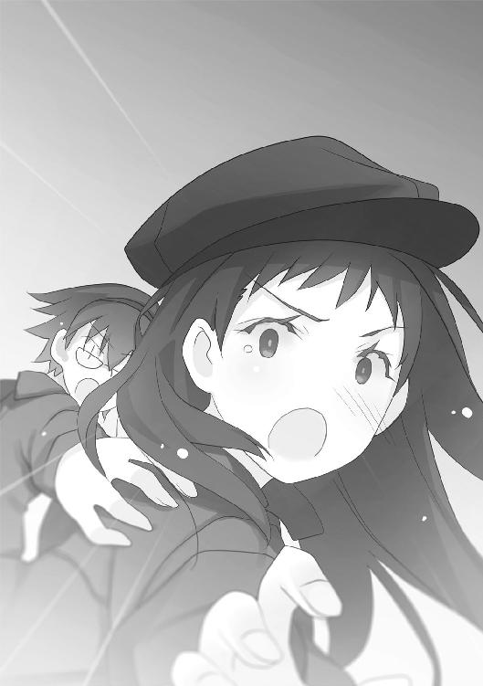
車内は茶深、〝コノハ〟、初季、夕、そして千晴が滅茶苦茶に絡み合った状態だ。追っ手を振り切ることができるかどうかも五分五分といったところか。
「千晴......」
そんな状況でも、茶深は千晴に摑みかからずにはいられなかった。
「アンタ──一体、何をしやがったッ！」
両手で千晴に摑みかかり、シートに後頭部を打ちつける。
茶深の剣幕に驚く〝コノハ〟たちとは裏腹に、とうの千晴は呆然としたままだ。
「え......？」
「とぼけんじゃねーわよッ！ しっかり見てたんだから！ 離れ際に〝かっこう〟に何かしやがったな？ 正直に言いなさいッ！」
茶深が責め立てると、千晴の顔が見る見るうちに歪んでいった。
「だ、だって、このまま離れたら、二度と会えないんじゃないかって──」
涙が溢れ出す顔を、手で覆って嗚咽を漏らす千晴。顔を隠す手には、首元に下げたネックレスの先──金色のリングが握りしめられていた。
「あの人たちに、連れて行かれちゃうんじゃないかって思ったら......」
「だから──〝かっこう〟の心を抜き取ったっていうの？」
茶深の言葉に、〝コノハ〟たちが絶句した。運転席に座る佐藤陽子も同様だ。
〝三匹目〟の能力は、同化である。
その能力を利用して〝三匹目〟自身が、あらゆる人間の中に宿ることで誰にも正体を知られずにいた。データベースに虫憑きの夢を蓄えるという魅車八重子や〝Ｃ〟の発想も、元は〝三匹目〟の在り方をヒントにしていたことが窺える。
その力を、鮎川千晴という少女は──自らの弟に使ったのだ。
「自分が何したか分かってんの......？」
「ううぅ......」
「それは！ 化け物の力よッ！ 〝始まりの三匹〟っていう得体の知れない連中が、人の夢を喰うための力でしょうがっ！ アンタまで〝始まりの三匹〟の力を利用して、〝Ｃ〟みたいに人を弄ぶような存在になりたいの？」
「うぅぅうっ......！」
「それも弟を......！ アンタは身も心も〝始まりの三匹〟になっちまったっていうの？」
茶深が罵倒しても、千晴は泣きながら呻くだけだ。
千晴の気持ちが理解できないわけではない。
血を分けた弟のことを諦めることができなかった──その一言に尽きる。
「......ま、また呼びかけ続ければ、きっと大助だって──」
唸るように言う千晴を、茶深はまたシートに叩き付ける。
「まだ言うか、くそったれ！ 実の姉が呼びかけても、〝かっこう〟は拒絶したのに！ 他の誰が呼びかければ反応するって──」
自分の言葉に、ハッとする茶深。
実の姉でも無理だったのに、他に一体誰が彼を呼び起こすというのか──。
思いついてしまった。
すぐ横で、海老名夕が眠っているせいでもあるかもしれない。
──一号指定が揃う......！
夕が叫んだ、その言葉。
それは叶わぬものとなったが、あるいは──。
「......」
「茶深？」
急に千晴から手を離し、車内でうずくまった茶深に〝コノハ〟が声をかける。
「──ありえねーわ......」
口では否定するも、茶深の頭が勝手に馬鹿げた計画を組み立てていく。
「一か八かどころじゃねー......でも元々、勝ち目は......いや、一つでもうまく行けば結果的にはプラスに......馬鹿か、リスクが高すぎる......取り返しのつかないことに......」
千晴を化け物と罵ることも、二度とできない。
たった今、茶深の中で構成されつつある計画は、そんな化け物の力すらも利用した上に──舞台と脚本を横取りするどころか、それらに火を放つようなものだ。
だが、あるいは──。
「......死体に鞭打って目を覚まさないなら......散弾銃で撃って火を点けてでも......？」
目を動かした、茶深の視線の先にあるもの。
それはルシフェラというこの場にいない手駒の能力を宿した、小型の機器たち。
大量の携帯電話だった。
「茶深ちゃん」
運転席の佐藤陽子が唐突に言った。
「何か、思いついたみたいだけど──大丈夫？」
顔を上げると、バックミラーの中で元魔王が不気味に嗤っていた。
「虫憑きの秘密を知るために、を探したよね。でも彼に接触しても何も聞けなかった。次はアリア・ヴァレィを追いかけたものの、結局は虫憑き誕生の瞬間は不鮮明。仕方なく強力な手駒に頼ろうとしたのに、〝かっこう〟は生き返らなかった──」
辛辣な評価だ。だが言い返すことはできない。
全て、事実だからだ。
「今まで失敗続きだけど......次こそは、期待していいんだよね？」
気色の悪い目つきでプレッシャーをかけられずとも、分かっている。
所詮、茶深の精神支配の能力など、たかが知れているのだ。本人たちが本気で拒絶すれば──茶深を見限れば、いずれ解ける程度のものである。
また失敗すれば、茶深はなけなしの手駒すら失うだろう。
それなのに、茶深の口から出たのは──。
「いや......」
否定の言葉。
「次こそ──今までで一番、くそったれな作戦だわ」
笑ってしまうほど、馬鹿げた計画だ。
実際、その内容を聞くまでもなく、佐藤陽子がクスリと笑んだ。横にいる〝コノハ〟も、小さな笑みを口元に浮かべていた。
だが、二人は──それ以上、茶深に対して何も言わなかった。
「〝コノハ〟......包囲網を突破し次第、監視を始めるわよ」
茶深の言葉に、〝コノハ〟が首を傾げた。
「監視？ 何を？」
気が沈んでいくのが分かった。
自分自身を含め、何一つ思い通りにならない現状に腹が立って仕方がない。
しかし──茶深は笑う。
はじめての手駒である、あの猫のように。
「〝かっこう〟以外の──一号指定どもを」
かくして。
菰之村茶深という小物が企てた計画は、現実のものとなり──。
野望を秘めた携帯電話が、それぞれの一号指定の手元に運ばれたのだった。
一人は、レイディー・バード──立花利菜。
一人は、炎の魔人──ハルキヨ。
そして、もう一人は──。
3.02 アリス
彼女は一部始終を見ていた。
自らの〝虫〟である、一匹の蝶々を通して。
まぶたを閉ざして眠る彼女の上にとまった蝶々──鮮やかな銀色に輝くモルフォチョウが、ピクリと触覚を持ち上げた。
「──こんなもん、逃げ切れるわけねぇじゃねぇかっ！」
叫んだのは、彼女を抱えて走る〝霞王〟という少女だった。
〝霞王〟は分厚いジャケットに包まれた彼女を抱え、さらに自らの能力である霞で支えていた。さらに大量の霞が十数人もの負傷者を支えて運んでいる。
「敵も味方も数が多すぎるぜ......！ 逃げ込む先にアテはあんのかよっ！」
〝霞王〟の声は、しかし乱戦の怒号にかき消された。
〝Ｃ〟殲滅作戦の拠点としていたドーム施設を脱出したのは、つい先ほどのことだ。
それなのに──特別環境保全事務局と〝むしばね〟の混合軍は、早くも広い国道で刺客の〝蘇生者〟たちに包囲されつつあった。
作戦失敗のダメージを残したまま、逃走する虫憑きたちの数は多い。
そこへ際限なく、〝Ｃ〟の刺客である虫憑きが襲いかかる。
さらには自衛隊も、彼らの行く手を阻もうと結集しつつあった。
撤退戦はすぐに混戦となり──ついには、その進行を阻まれてしまった。
「借りるよ、〝霞王〟」
「あっ、てめぇ！」
スーツ姿の青年が、〝霞王〟のゴーグルをかっさらった。
土師圭吾だ。ただでさえ病人のようだった顔色が、走り続けたせいで真っ青である。
『どうして止まったの？ 先頭はどうなってんのよ、〝四ツ葉〟！』
土師がゴーグルを操作し、スピーカー機能をオンにした。指揮官である〝照〟の叱咤と、他の虫憑きたちのやり取りが響く。
『疲れてるでしょうけど、突破役のアンタが止まったら、うちら皆すぐに全滅よ！』
『毒霧パンチっ！ ──自衛隊の数が多い！ 殺さずに無力化するのは、単独じゃ難しいよ！ 一人でいいから高位の戦闘員をこっちによこして！ できれば精神汚染系！』
『〝疫神〟！ 殿はどう？ 〝月姫〟一人に任せられるようなら先頭に援軍に行って！』
『ちょっと、厳しいねぇ......強めの連中に手こずってる、元殲滅班かねぇ？』
『それなら......北中央支部！ 右翼側の様子はどう？ 戦力を割けるなら、Ａチームの中から一人だけでも──』
『無理、無理。ただでさえ、いつものチームからアンタが抜けてガタガタなのに』
『くっ......〝玉藻〟！ 結界を張るための体力温存は撤回！ 先頭に！』
『りょーかいっ！』
『待って......！ 中央にいる負傷者や支部長たちの体力が持たないわ！ 今、先に進まれてもついていけない......！ 私が少しでも回復するから、ちょっとだけ待って！』
『こちら、〝火巫女〟！ 左手より敵の加勢が近づきつつあります......！』
『〝兜〟だ。〝むしばね〟は比較的、疲労とダメージが少ない。彼らといっしょに新手の迎撃にあたろう』
スピーカーから聞こえるのは、劣勢を知らせる声ばかりだ。
大勢の人々が叫ぶ声。
時折、銃声。
回復能力を持つ〝ねね〟の、場違いに綺麗な歌声。
虫憑きたちが命を擲って戦う戦場で、銀色のモルフォチョウが触覚を揺らす。
『それなら──十五分！』
苦境の中、〝照〟が生き延びるための苦肉の策を打ち出す。
『十五分だけ、この場に留まる！ 各自、持ち場の現状維持に集中！ 〝玉藻〟もやっぱり体力温存で！ ──〝りんりん〟、自衛隊の車両でも構わないから周囲にある自動車をできるだけ乗っとって！ それに支部長たちや怪我人を乗せて負担を減らした上で、〝霞王〟も突破役に回ってもらう！ その上で十五分後、強行突破するわよ！』
一か八かの賭けだが、他に選択肢はない。
緊張に包まれる戦場に、逆に緊張感のない声が加わった。
『あーあー、聞こえる？ ども、塩原鯱人です。特環の人からゴーグル借りたよ。オレは何をすればいい？』
『アンタ......！ 何してたのよ、もう！』
『ドームでレイディーっていう美人さんを見送ってた。彼女が〝Ｃ〟を追い払ったから、次は多分──〝Ｃ〟はこっちに来るよ』
一瞬、戦場に飛び交う怒号が消えた。
劣勢の中、〝Ｃ〟までもが追い討ちにやって来る。
その報告で全体の士気が下がるのを怖れたのか、すかさず〝照〟が声を張り上げた。
『あと十分に変更！ うちも突破役に加わるわ！ ──包囲網を突破したら、〝玉藻〟はできるだけ大きな結界を張って！ アンタの結界は〝Ｃ〟や感知能力者にも通用することは実証済みだから、少しでも距離を稼いで身を隠せる場所を探すわよ！』
『う、ううむ......たった十分で、どれだけの車両を操れるか自信がないのだが......』
『が、がんばるけどぉ、全体を覆うほどの大きさの結界を張るだけの体力は......』
『ガタガタ言うな！』
〝照〟の一喝が戦場に響き渡る。
『失敗すれば、死ぬのよ。──今までだって、うちらはずっとそうだったでしょ！』
指揮官の放った一言に、また戦場が静まり返った。
『......〝かっこう〟みたい』
『う、うるさい、バカ！』
誰のものとも分からない呟きに、動揺する〝照〟。
ようやく息が整ったらしい土師圭吾が、ゴーグルに口を寄せる。
「〝霞王〟、中央本部のゴーグルで個人回線に変えるのって、どうやるんだい？」
「適当にやりゃあいいだろ！ 東中央支部のと大して変わんねぇよ！」
仲が悪いのか、モルフォチョウの見ている前で〝霞王〟が土師を怒鳴りつける。
「ありがとう。ああ、できた。──〝照〟、ちょっとぼくのところへ」
『......本部長に今後の作戦を確認する！ 鯱人！ 少しだけ指揮を代わって！』
『えっ、オレ？ 新参者が仕切っていいの？』
『いいワケないでしょ！ でもアンタの機動力なら自分の目で全体の様子を確認できるし、〝あさぎ〟の最後の弟子だけあって、虫憑きの扱い方も教わってるみたいだから仕方なくよ！ みんなも数分間だけだから、仕方なく従って！』
『あはは、ひどいなあ。〝照〟ちゃんより上手くやっちゃったら、ゴメンね？』
戦場全体から舌打ちの大合唱が響く中、土師はさらに言う。
「〝兜〟。赤瀬川七那に、ぼくのところに来るよう伝えてくれるかな？」
『了解』
二分と経たずに、〝照〟と赤瀬川七那が土師圭吾の前に現れた。
しかし、そこにはもう一人。
「君は？」
十代前半の女の子だ。モジモジしている本人に代わって七那が言う。
「リコルよ。私の護衛だから、気にしないで」
「へえ、ぼくの知らない子だね。──ん？」
リコルという少女が、無言で歩き出した。
少女が近づいたのは──彼女の下だ。モルフォチョウを通じて見上げる中、彼女の上に一台の携帯電話を置く。
「リコル？ それは、何？」
首を傾げる七那の下に戻り、リコルが小さな声で囁く。
「ルーシィさんが......」
「ルシフェラがアリスにそれを渡せって言ったの？」
コクリと頷く少女を、土師圭吾はじっと見つめていた。
謎の行動の意図を測ろうとする青年に対し、しかし〝照〟が声をかける。
「土師本部長。私の指示に問題がありましたか？」
「──いいや、良くやってくれてるよ。北中央支部は良い局員を持ったものだ」
そう言って土師が向けた視線の先には、北中央支部の岳美支部長がいた。見た目だけは紳士然とした男性が、肩をすくめる。
「さて、まずは赤瀬川七那くん。赤瀬川グループ会長にして、円卓会の会員でもある君にお願いがあるんだ」
土師が向き直ると、赤瀬川七那が胡散臭そうな顔でステッキを回転させた。
「お願い？」
「君のツテで、大きな船を用意してもらえないかな？ できればもう出航準備が出来ていて、船足が速いほどいい」
〝照〟と赤瀬川七那が、同時に眉をひそめた。
「ぼくらは戦力を回復させるためにも、一度〝Ｃ〟から逃げる必要がある。となれば彼女の目の届かない場所──〝蘇生者〟はもちろん、電子網に居座る〝Ｃ〟の手からも届かない空間に逃げる必要があるわけだ」
ハッとしたのは、〝照〟だった。
「海──」
土師は薄笑いを浮かべ、人差し指で眼鏡のズレを直した。
「そう、ぼくらは大海に逃げ、態勢を立て直す。たとえ〝Ｃ〟といえど、そこまでは追いかけてくることはできないはずだ」
「偶然ね。私もそう思って、あるものを運ぶために船を用意させていたところだわ」
赤瀬川七那が言って、土師圭吾を見つめ返した。
「もちろん、ここから一番近くにある港にもグループ系列の運送会社があるわ」
「じゃあ、ひとまずの目的地はそこだ」
土師たちのいる場所に、数台の自動車が現れた。
運転席に誰もいないそれらに、各支部長や〝霞王〟が運んでいた負傷者たちが乗り込んでいく。その中には東中央支部の支部長でもある、不安顔の五郎丸柊子もいた。
七那が言う。
「私があるものを運ぶために用意させた船は、事態が落ち着くまで遠洋に留まるためのものよ。──私たちも体力が回復するまで、ずっと海の真ん中に居座るつもり？ そうなると食料や生活物資の手配と積み込みが必要になるから、時間がかかるわよ」
「いいや、行き先は決まっている」
「決まっている？ すみません、本部長......行き先があると、それはそれで問題では？ 我々が滞在できるような場所では、相手にも推測されてしまう可能性が......」
「大丈夫。その場所は──もう存在しないんだよ」
「は？」
「いや、正確には、もう誰も知らないというべきかな」
軽薄な笑みを浮かべる青年に対し、〝照〟と七那は疑いの眼差しを向ける。
「その場所は──小さな島なんだ」
ピクン、と。
彼女の上で、銀色のモルフォチョウが触手を持ち上げた。
「レイディーには、すでに伝言を残した。彼女もそこに向かうだろう」
「......アテがあるなら、いいけど。さすがに同じ場所にこれだけの人数を運べる船を集めるとなると、時間がかかるわよ」
「その心配もいらない。船は少なくていい」
首を傾げる〝照〟に向かって、土師は言う。
「〝照〟。この場所を脱出したら、全体をいくつかに分けて別行動をとるんだ。これだけの人数が一カ所に集まっていたら、いずれ今のように包囲されて全滅する」
「え......し、しかし、戦力を分散してしまうのは危険では？ 高位の局員がバラバラになってしまったら、それだけ防衛の手段も──」
「戦力を分散しろとは言っていないよ」
目を細める土師に対し、〝照〟は怪訝そうな顔をしていたが──。
すぐに、ハッとして顔を歪める。
睨むように自分を見つめる〝照〟に向かって、土師が平然と命令した。
「いずれにしろ、ここにいる全員を守るのは不可能だ。だから高位の虫憑きは、最低限の重要人物を守ることに集中し、それ以外の虫憑きは少しずつ本隊から分離させる」
「──囮、ですか」
血に濡れた〝照〟のバイザーと、土師圭吾の眼鏡が向かい合う。
「もちろん切り離す人間には、それっぽい目的地を言っておいてくれよ。ぼくらの目指す方向とは遠く、バラバラなほどいい。──赤瀬川くん。そういうワケだから、船は少なくていいよ。そのぶん手配を急いでくれ」
赤瀬川七那は何も言わなかった。冷たい眼差しで土師を睨むも、作戦に反対することもなくリコルを伴って立ち去っていく。
「他に逃げ切る作戦があるなら、いつでも受け付けるよ、〝照〟？」
「......」
「言っておくけど、ぼくは虫憑きが嫌いなワケじゃない。そういう意味じゃあ魅車副本部長と似てるかもね。──でも、彼女とは違う部分もある」
土師圭吾が、戦う虫憑きたちを眺めながら言う。
「虫憑きで永遠に遊びたい魅車とは違って......ぼくは、こんな戦いなんてさっさと終わらせたいのさ。そのためには必要なものは守り、不必要なものは切り捨てる。──今の最重要人物は言うまでもなく、〝眠り姫〟アリスだよ」
彼女の上で、銀色のモルフォチョウが触覚をもたげた。
「......行動を、始めます」
〝照〟が奥歯を嚙みしめ、押し殺した声で呟いた。身を翻す。
『〝照〟よ、指揮に復帰する！ そろそろ時間よ、準備はいい？』
土師圭吾が自衛隊員の輸送用大型トラックに乗り込んだ。〝りんりん〟が奪ったものだ。〝霞王〟によって彼女もモルフォチョウとともに土師と同じ荷台に乗せられる。
『私と〝霞王〟と〝四ツ葉〟で、前方に血路を開く！ その後、〝玉藻〟はできるだけ広範囲に意識迷彩の結界を展開！ ついでに鯱人も全体の質量を下げて！ 身を軽くして、一気に突破する！』
そこで〝照〟が声のトーンを落とした。
『突破後の指示は、各チームに私が直接伝える。......万が一にも〝Ｃ〟に盗聴されないようにするためにね』
「良い口実だ」
荷台の中で笑う土師圭吾を、モルフォチョウがじっと見つめる。
視線に気づき、モルフォチョウに向かって圭吾が呟いた。
「......キミは、途中でリタイアしないでくれよ？」
『やるわよ、〝霞王〟！ 〝四ツ葉〟！』
『っしゃあ！』
『いくよー！』
『──西から強力な〝炎〟が急接近！』
しかし〝照〟たちの鬨の声を、〝火巫女〟の声が遮った。
『〝Ｃ〟です！』
全軍の中心部、虫憑きたちの密集地に金色の光が散らばった。
金色のシーアゲハだ。
無数に舞うそれらが、地表に溶け込んで一点に集中していく。
『受け持つ』
ハスキーな女性の声とともに、地面が揺れた。
地響きとともに一瞬で地上に現れたのは、金属製の水道管や電線、電灯などが絡まり合って出来た尖塔だった。
金色の雷が、地表から天に向かって突き抜けた。
虫憑きたちを一網打尽にすべく、〝Ｃ〟が放った電撃攻撃は──しかし急造の避雷針に吸い寄せられ、一人も打ち抜くことなく空に放電されて消えていく。
『助かったわ、〝さくら〟！ さあ、突破するわよ──感覚遮断！』
『おらあぁああっ！』
『毒霧パンチッ！』
前方で、激しい破壊音が響き渡った。
『ちょっと、ふわっとするよ』
鯱人の声と同時に、戦場全体が橙色の輝きに包まれた。虫憑きたちの身体から、薄く輝く蜻蛉──アキアカネが飛び立つ。
『全軍、前進！』
〝照〟の命令によって、虫憑きたちがいっせいに移動を開始した。
「さあ、行こう」
エンジン音をかき鳴らして進むトラックの中で、土師圭吾が呟いた。
青年の視線は、はるか遠くの地を見るかのように細められている。
「反撃の地──青播磨島へ」
彼女は、見ていた。
自分の〝虫〟である、銀色のモルフォチョウを通して。
彼女を取り巻く虫憑きたちが、文字通りに血反吐を吐きながら戦う姿を。
〝Ｃ〟殲滅作戦に失敗し、決死の逃避行を繰り広げる彼らは──。
戦い、傷つき、倒れていく。
モルフォチョウの目にも、見る見るうちに彼らの数が減っていくのが分かった。敵の攻撃を受け、あるいはチーム単位で分離し、時に力尽きて置いてけぼりになっていく。
そんな地獄のような光景を、彼女は知っていた。
彼女もまた、かつてそのような光景の果てに、敗北したのだ。
なぜ、敗けたのか？
その理由は、分からない。
「──」
ただ、そんな地獄に、自分が舞い戻った理由。
とうに忘れ去られ、ほとんどの人間が知るはずもない、自分という存在が再び揺り起こされた理由だけは、はっきりと分かった。
「......戦うため、よね」
彼女の口から、小さな呟きが漏れた。
最初の拠点だったドーム施設から離れて、どれくらいの時間が経っただろう？
どれだけの虫憑きが戦い、減っていっただろう？
そんな感覚すら曖昧になった頃──彼女は、自分の置かれた空間が現実と隔絶していることに気づいていた。
虫憑きたちが、鬼の形相で永遠に蘇生者たちと傷つけ合う。
共食いのような殺し合いが繰り返される無間地獄の中で、彼女は立ち上がった。
「私に求められているのは──戦いを終わらせるための力なんでしょう？」
いつの間にか停車したトラックの外に、一匹の幽鬼が佇んでいた。
漆黒の──否。
鮮血に染まったロングコートを纏い、角のように髪を逆立てた人物だ。
片手に大型の自動式拳銃をぶらさげたそいつは、まるですでに一度──いや、一度どころではなく何度も死線をくぐったかのように、傷だらけだった。
「──いいや」
首に壊れたゴーグルをかけた幽鬼は、一応は少年のようだ。乾いた血がこびりついた顔には、悲壮な表情が貼り付いている。
彼女は、彼のことを知っていた。
だが彼が、どうしてそのような表情をしているのかが分からない。
「俺はお前に託そうと......いや、謝りたかったんだ。でも──」
弱々しい顔で言い淀む少年。
かつては悪魔と呼ばれていたほどの虫憑きの成れの果てを、彼女は嘲笑う。
身を起こした彼女は、横たわったままの彼女のジャケットから、金属製のロッドを取り出した。彼女の手の中で伸びたロッドとモルフォチョウが同化し、銀色に輝く大きな槍と化す。同時に、彼女の肢体に銀色の模様が浮かび上がっていく。
異様な姿に変わっていく彼女を見て、少年が血塗れの拳銃を握りしめた。
「〝お前〟とは別れた、とアイツは言っていた。──だから、お前はそいつになった気になっているだけなんだ」
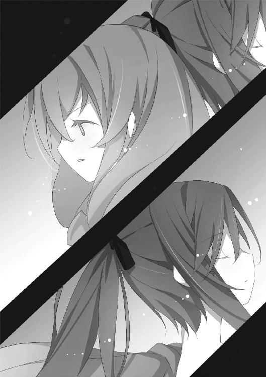
「何を言っているのか、分からないわ。そんなことが今、関係あるの？」
槍から噴き出す銀色の鱗粉が、彼女の首に巻かれた長いマフラーをなびかせる。
「私が強ければ──それでいいでしょう？」
彼女は自分の中に、強い力を感じていた。
今にも溢れ出しそうな力だ。
早く、解放したい。
自分の夢を叶えるために。
長い眠りの中で、ずっと慰め続けてきたのだ。
今も彼女の横で眠り続けている、もう一人の自分であり、彼女の親友のために。
親友の名は、アリス。
彼女から分離し、今ここにいる自分の名は──。
「寝ぼけやがって......」
眼前にいる少年は、彼女の名を知っているはずだ。
だが今にも倒れそうな血塗れの悪魔は、その名を口にしようとはしなかった。
「今のお前は──アリスじゃない」
そう言って。
ヒビ割れたゴーグルを、顔に装着し直した。
エピローグ
杏本詩歌は、知らない場所を歩いていた。
〝Ｃ〟殲滅作戦における、〝大喰い〟との決戦において──。
──大助ちゃんは、〝かっこう〟ちゃんよ？
あの化け物の囁きを、詩歌は信じてしまった。
あまりにも簡単に、その現実を受け入れてしまった。
平凡な高校生と、漆黒のロングコートに身を包んだ悪魔。
その姿や性格、ひいては声まで変えていたとしても、詩歌は──。
二人が同一人物であることを、心のどこかで感じ取っていたのかもしれない。
「......」
無人で、無音の街。
避難勧告を受けて静まり返った赤牧市で、詩歌の行く手を阻むものは何もない。
まるで詩歌の歩く道だけ、彼女以外の全てが避けているかのように。
あるいは──何か別の意思が、わざと詩歌の行く道だけを空けているかのように。
「私が......欠落者にした──」
コンビニエンスストアの窓ガラスに、自分の姿が反射して映っていた。
背は低い。顔つきも幼く、自分が一度欠落者になった数年前と、どこが成長したのかも分からない。〝大喰い〟との戦いで服はボロボロだし、顔色も蒼白だ。
何も、変わらない。
幼い頃、〝かっこう〟という少年の手で欠落者になった時のままだ。
あれから色々なことがあったはずなのに──。
今、独りぽっちで歩いている自分の姿は、あの日、あの時と何も変わらない。
「私が......〝かっこう〟くんを......大助くんを......」
違うのは──今の詩歌には、彼女の前に現れるはずの相手がいないということだけだ。
他の誰でもない詩歌自身が、再会の約束をした相手を──。
詩歌にとって唯一の待ち人を、失わせた。
「どうして──」
どれくらい、無人の街を歩いただろうか？
ひょっとしたら一昼夜、ずっと歩き続けていたかもしれない。
その間、詩歌は疑問の言葉を呟き続けていた。
「どうして、〝かっこう〟くんは......私のことを待っていられたの......？」
涙はとっくに涸れ果てた。土埃で汚れた顔には、くっきりと涙の痕が残ったままだ。
「どうして、何年間も待っていられたの......？」
数年の月日を経て出会った〝かっこう〟を見ただけで、すぐに分かった。
彼は約束通り、詩歌が戻ってくると信じ、待っていてくれたのだと。
あの時は、心から嬉しかった。
でも今となっては──詩歌には、彼のことが信じられない。
「私が戻れないかも──とは、思わなかったの......？」
無人の街が、終わった。
自衛隊によるバリケードが現れたが、詩歌は気にもとめない。
「どうして──私は、あんなに簡単に〝かっこう〟くんを......欠落者にできたの？」
ブツブツと呟きながら歩く詩歌に、自衛隊の隊員たちが道を空けた。──迷彩服を着た彼らの頭に一瞬だけ、金色の火花が飛んだように見えた。
「〝かっこう〟くんが戻ってきてくれなかったとしても──大助くんがいたから？」
バリケードを抜けて詩歌は歩き続けると、ちらほらと通行人のいる道に出た。
ボロボロに汚れた詩歌を、少ない通行人が怪訝そうに振り返る。
「大助くんが......クリスマスに待っていてくれるはずだったから？」
涙は涸れたはずなのに、顔が歪んだ。
──来年のクリスマスに、また会おう。
そう言ってくれたのは、どこにでもいる平凡な高校生の薬屋大助だった。
そのはずだったのに──。
「どうして──」
今の詩歌は自分のことが信じられなかった。
その理由も、分かっていた。
今まで自分を支えていた約束──その約束をした相手である〝かっこう〟と薬屋大助という少年を信じられなくなっていたからだ。
「どうして、大助くんは......本当のことを、教えてくれなかったの......？」
詩歌が欠落者から復活し、偶然出会ったと思っていたのが薬屋大助という少年だ。
しかし実は、彼は詩歌を捕獲することが使命の虫憑き──〝かっこう〟だった。
詩歌はそのことを知らなかった。
結果、今度は詩歌が彼を欠落者にした。
彼女は自分を待ってくれる人を一度に二人失い──。
かつて虫憑きになった時と同じように──。
独りぽっちになった。
「どうして......教えてくれなかったの......？」
いや──理由など、知りたくない。
二人が同一人物であるという真実さえ知らなければ──詩歌は信じることができた。
〝かっこう〟が、また戻ってきてくれるということも。
薬屋大助が、詩歌を待っていてくれるということも。
両方、信じられたのに──今は、疑ってしまっている。
薬屋大助──〝かっこう〟は、詩歌のことなど待っていない。全ては詩歌を再び捕獲するための罠であり、ただの噓にすぎなかったのかもしれない。
詩歌の待ち人など──最初から、一人もいなかったのだろうか？
「──」
鐘の音が、鳴り響いた。
此の世のものとは思えないほど清らかな音が、詩歌の胸に染み渡っていく。
『だから、言ったでしょう？』
詩歌の前に現れたのは、小柄な少女だった。髪を二つに縛り、ハートマークの模様があるワンピースを着た姿は、はじめて出会った時と変わらなかった。
堀内愛理衣──〝Ｃ〟である。
『あなたの存在を許してくれる人なんて、最初からいなかったんです』
特別環境保全事務局に捕らえられた詩歌が、白樫初季や海老名夕とともに赤牧市から脱出したのが、遠い昔のように思えた。
あの時に出会った堀内愛理衣が今、再び彼女の眼前にいる。
『それでも、あなたは──良くがんばりました』
愛理衣が微笑み、詩歌に向かって両腕を拡げた。
母親が子供を褒めるように、優しく詩歌を迎え入れようとする。
『独りぽっちで戦い続けたあなたを、私が愛してあげます』
また、鐘の音が響いた。
抗いがたい甘い誘惑が、詩歌の身体を傾けさせる。
『私が、あなたを必要としてあげましょう』
少女の胸に、詩歌は頭を埋めた。
詩歌を苦しませる迷いや疑惑が、金色に染まって消えていく。
『お休みなさい、私の愛しい〝鳩〟──』
抵抗もやむなく。
否──抵抗することもなく金色に染まっていく視界の中で。
堀内愛理衣の頭に、荘厳なティアラが形成されつつあった。
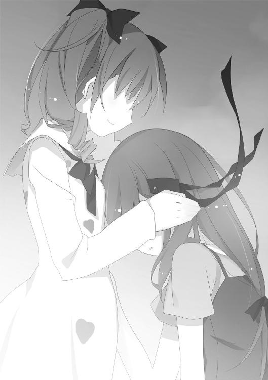
あとがき
こんにちは、岩井恭平です。
長きに渡った今シリーズも、いよいよ大詰めとなります。
今巻はその前半戦として、〝虫〟や虫憑きを巡る戦いに決着をつけようとする人々、その中でも主軸となりうる数名が、最終決戦に参戦できるのかどうかを描いています。
強烈な自我を持ちながらも、数奇な人生に翻弄されてきた人物たち。
物語が終息するならば、必然的に彼らも自分自身の戦いに決着をつけなければならないということになるでしょう。
これまで多くの登場人物が出てきた、というのは以前にもあとがきで書きました。
当然、彼らの人数と同じだけの人生があり、運命があり、現在に到った理由があるわけです。虫憑きであるという点ですら、共通点にはなり得ません。中には虫憑きと関わっただけの普通の人間もいるわけですから。
これまで読んでくださった方の中にも、彼らの人生の行く末を想像した方がいたかもしれません。あるいはこうなって欲しい、という思いを抱いてくれたことも。実際、いただくお手紙の中で、好きな登場人物について書いてくださることも多いです。とても嬉しいことです。本当にありがとうございます。
それだけ多種多様の生き方や想像される形がある彼らが、果たして一つにまとまって、決戦に挑むことができるのか？
その時を迎えるにあたって描けることは、二つ。
彼らが最終決戦に挑むかどうかの選択。
そして彼らが決戦の先に、どのような未来を思い描くか。──その通りに生きられると決定していないにもかかわらず。
その様を描くことが、これまで期待して戴いた読者様に応えることになれば、と切に願っております。
今巻を刊行するにあたり、いつものように多くの方々にお世話になっております。
まずは編集部の皆様、特にこれまで今シリーズを編集して戴いた担当様。それも今巻までということになりましたが、本当にお世話になりまくりました。本当に感謝の念に堪えません。今までありがとうございました。
イラストを描いてくださっている、るろお様。いつも遅筆に付き合わせてしまっているのに、クオリティの高いイラストをありがとうございます。
そしてここまで見守って戴けている読者の皆様、本当にありがとうございます。
最終決戦と、それにまつわる登場人物の行く末をできるかぎり早くお見せできればと考えております。
願わくば、その結末を楽しんで戴ければ幸いです。
岩井恭平
カバー・口絵・本文イラスト／るろお
カバー・口絵・本文デザイン／田畑善行＋design CREST
ムシウタ
14．夢謳う虫たち（上）
岩井恭平
平成26年2月1日 発行
(C) 2014 Kyohei Iwai, llo
本電子書籍は下記にもとづいて制作しました
角川スニーカー文庫『ムシウタ 14．夢謳う虫たち（上）』
平成26年2月1日初版発行
発行者 山下直久
発行所 株式会社ＫＡＤＯＫＡＷＡ
〒102-8177 東京都千代田区富士見2-13-3
03-3238-8745（営業）
編集 角川書店
〒102-8078 東京都千代田区富士見1-8-19
03-3238-8694（編集部）
http://www.kadokawa.co.jp/